개요
2026. 03. 19 · 작성자-ownuun
SPEC 4기 디자인팀의 역할, 디자인 시스템, 방향성을 소개하는 문서입니다. 우리 팀이 무엇을 하고, 어떤 방식으로 일하게 되는지를 이해하는 것이 첫 번째 단계입니다.
이 챕터에서 배우실 내용은 다음과 같습니다.
- 팀의 임무와 제작 결과물
- 에센스 디자인 시스템이란 무엇인가
- SPEC 공식 색상 팔레트
- 팀 운영 방향성
팀 소개 & 임무
SPEC 4기 디자인팀은 SPEC의 모든 시각적 파트를 담당합니다. PPT, 카드뉴스, 배너, 포스터 등 SPEC에서 필요로 하는 시각 콘텐츠를 기획하고 제작하는 것이 핵심 임무입니다.
피그마: SPEC 4기 디자인팀 피그마
구체적으로 다음과 같은 결과물을 제작하게 됩니다.
- PPT 발표자료 — 동아리 소개, 피치덱, 내부 발표 등
- 카드뉴스 — 인스타그램 홍보, 스타트업 뉴스레터, 활동 기록
- 배너 & 포스터 — 리크루팅, 행사 홍보, X배너, 현수막
- 랜딩페이지 — 동아리 소개 웹사이트
- 기타 시각물 — 로고, 와이어프레임, UI 디자인
에센스 디자인 시스템
본 팀은 배달의민족 디자인팀에서 활용하고 있는 에센스 방법론을 도입합니다.
에센스 방법론이란, 디자인의 군더더기를 전부 걷어내고 핵심 시각 요소 하나만 추출한 뒤, 이를 AI의 스타일 참조로 넣어 일관된 디자인 자산을 대량 생산하는 방식입니다.
배달의민족의 사례를 보면 이해가 쉽습니다. 배달의민족은 원래 스컬피(조각용 점토)를 손으로 직접 깎아서 디자인 자산을 만들었습니다. 퀄리티는 높지만, 하나 만드는 데 시간이 막대하게 소요되는 작업이었습니다.

< 스컬피로 깎아 만든 에센스 원형 >
이를 해결하기 위해 디자인팀은 스컬피로 깎은 듯한 느낌의 핵심 질감 하나를 "에센스"로 추출했습니다. 여기에 브랜드 컬러와 명도 대비를 입히면 아래와 같이 다양한 스타일 참조용 에센스가 만들어집니다.

< 컬러를 입힌 에센스 변형 >
이 에센스를 Adobe Firefly 등 AI 이미지 생성 도구의 스타일 참조에 넣고, "오토바이 그려줘" 한 문장만 입력하면 배달의민족 스타일의 오토바이가 바로 나오는 시스템을 구축한 것입니다.
이 방식의 핵심은 다음 세 가지입니다.
- 에센스 추출 — 브랜드의 시각적 본질을 군더더기 없이 하나의 이미지로 압축합니다. 컬러, 질감, 명도 대비 등 핵심 요소만 남깁니다.
- AI 스타일 참조 — 추출한 에센스를 AI 도구의 스타일 레퍼런스로 넣습니다. 프롬프트는 "바나나 그려줘" 수준으로 짧아도 일관된 결과가 나옵니다.
- 대량 생산 가능 — 인턴이든 신입이든 이 에센스를 넣고 AI를 돌리면 2~3년차와 비슷한 수준의 결과물을 만들어낼 수 있습니다.
SPEC 디자인팀 역시 우리만의 에센스를 선정하여 모든 시각물에 적용할 예정입니다. 이를 통해 누가 만들어도 "SPEC 스타일"이라는 일관된 정체성을 유지할 수 있습니다.
아래는 미리 만들어둔 SPEC 에센스 모음입니다. 원본 파일은 피그마에 들어있으며, 이 에센스들을 AI 도구의 스타일 참조에 넣어 테스트해볼 수 있습니다.

< SPEC 에센스 모음 1 >

< SPEC 에센스 모음 2 >
SPEC 기반 색상
모든 디자인 결과물에 사용되는 SPEC의 공식 색상 팔레트입니다.

< SPEC 색상 팔레트 >
| 용도 |
색상명 |
코드 |
| Primary |
오렌지 |
#FF6C0F |
| Primary Variant |
옐로우 오렌지 |
#FF9900 |
| Secondary |
퍼플 |
#4C4780 |
| Black |
블랙 |
#202020 |
| White |
화이트 |
#FCFCF8 |
Primary(오렌지)가 SPEC의 메인 컬러이며, 강조가 필요한 경우 Primary Variant를 사용합니다. Secondary(퍼플)는 보조 색상으로 활용됩니다.
방향성
본 팀은 다음 세 가지 방향으로 운영됩니다.
AI 도구 적극 활용 — 디자인 비전공자도 AI 도구를 활용하여 실무급 결과물을 제작할 수 있습니다. 다양한 AI 디자인 도구를 실험하고, 효과적인 것은 팀의 표준 워크플로우로 채택합니다.
원칙 기반 디자인 — 감각에 의존하지 않고 검증된 디자인 원칙(CRAP, 시각적 위계, 색상 이론 등)을 기반으로 작업합니다. 원칙을 알면 AI 도구에 더 정확한 지시를 내릴 수 있습니다.
실전 중심 — 실제로 만들어야 하는 상황이 오면, 모든 팀원이 각자 포스터를 1개 이상 제작해 옵니다. 이후 함께 피드백을 주고받으며 개선하는 과정을 반복합니다.
피그마 단축키 모음집
2026. 03. 24 · 작성자-ownuun
💡 10분 안에 이런 내용을 알려드려요!
- 기능은 대략 파악했지만 작업 속도가 나지 않아 고민이거나
- 처음 배울 때부터 단축키를 함께 익히고 싶은 실무자를 위한
- PM/서비스 기획자가 자주 활용하는 유용한 피그마 기능 단축키 모음집 및 친절한 설명
저자 이새봄
에이전시 3년 차 기획자 > 프로필 더 보기
지난 퍼블리 아티클에서 기획자와 PM이 피그마를 다룰 때 어떤 기능을 쓰면 유용한지 알려드렸는데요. PPT 대신 피그마를 활용하면 플로우 차트를 그리고 화면을 설계하는 데 필요한 반복 작업이 줄어들고, 프로젝트 구성원 전체가 코멘트 기능으로 소통하기도 쉽다고 설명드렸습니다.
이러한 장점 때문에 기획자, PM 등 많은 실무자들이 점차 피그마를 많이 사용하고 있습니다. 하지만 피그마의 기능을 익히고 활용하다 보면 아래와 같은 고민에 빠지게 됩니다.
🦸♂️기획자 1: 피그마 툴은 이제 어느 정도 익혔는데, 속도가 안 나서 툴을 쓰는 의미를 모르겠어요.
👩💻기획자 2: 피그마로 기획할 때 유용한 단축키 모음만 보고 싶어요.
🤦♀️기획자 3: 단축키 모음집을 검색해보면 정말 딱 단축키 정보만 나와서 실제 활용이 어려워요. 단축키 사용법이 자세하게 설명된 글 어디 없을까요?
알아두면 쓸모 있는 단축키, 왜 사용할까요? 어떠한 툴이든지 툴이 가지고 있는 다양한 기능들을 익히고 나면 해당 기능을 빠르고 정확하게 활용할 수 있는 방법에 대해 고민하게 됩니다. 그 고민을 해결할 수 있는 수단 중 하나가 바로 '단축키'인데요. 단축키를 사용하면 이런 점이 좋습니다.
- 마우스로 여러 번 클릭할 것 없이 바로 원하는 기능을 실행할 수 있습니다.
- 일단 손에 익으면 작업 속도가 빨라져 업무 생산성을 높일 수 있습니다.
우리에게 가장 익숙한 단축키 'Ctrl+C', 'Ctrl+V'는 각각 복사와 붙여넣기를 뜻합니다. 더불어 자주 함께 쓰이는 'Ctrl+Z'는 특정 실행 건을 바로 이전 상태로 되돌리는 기능의 단축키죠.
이렇게 컴퓨터를 사용하는 사람이라면 모두가 활용하는 일부 단축키는 대부분의 응용 프로그램에서 통용되어 사용할 수 있습니다. 이 외에도 텍스트 볼드체, 이탤릭체*, 언더라인 처리 등의 단축키도 피그마를 포함한 많은 프로그램 및 툴에서도 동일한 단축키로 적용이 가능합니다.
- 오른쪽으로 살짝 기울어진 글씨체로 인쇄 및 타이핑하는 글에서 많이 쓰이는 서식 중 하나이다. 폰트가 기울면서 폰트 왜곡이 생길 수 있기 때문에 이탤릭체를 제공하는 폰트에 한해서만 이탤릭체 설정이 가능하다.
대부분의 툴은 단축키를 가지고 있습니다. 알면 유용하게 사용할 수 있지만 손에 익기까지 시간이 걸리고, 단축키를 안다고 해도 단축키에 대한 자세한 부연 설명이 없어 시도하지 못하는 분들도 꽤나 있을 것입니다.
이번 아티클은 기획자에게 유용한 유형별 피그마 단축키들의 사용 방법을 이미지로 보고 따라 하실 수 있도록 내용을 준비했습니다. 이를 통해 조금 더 쉽고 빠르게 피그마에 익숙해지셨으면 좋겠습니다. 이 글은 윈도우 키보드를 기준으로 작성된 글입니다. 본론에 앞서 먼저 맥과 윈도우의 단축키 정보를 확인하세요!
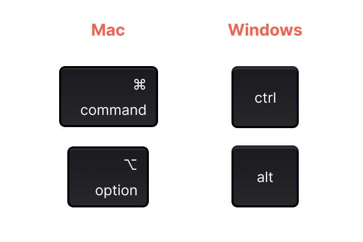
< >
피그마를 빠르게 탐색할 수 있는 단축키
피그마 단축키 도움말을 확인하는 방법
먼저 피그마에서 단축키에 대한 도움말을 확인할 수 있는 방법을 알려드리겠습니다. 우선 피그마를 실행해서 파일 하나를 열어줍니다. 파일을 열면 우측 하단에 '?' 헬프 아이콘이 존재하는데요. 중앙에 위치한 '키보드 단축키(Keyboard shortcuts)'를 클릭하면 각 기능의 카테고리에 맞는 단축키를 안내받을 수 있습니다.
단축키가 헷갈릴 때는 이 단축키 도움말 창을 실행해서 익히는 것을 추천합니다. 이때 단축키 도움말은 'Ctrl + Shift+ ?' 단축키를 통해서 더욱 빠르게 실행할 수 있습니다. 여기서 한 가지 흥미로운 점은 사용한 단축키 정보만 파란색 UI라는 점입니다. 해당 UI를 통해 내가 사용한 단축키와 사용하지 않은 단축키를 구분할 수도 있습니다.
피그마 단축키 도움말을 실행하는 단축키 ©이새봄
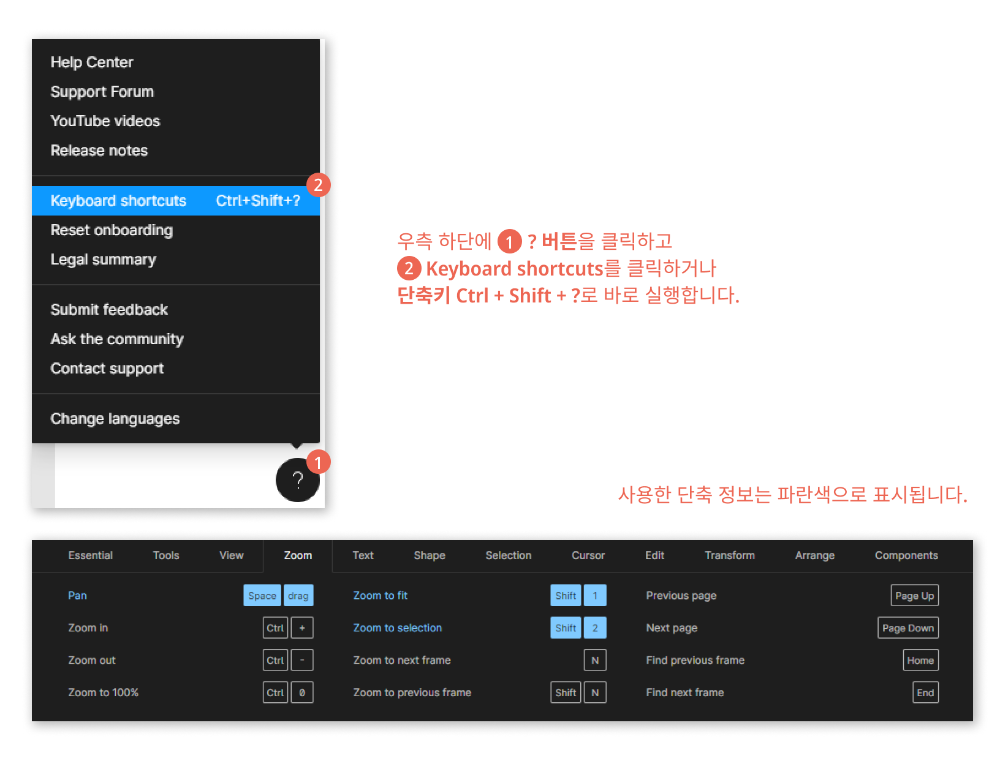
< >
피그마를 빠르게 탐색할 때 쓰이는 기본 단축키
이제 가장 기본적인 피그마 단축키를 설명드리겠습니다. 피그마를 몇 번 접해보신 분들이라면 손이 기억하는 단축키일 텐데요. 바로 캔버스 내에서 이동하고 화면을 확대/축소하는 기본 단축키입니다. 피그마를 처음 접하는 분이라도 예시를 참고하여 몇 번 따라 해 보면 자연스럽게 익숙해지실 겁니다.
💡 탐색 기본 단축키
- 캔버스 화면 확대: Ctrl + 마우스 휠 ↑ 또는 Ctrl + '+'
- 캔버스 화면 축소: Ctrl + 마우스 휠 ↓ 또는 Ctrl + '-'
- 캔버스 화면 내 자유로운 이동: Space bar + 마우스 드래그
피그마를 탐색하는 가장 기본적인 단축키 예시 모음 ©이새봄
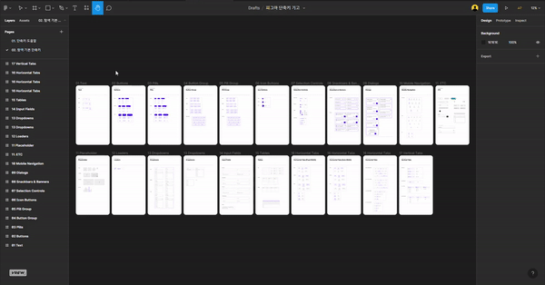
< >
기본적인 화면 확대/축소 단축키를 익혔다면, 지금부터는 진짜 실무 중에 유용하게 활용할 수 있는 화면 단축키를 소개하겠습니다.
작업 중인 모든 프레임을 한눈에 보고 싶을 때
💡 단축키: Shift + 1
화면을 확대/축소하면서 여러 프레임*을 이동하다가 작업하고 있는 모든 프레임을 한눈에 보고 싶었던 적 없으신가요? 이미 너무 확대된 화면이라면 확대한 만큼 축소를 해줘야 하고, 이미 너무 축소된 화면도 마찬가지로 축소한 만큼 확대해줘야 하는데, 이때 간단하게 모든 프레임을 한눈에 들어오도록 딱 맞게 맞춰주는 단축키가 바로 'Shift + 1'입니다.
- 특정 크기 영역 안에 화면을 담는 공간. PPT의 슬라이드 하나 하나와 비슷한 의미의 단위
이 단축키를 활용하면 어떤 프레임을 확대해서 보고 있더라도 화면에 딱 맞춰진 상태로 다른 프레임들을 한눈에 볼 수 있습니다.
캔버스에 작업하고 있는 모든 화면을 한눈에 보고 싶을 때, 'Shift + 1' 단축키 예시 ©이새봄
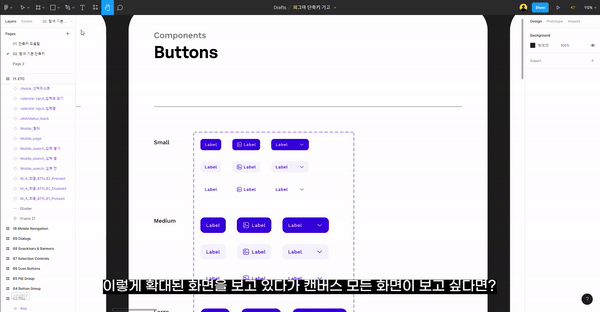
< >
내가 원하는 특정 개체 또는 영역만 크게 보고 싶을 때
💡 단축키: Shift + 2
이 상태에서 내가 원하는 특정 개체 또는 영역만 크게 보고 싶다면 'Shift + 2' 단축키를 활용하면 됩니다. 이 단축키는 도형이나 텍스트, 프레임 등 모든 개체 구성에 활용할 수 있습니다. 피그마 좌측에 위치한 레이어 패널에서 특정 개체를 선택하거나, 캔버스 내에서 특정 개체를 선택한 후 'Shift + 2' 단축키를 실행하면 사용자가 선택한 개체만을 확대해서 볼 수 있습니다.
이 단축키는 피그마로 설계를 진행하고 온/오프라인으로 이해관계자들과 리뷰를 진행할 때 유용하게 활용할 수 있습니다. 기본적인 리뷰는 프로토타입을 실행해 진행하고 리뷰를 마치고 나서 특정 화면에 대한 질문을 받았을 때 또는 부가적인 설명이 필요할 때 특정 프레임을 확대해서 보는 데 활용해 보시기 바랍니다.
원하는 개체만 확대해서 보고 싶을 때, 'Shift + 2' 단축키 예시 ©이새봄
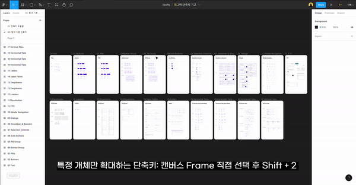
< >
빠르게 메뉴나 플러그인을 찾고 싶을 때
💡 단축키: Ctrl + /
피그마를 사용하다가 빠르게 메뉴나 플러그인을 찾아야 할 때 '빠른 실행 창(퀵 메뉴)'을 활용하면 좋습니다. 자주 활용하는 플러그인*을 실행하는 가장 빠른 수단인데요. 'Ctrl + /' 단축키를 실행하면 캔버스 상단 부분에 빠른 실행 창 검색 영역이 노출됩니다.
- 피그마에서 제공하는 기능 외에 유저가 커스텀하여 기능을 확장해서 사용할 수 있도록 하는 기능. 피그마 커뮤니티에 작업의 효율성을 높일 수 있는 다양한 플러그인이 구축 및 공유되어 있음.
여기에 찾고자 하는 메뉴, 기능이나 플러그인 명칭을 검색하면 입력한 키워드에 맞는 결과들만 리스트로 출력되어 빠르게 실행이 가능합니다. 단축키가 기억나지 않는 메뉴 또는 기능을 실행해야 할 때 또는 플러그인을 빠르게 실행하고 싶을 때 활용해보세요!
언제 어디서나 검색이 가능한 퀵 메뉴 실행 단축키 'Ctrl + /' ©이새봄
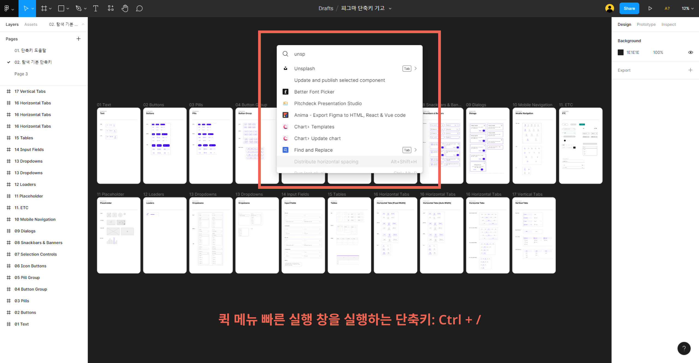
< >
레이어 배열 순서를 책임지는 단축키
레이어를 앞으로 가져오고 싶을 때
💡 단축키: Ctrl + ], Ctrl + Shift + ]
설계서를 그리다 보면 여러 개체를 하나의 그룹으로 묶어 콘텐츠 영역으로 설계할 때가 많습니다. 그렇게 그룹화하다 보면 일부 개체 요소가 의도하지 않게 뒤로 숨는 경우가 존재하는데요. 이럴 때 사용할 수 있는 레이어 배열 단축키를 소개하겠습니다.
첫 번째로 2번 정사각형 뒤로 숨은 1번 정사각형을 선택*하고, 'Ctrl + ]' 단축키를 실행해 앞으로 한 칸 가져옵니다. 두 번째로는 가장 뒤에 위치한 3번 정사각형을 선택하고, 'Ctrl + Shift + ]' 단축키를 눌러 제일 앞으로 가져옵니다. 각 예시 이미지마다 정사각형에 부여된 숫자와 좌측 패널에 그룹으로 묶인 요소 간 이동을 잘 봐주세요.
- 개체가 뒤에 숨어 있더라도 좌측 패널을 통해 개체를 직접 선택하는 것이 가능
레이어 앞으로 가져오는 단축키 예시 ©이새봄
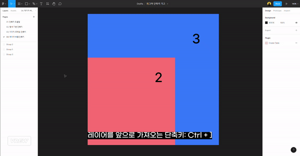
< >
레이어를 뒤로 보내고 싶을 때
💡 단축키: Ctrl + [, Ctrl + Shift + [
이번에는 각 개체 요소를 뒤로 보내는 단축키입니다. 레이어 앞으로 가져오는 단축키 예시와 마찬가지로 정사각형에 부여된 숫자와 좌측 패널을 집중적으로 봐주시면 이해가 수월합니다.
첫 번째로 2번 정사각형을 선택, 'Ctrl + [' 단축키를 실행해 뒤로 한 칸 보냅니다. 3번 정사각형의 뒤로 보내진 2번 정사각형은 제일 뒤에 위치하게 되었습니다. 이제 다시 모든 정사각형이 순서대로 위치할 수 있도록 3번 정사각형을 선택하고, 'Ctrl + Shift + ['를 실행하여 제일 뒤로 이동시켜줍니다.
레이어 뒤로 보내는 단축키 예시 ©이새봄
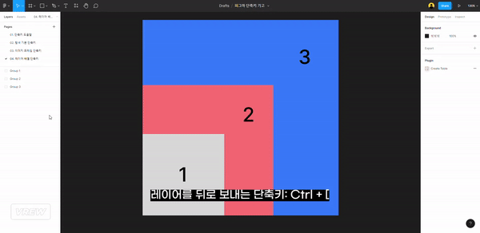
< >
이미지와 프레임 관련 단축키
도형 안에 여러 이미지를 한번에 넣고 싶을 때
💡 단축키: Ctrl + Shift + K
기획서를 쓰다 보면 도형 안에 반복적으로 여러 이미지를 넣게 되는 일이 종종 있습니다. 일반적으로는 사각형 도형으로 이미지 영역을 설계하지만, 실제 클라이언트에게 받은 실제 이미지로 설계하면 더욱 보기 좋은데요.
예를 들어, 사용자의 기본 정보를 프로필 이미지와 함께 노출하는 서비스거나 이미지를 주로 활용한 리스트를 구성하고 있는 서비스라면 이 단축키를 통해서 더욱 완성도 있는 화면 설계가 가능합니다.
호텔 객실을 선택하는 화면을 설계할 때, 객실 이미지가 들어갈 도형에 이미지를 한 번에 넣는 'Ctrl + Shift + K' 단축키 ©이새봄
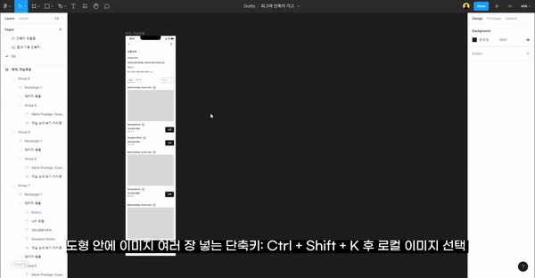
< >
원하는 부분 이미지만 빠르게 편집하고 싶을 때
💡 단축키: Alt + 마우스 더블 클릭
앞선 예시에서 호텔 객실을 선택하는 화면에서 도형 안에 여러 이미지를 넣는 방법을 소개했는데요. 객실 이미지를 넣고 보니, 제일 상단 도형에 들어간 객실 이미지가 영 마음에 들지 않습니다. 다른 두 객실과는 다르게 세로로 긴 이미지를 넣었더니 원하는 모습이 중앙에 위치하지 않고 있습니다.
이때, 원하는 이미지를 빠르게 편집할 수 있는 단축키 'Alt + 마우스 더블 클릭'을 실행하면 침대 부분이 조금 더 중앙에 위치하도록 수정할 수 있습니다. 이미지를 크롭(Crop) 상태로 두고 원하는 위치로 상하좌우 이동시켜줍니다.
원하는 이미지를 빠르게 편집하고 싶을 때 사용하는 단축키 'Alt + 마우스 더블 클릭' ©이새봄
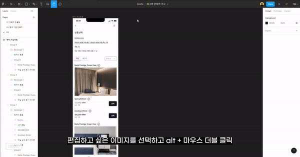
< >
이미지 추출 없이 PNG 포맷으로 바로 복사하고 싶을 때
💡 단축키: Ctrl + Shift + C
클라이언트나 내부 팀원에게 공유하는 목적으로 프레임을 추출(Export) 해본 적 있으신가요? 클라이언트가 내부 보고 문서 작성을 위해 시안의 일부 화면을 이미지로 전달해달라고 요청하거나, 내부 제안/영업팀에서 제안서를 작성할 때에 참고용으로 이미지를 요청하기도 하는데요.
이럴 때 보통 PNG 형태로 이미지를 추출하는데, 굳이 추출(Export) 탭으로 넘어가서 PNG 형태를 선택하지 않고도 바로 PNG로 복사할 수 있는 단축키가 존재합니다. 바로 단축키 'Ctrl + Shift + C'입니다. 문서에 이미지 형태로 붙여 넣기 할 때 가장 쉽고 빠르게 복사, 붙여넣기 할 수 있는 방법입니다.
모든 프레임을 추출하지 않고 일부 화면만 이미지 복사가 필요할 때 활용해 보세요. 디자인팀에 요청하지 않고도 직접 프레임을 복사하고 추출할 줄 아는 센스 있는 기획자가 될 수 있습니다.
프레임을 추출하지 않고 특정 프레임만 복사하고 싶을 때 사용하는 단축키 'Ctrl + Shift + C' ©이새봄
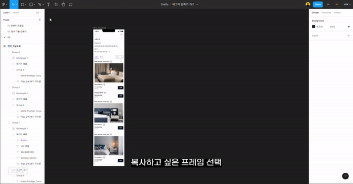
< >
원본 비율대로 개체를 확대, 축소 등 리사이징해야 한다면
💡 단축키: K
일반적으로 개체를 선택해서 크기를 조정할 경우에는 그룹으로 묶인 개체의 크기가 알맞게 조절되지 않아서 깨지는 현상이 발생합니다. 폰트 사이즈, 이미지 크기 등 일일이 다시 조정해주어야 하는 불상사가 생기기 마련입니다.
예를 들어 아이콘을 포함한 텍스트 버튼이나 여러 요소들을 그룹으로 묶인 콘텐츠 UI를 설계하고 나서 크기를 조정하려고 할 때 흔히 생기는 문제인데요. 피그마에서는 전체 프레임이나 각 개체 요소들을 비율대로 확대하고 축소할 수 있습니다. 단축키 'K'를 실행여 스케일(Scale) 모드로 바꾸면 마우스 커서도 스케일 모드로 바뀌게 되고, 이때 원하는 대로 크기를 조정하면 됩니다.
개체, 프레임 등을 비율대로 조정할 수 있는 단축키 'K' ©이새봄
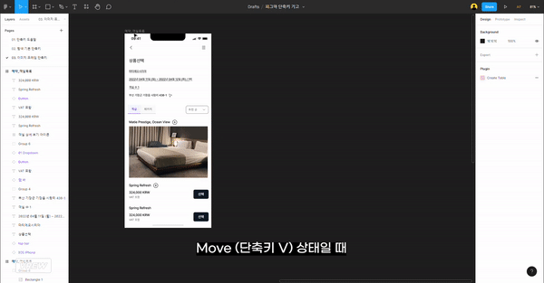
< >
주요 기능 관련 단축키
컴포넌트를 생성하고 싶을 때
💡 단축키: Ctrl + Alt + K
지난 피그마 핵심 기능 아티클에서 소개했던 마스터 컴포넌트(Master Component)* 생성도 빠른 단축키가 있습니다. 어떤 프로젝트든 자주 사용하는 UI 요소들은 마스터 컴포넌트로 만들어두면 편리하게 사용할 수 있는데요.
- 여러 프로젝트에서 공통적으로 활용하는 UI를 편리하게 설계할 때 유용한 기능
모든 프로젝트에서 활용할 수 있는 가장 기본적인 버튼, 라벨, 팝업, 드롭다운 등의 UI를 컴포넌트로 생성해두고 활용하거나 또는 프로젝트 시작에 앞서 다른 작업 예정자들과 함께 협의 후 프로젝트에 맞는 컴포넌트를 미리 세팅해두는 것이 좋습니다. 예를 들어 숙소 예약 어플이라면 여행 날짜를 선택하거나 예약 내역을 조회할 때 활용할 수 있도록 캘린더 형태 UI를 컴포넌트로 만들 수 있을 것입니다.
마우스 우클릭을 통해서 직접 컴포넌트를 생성하는 방법도 있지만, 'Ctrl + Alt + K'로 더욱 빠르게 컴포넌트를 만들 수 있는 점도 참고해보면 좋을 것 같습니다.
마스터 컴포넌트 생성 단축키 Ctrl + Alt + K ©이새봄
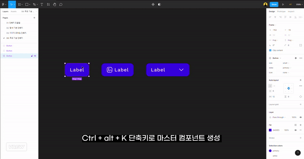
< >
인스턴스를 분리해 독립적으로 만들고 싶을 때
💡 단축키: Ctrl + Alt + B
마스터 컴포넌트를 활용해 작업하면 해당 컴포넌트를 끌어다가 복사한 개념인 인스턴스는 종속성을 띄게 됩니다. 즉, 마스터 컴포넌트가 변경됨에 따라 인스턴스도 동일하게 영향을 받게 되는데요.
하지만 설계 작업을 하다 보면 특정 화면을 위한 단독적인 UI가 필요한 경우가 생기기도 합니다. 이때 활용할 수 있는 기능이 인스턴스 분리(Detach Instance)인데요. 인스턴스를 선택하고 'Ctrl + Alt + B' 단축키를 실행하면 즉시 단독 프레임으로 변경되어 더 이상 마스터 컴포넌트에 종속되지 않게 됩니다.
미리 생성해둔 마스터 컴포넌트와 비슷하지만 조금 다른 UI를 설계해야 할 때, 새로운 UI로 다시 설계하지 말고 기존 인스턴스를 분리해 자유롭게 편집해보세요.
마스터 컴포넌트와 인스턴스를 분리해주는 단축키 Ctrl + Alt + B ©이새봄
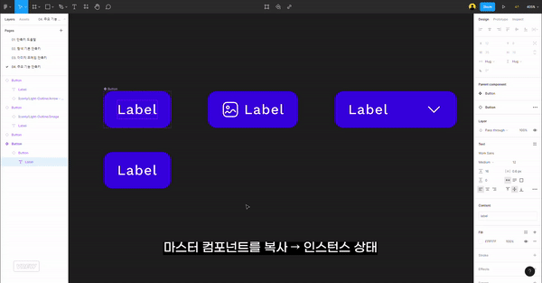
< >
버전 히스토리를 새로 생성하고 싶을 때
💡 단축키: Ctrl + Alt + S
피그마는 기본적으로 자동 저장이 되기 때문에 '파일(File) → '버전 히스토리 보기(Show version history)' 메뉴를 클릭하면 자동 저장된 히스토리를 확인할 수 있습니다. 자동 저장된 버전(autosave versions)이 바로 자동 저장된 히스토리를 의미하며 사용자 본인이 원하는 시점에 새로운 버전으로 구분할 수도 있는데요.
메뉴 별로 설계를 마치고 클라이언트에게 1차/ 2차 컨펌을 받은 것에 대한 히스토리 파악을 위해 기획자는 설계한 버전을 기록하게 됩니다. 이때 버전 타이틀은 해당 버전에 업데이트한 내용에 대해 간략하게 파악할 수 있도록 짧게 명시하고, 세세한 내용은 디스크립션 영역을 활용하는 것이 좋습니다. 이렇게 하면 추후 히스토리를 참고하거나 해당 버전으로 다시 원상복구할 때도 헷갈리지 않을 수 있습니다.
또한, 1차 컨펌 후 버전 숫자를 '1.0'으로 표기하고 이후 소소한 수정을 했을 경우에는 '1.0.1'로 표기하는 등 화면 설계서와 마찬가지로 자릿수로 중요도를 표기할 수도 있습니다. 즉시 버전 히스토리를 추가할 수 있는 단축키 'Ctrl + Alt + S'는 꼭 기억해 두시기를 추천드립니다.
실시간 자동 저장 외 버전을 저장할 수 있는 단축키 'Ctrl + Alt + S' ©이새봄
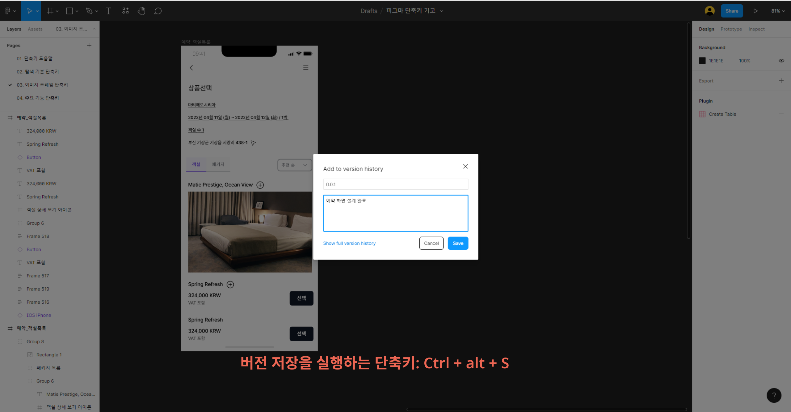
< >
오토 레이아웃을 적용하고 싶을 때
💡 단축키: Shift + A
레이아웃이 자동으로 조정되는 오토 레이아웃(Auto Layout) 기능은 Shift + A 단축키로 빠르게 실행할 수 있습니다. 이 기능을 활용하면 버튼 안에 위치한 텍스트 길이에 따라서 자동으로 버튼의 길이가 함께 조정되게 하거나, 버튼 크기가 달라져도 항상 원하는 위치에 있도록 설정할 수 있는데요.
예를 들어 상단 GNB(Global Navigation Bar)* 메뉴를 설계하거나, 특정 버튼 또는 콘텐츠 영역을 설계할 때에 오토 레이아웃 기능을 적절히 사용하면 프레임 또는 개체 크기를 조정하면 자동으로 사이즈에 맞게 줄어들게 만들어줍니다.
- 사이트 전체에 동일하게 적용되는 최상위에 위치하는 메인 메뉴, 공통 메뉴 등 공통 내비게이션을 의미
PC, 태블릿, 모바일까지 레이아웃 조정이 필요한 반응형 화면*을 설계할 때에 해당 기능을 통해 시간을 단축할 수 있으니 단축키로 꼭 익혀두시기를 바랍니다.
- 다양한 디바이스와 다양한 크기의 화면에서 일관되게 잘 작동하는 웹페이지를 말함
오토 레이아웃을 실행하는 단축키 'Shift + A' ©이새봄
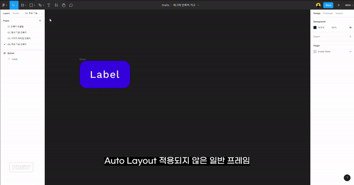
< >
단축키로 기획 업무의 생산성을 끌어올리세요
지금까지 피그마 기본 탐색 단축키부터 피그마로 기획을 할 때 가장 많이 활용하는 주요 기능들을 빠르게 실행하는 단축키까지 예시 이미지와 함께 소개해드렸습니다.
단축키는 작업 시간을 절약할 수 있는 대표적인 방법인데요. 안 쓰면 계속해서 까먹고 찾기를 반복하지만, 익숙해지면 마우스를 거의 사용하지 않고도 키보드로만 빠르게 소통하고 작업할 수 있습니다. 처음 피그마를 접한 분들이라면 기능을 접할 때부터 단축키를 함께 기억하며 습득하시는 것을 추천드립니다.
이번 기회로 단축키를 활용해 직접 따라해 보며 기능을 익히고, 빨라진 속도로 업무의 효율성을 극대화시켜보면 어떨까요? 이번 아티클을 언제든지 꺼내 볼 수 있는 피그마 단축키 모음집으로 활용하셨으면 좋겠습니다.
👀 바쁘다면 이거라도!
본문에 소개된 단축키를 한번에 모아서 정리해 드릴게요.
- 캔버스 화면 확대:
Ctrl + 마우스 휠 ↑ 또는 Ctrl + '+'
- 캔버스 화면 축소:
Ctrl + 마우스 휠 ↓ 또는 Ctrl + '-'
- 캔버스 화면 내 자유로운 이동:
Space bar + 마우스 드래그
- 작업 중인 모든 프레임을 한눈에 보기:
Shift + 1
- 특정 개체 또는 영역만 크게 보기:
Shift + 2
- 빠르게 메뉴나 플러그인 찾기:
Ctrl + /
- 레이어를 앞으로 가져오기:
Ctrl + ], Ctrl + Shift + ]
- 레이어를 뒤로 보내기:
Ctrl + [, Ctrl + Shift + [
- 도형 안에 여러 이미지를 한 번에 넣기:
Ctrl + Shift + K
- 원하는 부분 이미지만 빠르게 편집하기:
Alt + 마우스 더블 클릭
- PNG 포맷으로 이미지 바로 복사하기:
Ctrl + Shift + C
- 원본 비율대로 개체를 리사이징하기:
K
- 컴포넌트 생성하기:
Ctrl + Alt + K
- 인스턴스를 분리하여 독립적으로 만들기:
Ctrl + Alt + B
- 버전 히스토리를 새로 생성하기:
Ctrl + Alt + S
- 오토 레이아웃 적용하기:
Shift + A
인스타그램 이미지 템플릿
2026. 03. 24 · 작성자-ownuun
💡 10분 안에 이런 내용을 알려드려요!
- 피그마의 15개 템플릿을 내 맘대로 빠르고 손쉽게 활용하는 방법
- 클릭 한 번으로 목업을 만들거나 누끼를 따는 꿀팁
- 초심자도 파워포인트 기능만으로 고퀄리티 디자인 만드는 방법본문을 읽으시면 인스타그램 이미지 템플릿 모음을 다운로드 하실 수 있습니다.
디자인에 자신 없다면, 피그마가 답이 되어줄 거예요

< >
저자 이유진
픽글 대표·디자인 > 프로필 더 보기
우리 팀은 디자이너가 없어서, 예쁜 이미지 만들기가 너무 어려워.
매번 외주를 맡길 수도 없고… 간단한 건 혼자 해결하고 싶은데 어떻게 해야 할지 모르겠어.
최근 들어 디자이너가 아닌 직군에서도 카드 뉴스, 홍보물 등의 디자인을 해야 하는 경우가 많아지고 있습니다. 특히 규모가 작은 조직에서는 디자인이 필수적인 업무 스킬로 여겨지고 있는데요. 이에 대해 고충을 가지고 있는 주변 동료들의 이야기들을 종종 듣곤 합니다.
저 또한 디자인 툴에 대해 하나도 모르던 시절을 떠올려 보면 참 막막했던 것 같습니다. 하지만 최근에는 이런 막막함을 해결해줄 무료 디자인 툴이 많이 생겼습니다.
저는 그중에서도 피그마라는 프로그램을 활용해서 카드 뉴스를 만들고 있는데요. 그 이유는 업무 생산성을 높여주는 극강의 3가지 장점 때문입니다.
1) 1초 만에 누끼 따기©이유진
2) 텍스트 편집 시 간격 자동 조절©이유진
3) 고퀄리티 디자인 소스©이유진
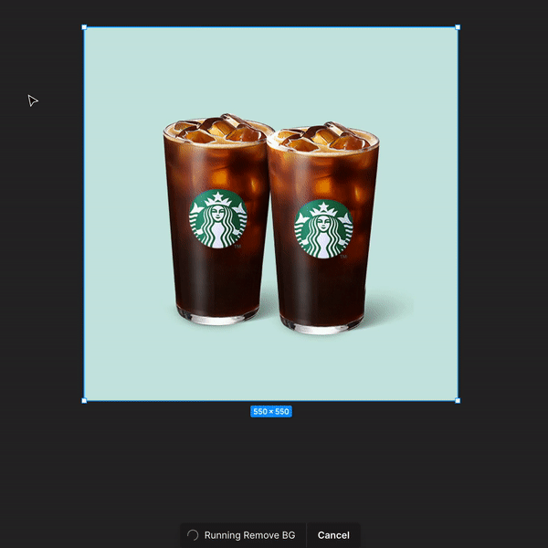
< >
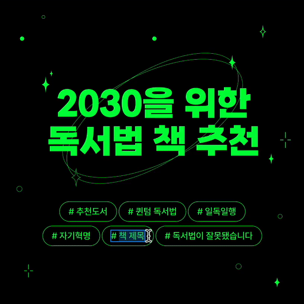
< >
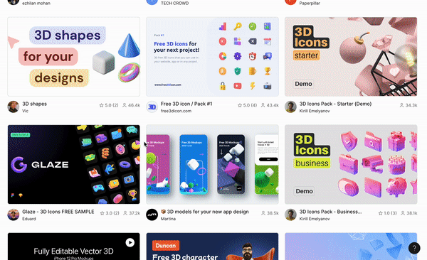
< >
제가 피그마의 유용한 기능을 활용해서 카드 뉴스를 만드는 것처럼, 이번 아티클에서는 디자이너가 아닌 분들도 피그마를 활용해 인스타그램 이미지를 만들 수 있는 방법을 알려드리고자 합니다.
피그마를 오늘 처음 들어보셨더라도 괜찮습니다! 드래그로 위치 조정하기, 복사·붙여넣기 등 기본적인 기능은 파워포인트나 미리캔버스, 망고보드 등의 툴과 똑같거든요. 겁먹지 않고 따라오셔도 좋습니다. 15개의 템플릿과 변형 템플릿, 다양한 디자인 소스를 바로 활용하실 수 있도록 찬찬히 설명드릴게요.
템플릿 소개 및 세팅하기
이번 아티클에서는 1) 텍스트 강조형, 2) 이미지 강조형, 3) 아이콘·누끼 활용형 이렇게 3가지 주제로 각각 5개의 템플릿을 소개하려고 합니다.
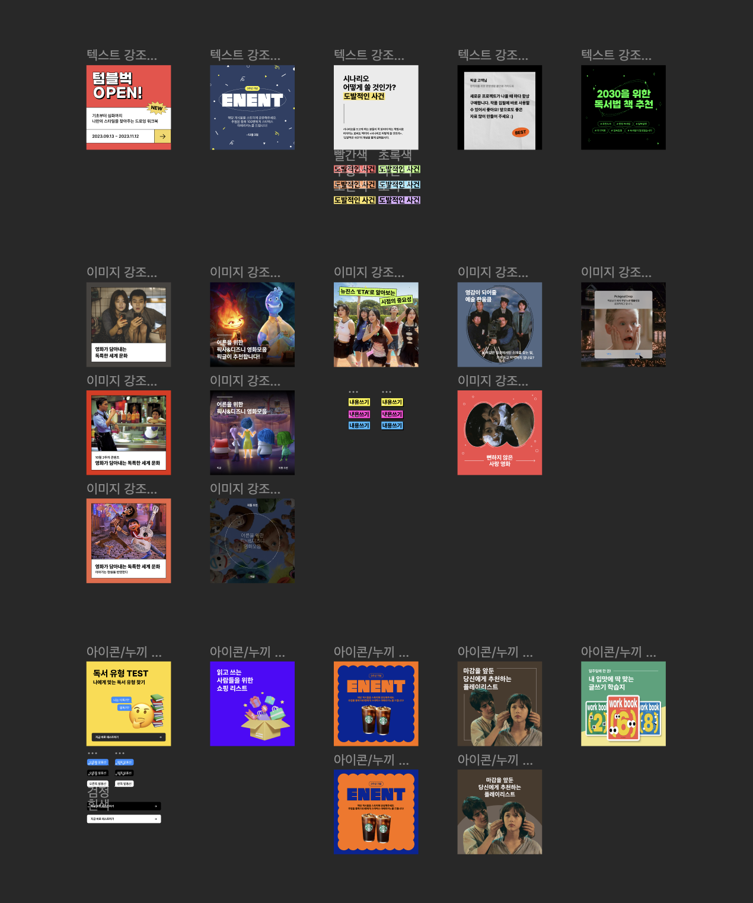
< >
우선 이 템플릿들을 활용하기 위해서는 템플릿에 사용된 폰트가 설치돼 있어야 하는데요. 소개해 드리는 눈누 사이트에서 무료로 다운로드하실 수 있습니다.
디자이너가 추천하는 제목용 폰트와 본문용 폰트
1) 가독성이 뛰어난, 제목용 폰트
우선 제목용 폰트는 작은 화면 안에서 한눈에 콘텐츠를 파악할 수 있도록 가독성이 좋고 볼드한 것이 좋습니다. 두 가지 사항을 모두 충족시키는 3가지 폰트를 추천합니다.
G마켓 산스와 에스코어 드림의 경우 다양한 두께로 사용하실 수 있는데요. 메인 제목은 가장 두꺼운 폰트를 사용하는 것을 권장 드립니다.
G마켓 산스 강원교육튼튼체 에스코어 드림
< >
< >
< >
2) 디테일 요소가 있는, 제목용 폰트
조금 더 장식이 있는 폰트를 사용하고 싶다면 '강원 교육 튼튼체'와 '창원단감아삭체'를 추천합니다. 해당 폰트로는 문장형 제목을 쓰기보다는 EVENT, SALE, OPEN, RECRUIT 등의 단어에 포인트를 줄 때 사용하는 것이 좋습니다.
제목을 쓸 때는 브랜드 콘텐츠의 통일성 유지를 위해서 가독성 높은 제목용 폰트를 메인으로 하고, 장식이 있는 폰트 하나 정도를 서브로 사용하는 것을 추천드립니다. 소개해드린 폰트 중 템플릿에는 '강원교육튼튼체'와 '창원단감아삭체'가 사용되었으니, 꼭 다운로드하신 후에 템플릿을 사용해주세요.
평창평화체 창원단감아삭체
< >
< >
3) 본문용 폰트
본문용 폰트도 마찬가지로 가독성이 중요한데요. 모바일 디자인에서는 기본적으로 고딕을 사용하기 때문에 SNS 이미지 제작에서도 이를 고려하는 것이 좋습니다.
깔끔한 본문용 폰트로는 3가지를 추천합니다. 참고로 템플릿의 본문 폰트는 모두 프리텐다드가 사용되었습니다. 아래 10개의 템플릿은 프리텐다드 하나만 다운로드해도 그대로 사용할 수 있으니, 프리텐다드만은 꼭 다운로드하시고 템플릿을 사용해주세요!
프리텐다드본고딕(노토산스)
< >
< >
이제 템플릿을 불러와 볼까요? 파일을 사용하기 위해서는 우선 피그마에 가입하고, 이 링크(피그마 카드 뉴스 템플릿 받기)에 접속해 주세요. 링크 접속은 웹에서 가능하고요, 붙여넣기 및 이후 과정은 웹 또는 프로그램에서 하시면 됩니다.
링크를 열면 템플릿이 보이는데요. 다음과 같이 **화면 전체를 드래그 하고, 복사(ctrl+c)**해주세요.
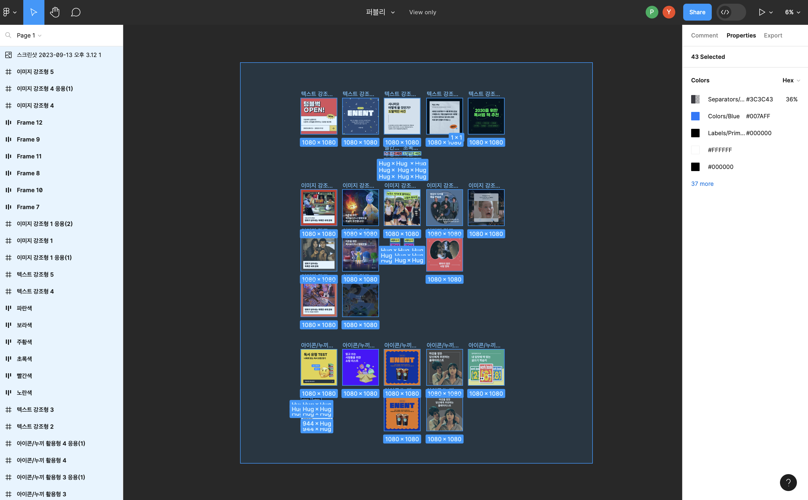
< >
피그마를 켜고 왼쪽 탭에서 Drafts가 선택되어 있는 것을 확인한 뒤, 오른쪽 상단의 파란색 버튼(+Design file)을 클릭합니다.
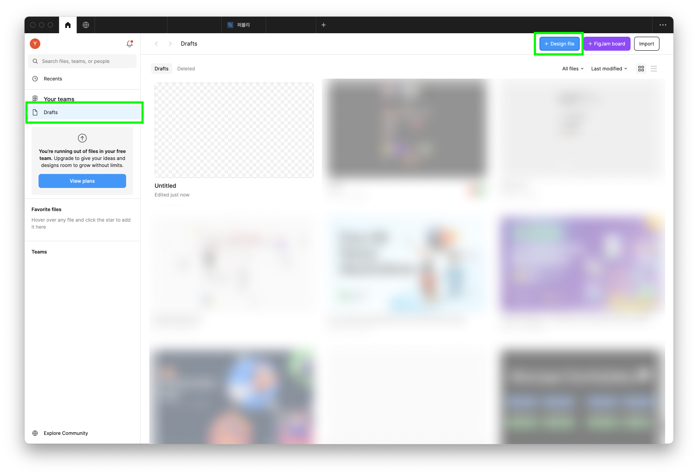
< >
그럼 이렇게 빈 화면이 나타나는데요. 가운데 빈 공간(회색 부분)을 한 번 클릭하고 붙여넣기(ctrl+v)를 해주시면 템플릿이 그대로 나타납니다.
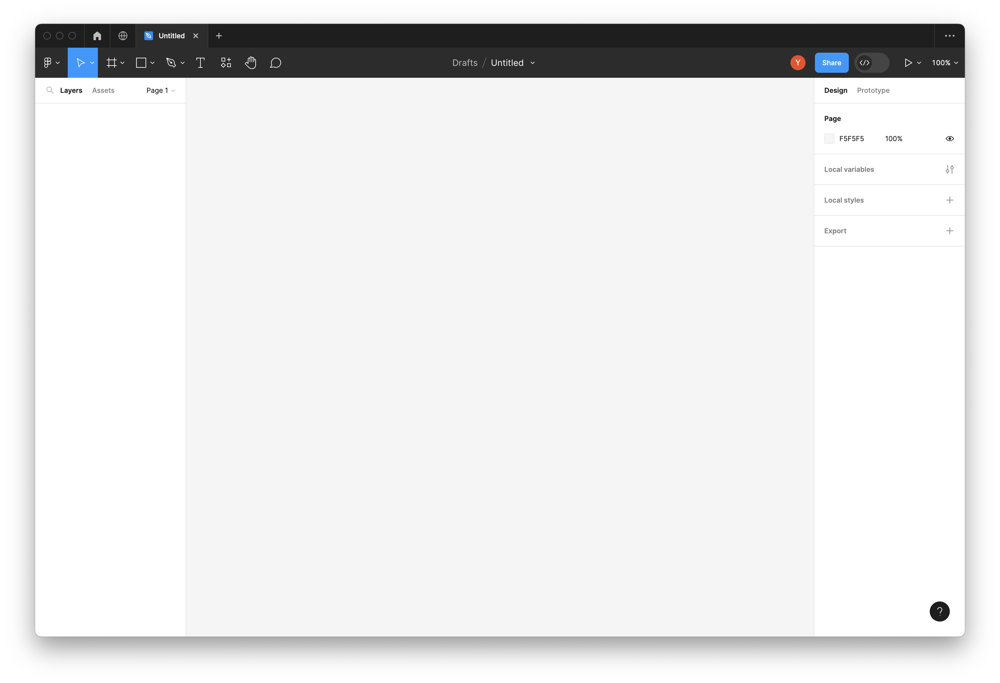
< >
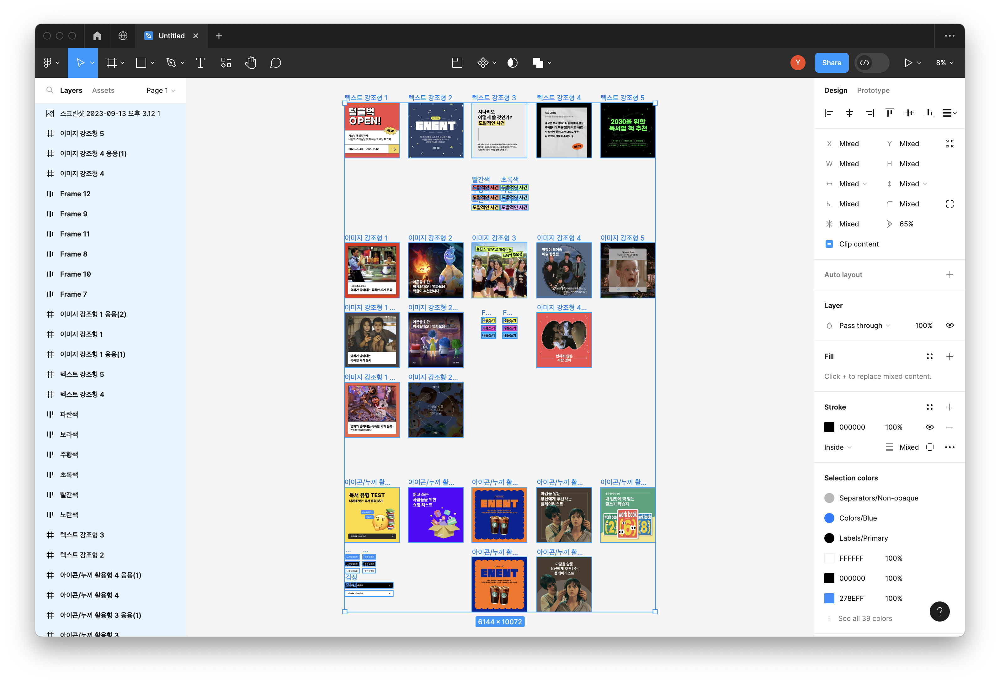
< >
이렇게 폰트 설치와 템플릿 불러오기가 끝났다면, 본격적으로 템플릿 활용 방법을 알아보도록 하겠습니다. 피그마를 켜두고 함께 따라 해보세요.
'텍스트 강조형' 템플릿 활용법
텍스트 강조형 템플릿은 상품을 런칭하거나 이벤트를 진행할 때 사용하기 좋습니다. 큼지막한 텍스트와 강렬한 컬러로 이목을 끌 수 있기 때문이죠. 마땅히 사용할 이미지가 없거나, 많은 글이 들어가야 하는 경우에도 아주 유용하게 사용할 수 있습니다.
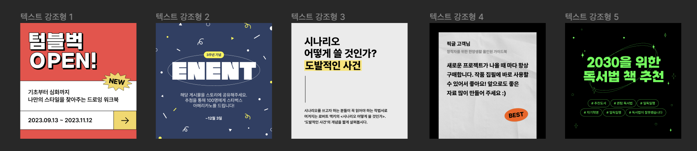
< >
1) 배경색 변경하기
'텍스트 강조형 1' 템플릿을 가져와볼게요. 이제부터 네모 위에 있는 글자를 제목('텍스트 강조형1'라고 적힌 텍스트)이라고 부르겠습니다.
템플릿을 클릭하면, 아래 그림과 같이 제목 글자와 테두리가 하늘색으로 표시되는데요. 이 자체가 한 장의 이미지가 됩니다. 제목은 더블 클릭하면 수정할 수 있는데, 제목이 곧 파일명이 되기 때문에 편의에 따라 제목을 설정하면 됩니다.
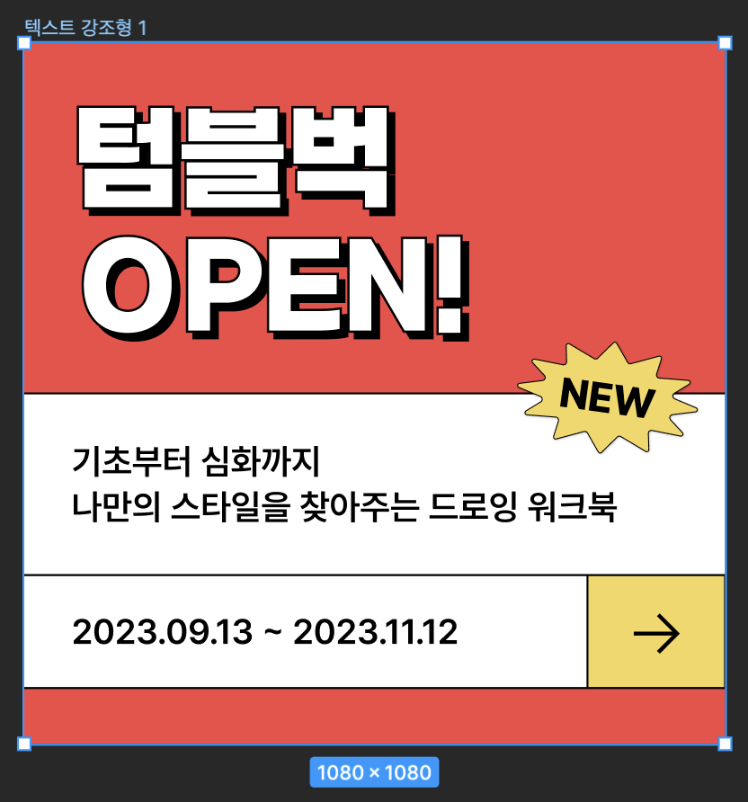
< >
배경색 변경은 아주 간단합니다. 제목을 클릭한 다음, 오른쪽 중간쯤에 있는 [Fill] 하단의 색깔이 있는 네모 박스(아래 이미지 1번)를 클릭합니다. 그럼 색깔 창이 뜨는데, 색깔 막대를 옮겨가며 원하는 색을 선택하면 됩니다. 색상 코드를 붙여넣기 하는 것도 가능합니다.
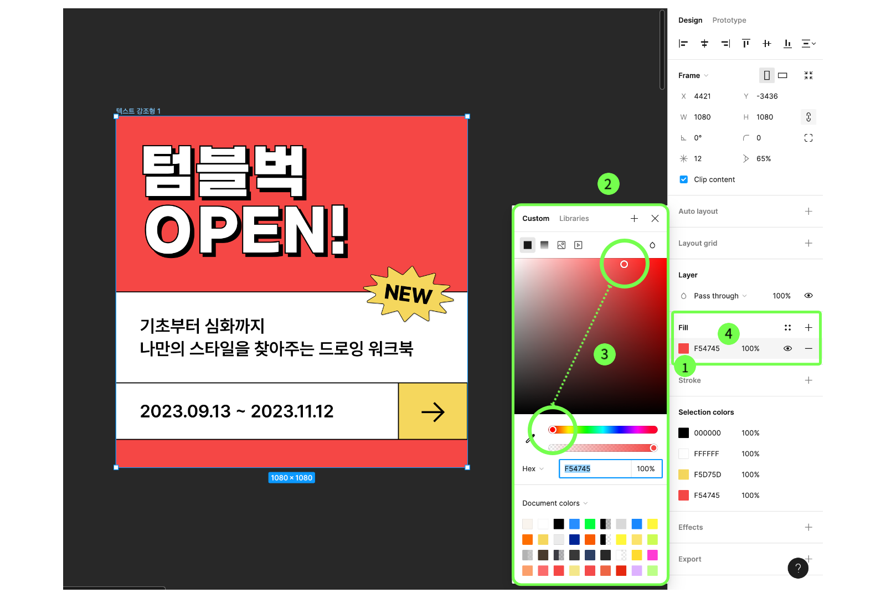
< >
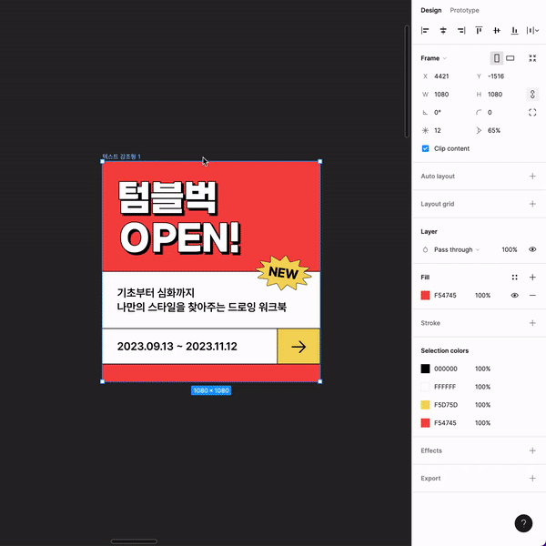
< >
2) 폰트 변경하기
글 내용을 변경하고 싶은 경우에는 파워포인트와 동일하게 텍스트를 더블 클릭하여 내용을 편집하면 됩니다. 폰트 종류, 정렬, 색상 등 좀 더 디테일한 설정을 하고 싶다면 글자를 선택하고, 오른쪽 영역의 [Text] 창을 활용하시면 됩니다.
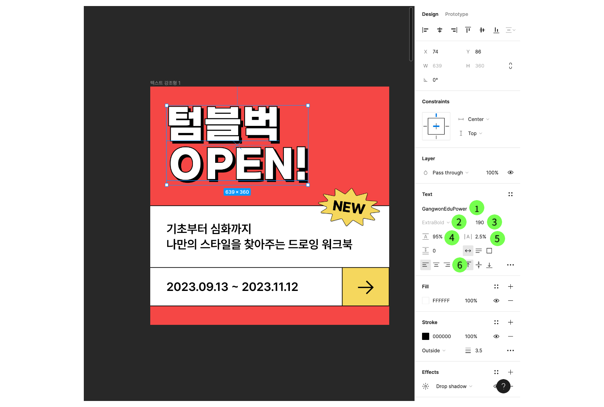
< >
[Text] 영역을 순서대로 설명하면 다음과 같습니다.
- 폰트 종류 변경
- 두께 변경(폰트 종류에 따라 활성화되지 않는 경우도 있습니다)
- 크기 변경
- 줄과 줄 사이 간격 변경
- 글자와 글자 사이 간격 변경
- 정렬 바꾸기
💡 작업이 쉬워지는 Tip!
4번과 5번의 경우, 앞에 있는 아이콘에 커서를 가져가면 좌우 화살표가 뜨는데요. 좌우로 드래그하면 눈으로 확인하면서 수정할 수 있습니다.©이유진
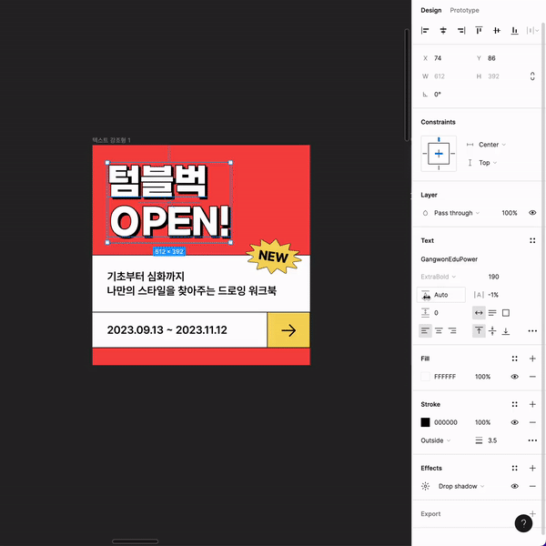
< >
조금 전 배경색을 바꿀 때 [Fill]을 사용한다고 설명드렸는데요. 텍스트 색상도 마찬가지 방법으로 변경할 수 있습니다. 원하는 단어만 드래그해서 변경하는 것도 가능합니다. 이렇게 [Fill]은 색깔을 바꾸는 데 사용됩니다. 템플릿에 포함되어 있는 도형들도 동일한 방법으로 색상을 변경해서 사용해 보세요.
3) 형광펜 효과 주기
형광펜으로 칠한 효과를 주기 위해 보통은 텍스트 레이어 밑에 색깔이 들어간 사각형을 배치합니다. 하지만 두 개의 오브젝트가 겹쳐 있어서 텍스트 길이에 따라 사각형의 크기를 다시 맞추는 게 무척 번거롭습니다. 하지만 아래 GIF처럼 '텍스트 강조형 3' 템플릿에서는 글을 쓰면 색이 자동으로 깔리도록 설정되어 있습니다.
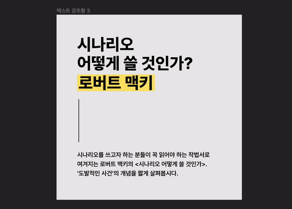
< >
이 템플릿을 사용할 때에는 두 가지 사항을 지켜주셔야 하는데요.
- 첫째, 엔터를 쳐서 줄바꿈 하지 않고, 한 줄씩 따로 써야 합니다. 각각의 줄별로 텍스트 박스가 3개로 나누어져 있습니다. 만약 두 번째 줄에 형광펜 효과를 적용하고 싶다면 텍스트 박스의 위치를 옮겨서 사용해 주세요.
- 둘째, 형광펜 글자를 선택하고, 연속으로 4번 클릭하면 텍스트 편집이 활성화됩니다.
템플릿에 다양한 형광펜 색을 준비해두었으니 필요에 따라 활용하세요!
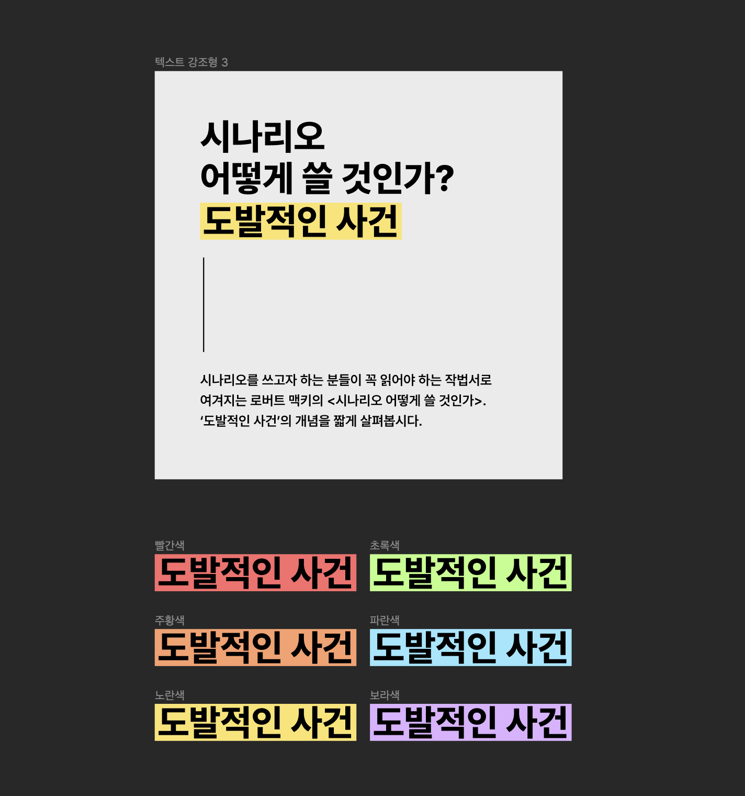
< >
4) 태그 에셋 활용하기
이 경우에도 마찬가지로 태그를 선택하고, 연속으로 4번 클릭해서 글을 편집해 주세요. 태그의 길이가 텍스트의 길이에 맞게 늘어나고, 태그 간의 간격 또한 동일하게 유지됩니다. 너무나도 편한 기능이죠.
태그 중 하나를 삭제하고 싶다면, 텍스트를 더블 클릭하고 백스페이스를 누르시면 됩니다.
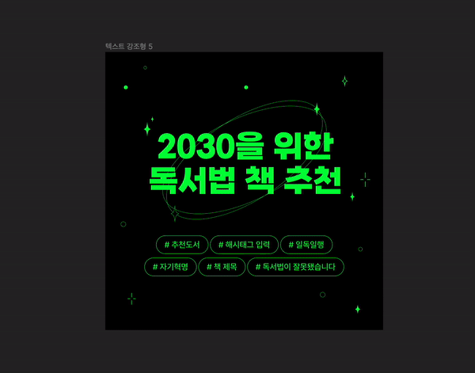
< >
이미지 강조형 템플릿 활용법
이미지 강조형 템플릿은 상품이나 콘텐츠의 이미지를 크게 보여주고 싶을 때 사용하기 좋습니다.
제가 운영하는 서비스인 픽글(@pick_geul)에서는 이렇게 작품에 대한 설명이나 공간을 소개할 때 이미지 강조형 템플릿을 많이 사용하는데요. 모두가 알 만한 영화의 스틸컷이나 공간 사진을 사용하면 그냥 지나치지 않고, 한 번 더 관심을 가지고 들여다볼 수 있게 하는 효과가 있습니다.
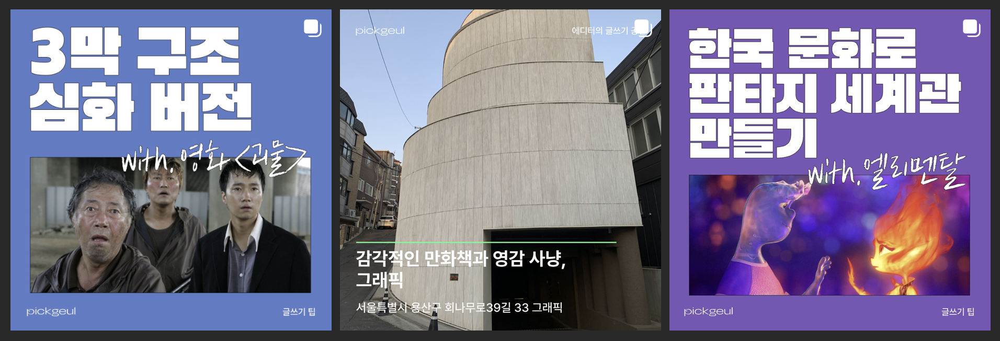
< >
1) 이미지 넣기
먼저 원하는 이미지를 선택하고 복사(ctrl+c) 합니다. 이미지를 넣고 싶은 곳에 ctrl을 누른 상태에서 우클릭합니다. 창이 뜨면 'image'를 클릭합니다. ctrl+v를 누르면 이미지가 바뀝니다.
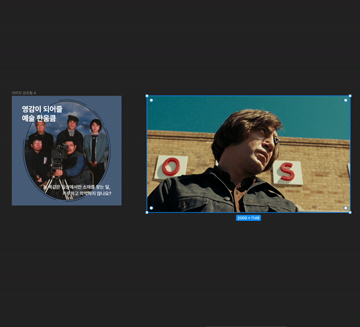
< >
2) 이미지 위에 제목 쓰기
밝은 이미지 위에 흰색 글자를 쓰면 잘 안 보일 때가 있죠. 이때는 그라데이션을 넣거나 검은색 네모에 투명도를 넣어 이미지 위에 올리고 제목을 써 주면 좋습니다. 템플릿에 이미 적용되어 있으니, 위에 나온 방법에 따라 이미지와 텍스트를 바꿔주기만 하면 됩니다.
참고로 SNS 이미지에서 제목은 3줄을 넘기지 않는 게 좋습니다. 기본적으로 폰트 사이즈가 크게 들어가기 때문이기도 하고, 한 번에 콘텐츠의 내용을 파악할 수 있어야 하기 때문입니다.
따라서 템플릿에 있는 줄글 수를 지켜서 글을 입력하시길 추천드립니다. 텍스트가 아래쪽에 배치된 템플릿의 경우에는 줄을 추가해도 여백이 그대로 유지되도록 설정해두었습니다.
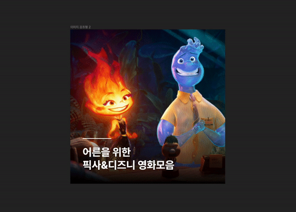
< >
💡 작업이 쉬워지는 Tip!
만약 폰트가 이미지 밑에 깔렸다면 이미지를 선택하고 '[' 키를 눌러주세요. 그러면 이미지가 뒤로 이동합니다. 반대로 선택한 물체를 위쪽으로 옮기려면 ']' 키를 누르면 되겠죠?
3) 이미지가 들어가는 카드 뉴스의 배경색 설정하기
카드 뉴스의 배경을 어떤 색으로 해야 좋을지 난감하신 적 있으시죠? 그럴 때는 이미지에 있는 색을 추출해서 쓰기만 해도 완성도가 올라갑니다.
일단 제목을 선택해 주세요. 그리고 'I'를 누르면 스포이드 기능이 활성화됩니다. 화면의 오른쪽 귀퉁이에 나타나는 동그라미 속의 색을 보면서 원하는 색이 나올 때 클릭해 주시면 배경색으로 바로 적용됩니다.
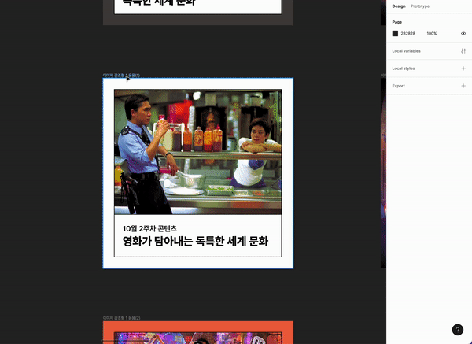
< >
3D 디자인, 누끼, 목업 템플릿 활용법
마지막으로 3D 디자인 소스와 누끼, 목업을 사용한 템플릿을 소개합니다. 그동안 디자인 소스를 찾는 게 귀찮았던 분들, 누끼와 목업이 어려웠던 분들이라면 특히 주목해 주세요!
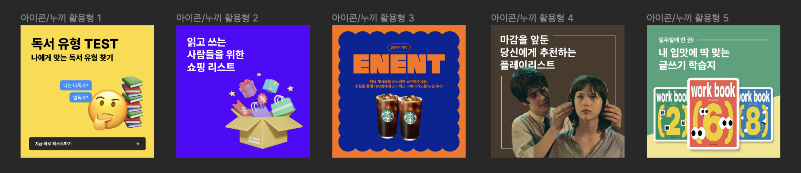
< >
1) 3D 디자인 셋을 활용한 디자인
번거롭게 여러 사이트를 돌아다니며 디자인 소스 찾기는 더 이상 그만! 피그마 커뮤니티에서는 퀄리티 높은 디자인을 무료로 제공하고 있는데요. 최근 디자인 트렌드인 3D 에셋을 함께 찾아보도록 하겠습니다.
① 좌측 상단의 지구본 아이콘을 클릭합니다.©이유진
② 검색창에 '3d icon'을 입력합니다.©이유진
③ 왼쪽의 [files + templates]을 클릭합니다.©이유진
④ 우측 상단의 파란색 버튼(Open in Figma)을 클릭합니다.©이유진
⑤ 왼쪽의 Pages에서 디자인 셋이 있는 곳을 찾아주세요. 파일마다 위치가 다르니, 일러스트가 바로 나오지 않아도 당황하지 마시고 Pages 아래의 버튼들을 하나씩 눌러보세요.©이유진
⑥ 이렇게 찾은 디자인 소스는 복사, 붙여넣기로 간단히 적용할 수 있습니다.
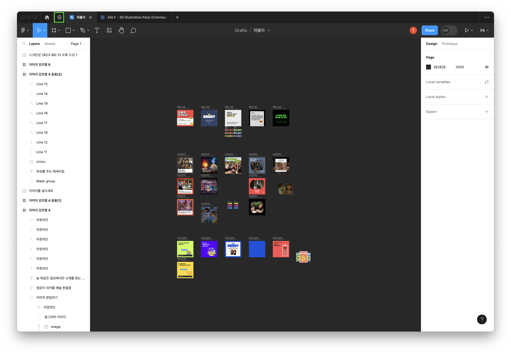
< >
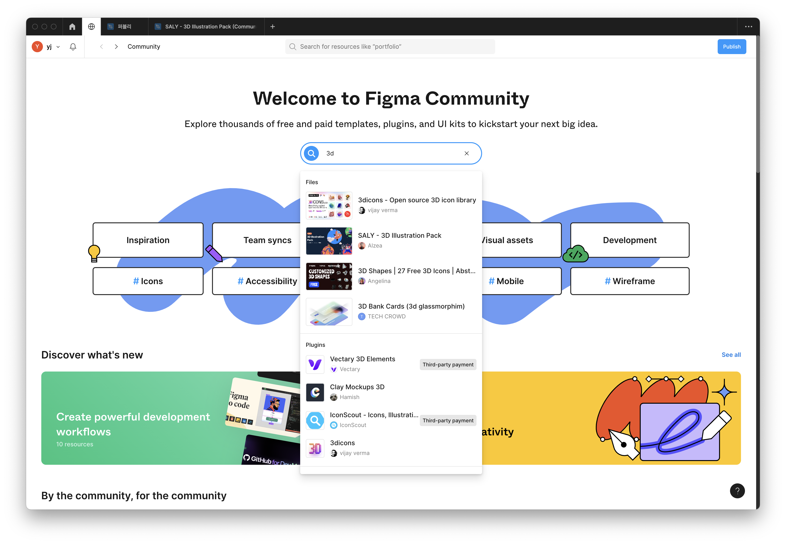
< >
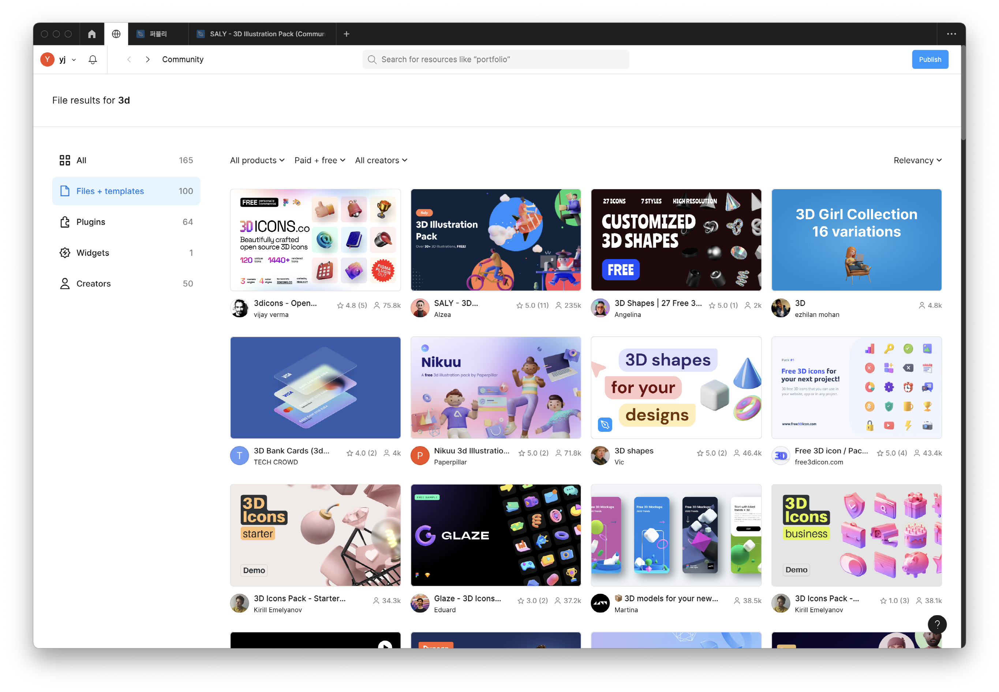
< >
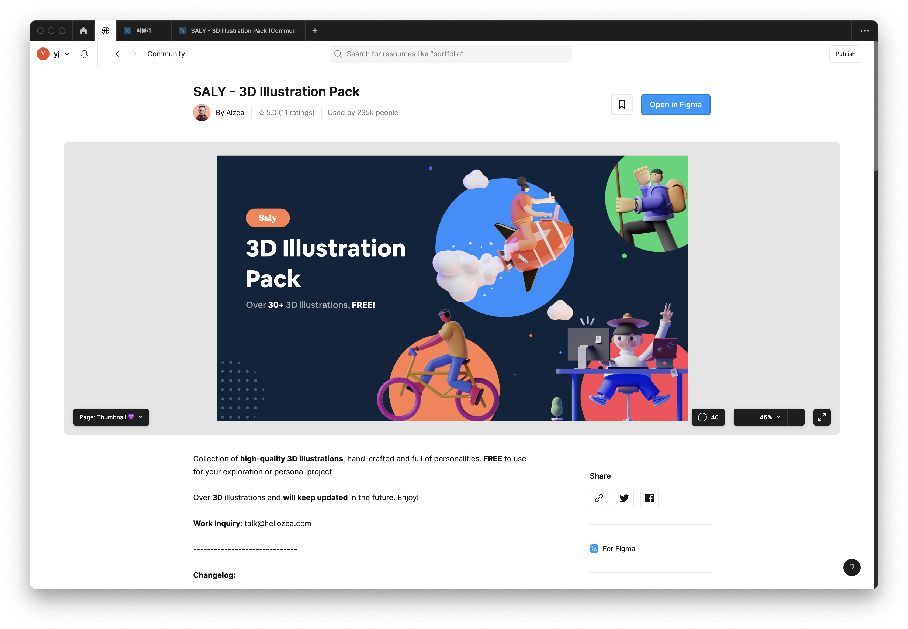
< >
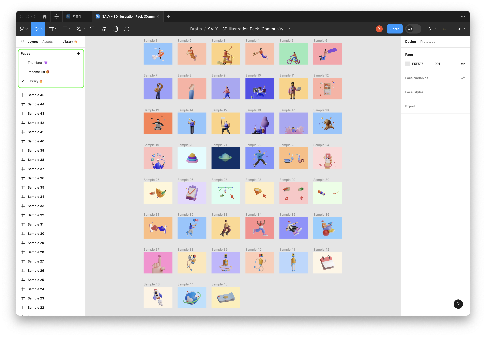
< >
여러분들의 소중한 시간을 위해 디자인 셋 노션 모음집을 준비해 봤습니다. 페이지를 클릭해서 스크롤을 조금만 내리면 전체 아이콘을 볼 수 있으니, 둘러보시고 필요한 아트워크를 골라서 사용해 보세요.
📝자료 이용 방법📝
👉 디자인 소스 모음집 👈
- [파일]-[사본 만들기]를 클릭하여 사본을 생성하시거나 내용을 복사하여 개인 문서에 붙여 넣어 사용해 주세요.
- 수정 권한은 공유해 드리지 않습니다. 임의로 수정하실 경우 다른 분들이 도움을 받을 수 없기 때문에, '수정 액세스 요청' 하셔도 공유할 수 없는 점 양해 부탁드립니다.©이유진
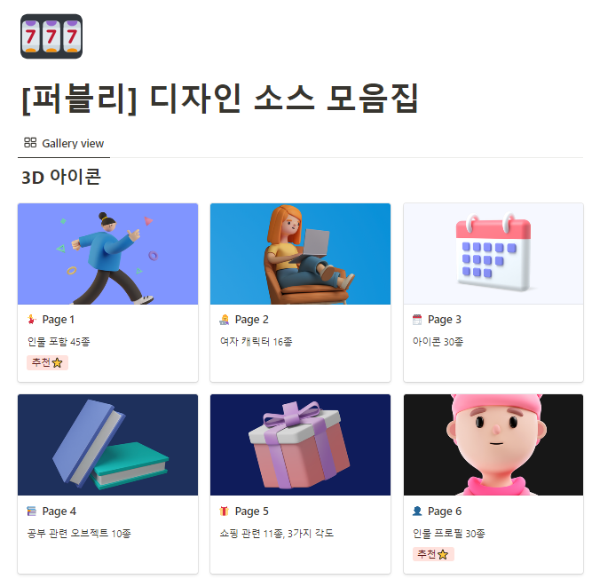
< >
2) 이모지를 활용한 디자인
3D 디자인을 찾는 것도 번거롭다면 이모지를 활용하는 것도 좋은 방법입니다. 이때, 애플의 기본 이모지를 사용하는 것을 추천드립니다. 애플 이모지는 다른 이모지들에 비해 그림자 표현이 잘 되어있어 3D 느낌을 내기에 좋습니다.
ios 시스템을 사용하지 않는 경우에는 이모지를 복사해서 사용할 수 있는 사이트를 이용하시면 됩니다.
① https://emojigraph.org/apple/에서 원하는 이모지를 선택합니다.©이유진
② Copy 버튼을 눌러 이모지를 복사합니다. ©이유진
③ 피그마로 돌아와 ctrl+v를 눌러 붙여넣습니다.

< >
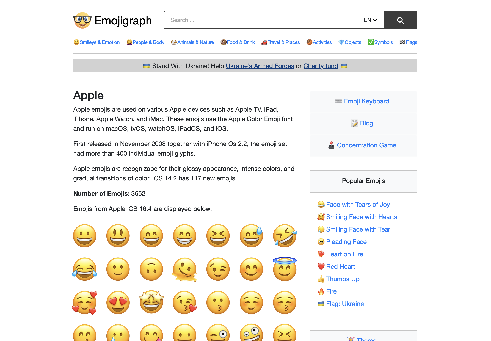
< >
💡 작업이 쉬워지는 Tip!
아이폰 메시지에서 미모지를 만들어서 사용하는 것도 좋은 방법입니다.
3) 누끼와 목업을 활용한 디자인
SNS 디자인을 하다 보면 누끼나 목업*을 활용해야 하는 경우가 꼭 있는데요. 피그마 내부에서 사용할 수 있는 프로그램(플러그인)을 통해 이 작업들을 정말 간편하게 해낼 수 있습니다. 설치 방법부터 사용 방법까지 살펴보도록 하겠습니다.
- 실제품을 만들어 보기 전, 디자인 검토를 위해 실물과 비슷하게 시제품을 제작하는 작업
1초 만에 누끼 따기: remove bg
[설치 방법]
① 우선 플러그인을 사용하기 위해 'T'옆의 아이콘을 누르고, Plugins 탭을 클릭합니다.©이유진
② 'remove bg'를 검색해서 프로그램을 클릭하고, 'Set API Key' 버튼을 선택하면 다음과 같은 창이 나타납니다.©이유진
③ remove.bg 웹 사이트에서 계정을 만들어 주세요.
④ API Key를 사용하기 위해 이 링크에서 파란색 버튼(+New API Key)을 클릭합니다.©이유진
⑤ API 텍스트를 복사하여 피그마로 돌아와 빈칸(1번)에 붙여넣기하고, SAVE(2번)를 눌러줍니다.©이유진
[사용 방법]
- ① 누끼를 따고 싶은 사진을 선택합니다. 반드시 이미지가 선택된 상태로 다음 단계를 진행해야 합니다.
- ② 플러그인 아이콘을 눌러서 'remove bg'를 검색해 주세요.
- ③ remove bg를 클릭하고 run을 눌러주세요.
- ④ 조금만 기다리면 누끼 완성!©이유진
한 계정당 50개의 누끼를 무료로 만들 수 있으며, 이후에는 구독제 또는 단건 구매를 통해 사용하실 수 있습니다.
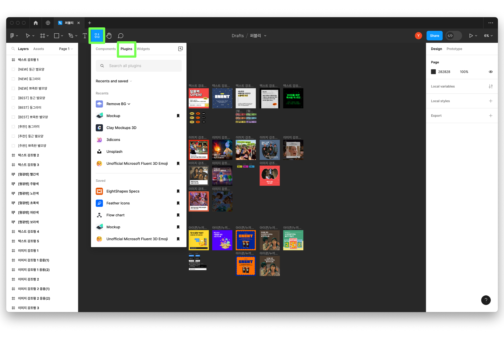
< >
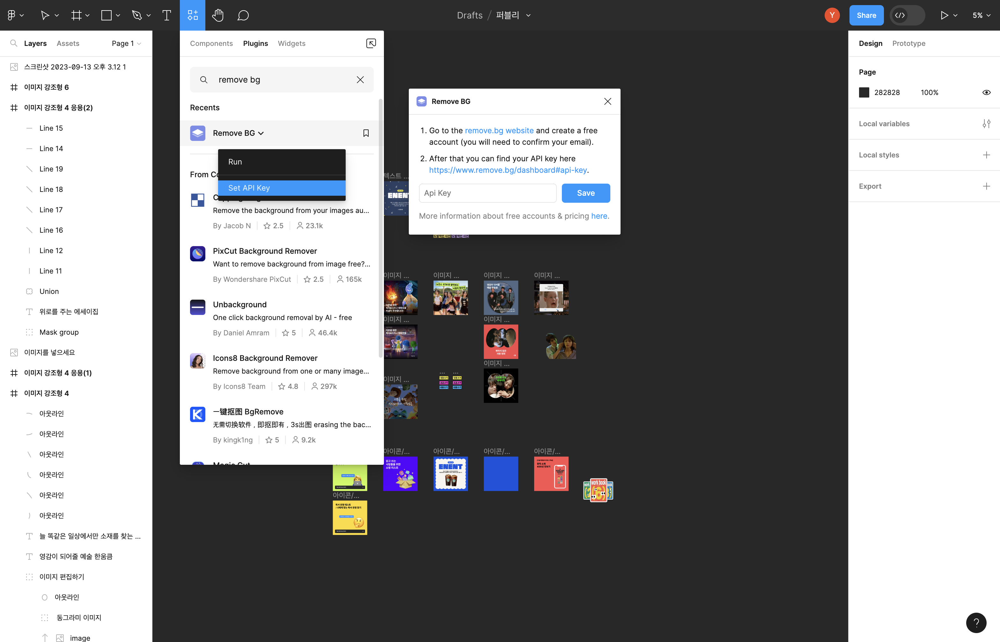
< >
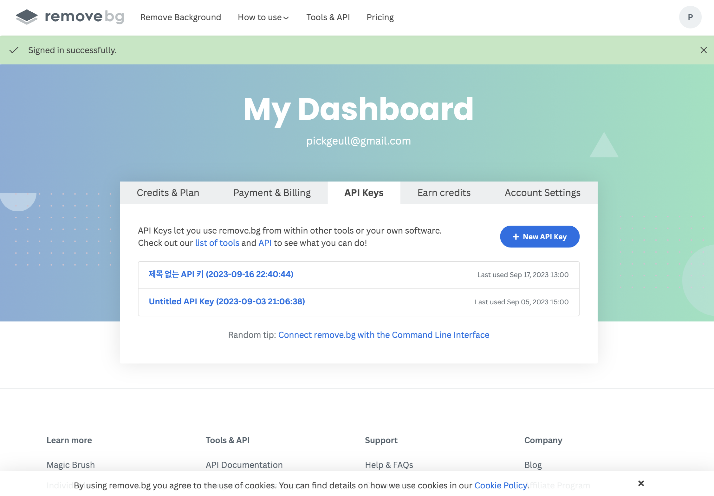
< >
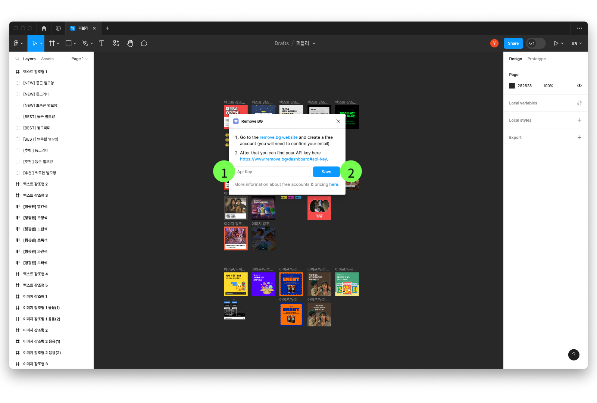
< >
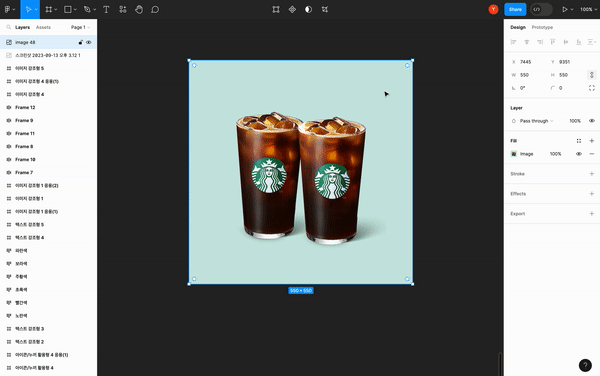
< >
1초 만에 목업 만들기
다음으로 소개해드릴 두 가지 목업 플러그인은 별도의 설치없이 플러그인 아이콘을 누르고, 플러그인 이름을 검색한 다음, 클릭하기만 하면 바로 실행됩니다.
다양한 각도의 기기 목업: Clay Mockups 3D
Clay Mockups 3D 플러그인은 흰색의 깔끔한 목업을 만들 수 있습니다. 기기의 각도를 원하는 대로 바꿀 수 있는 것이 가장 큰 장점입니다.
[사용 방법]
① 플러그인 아이콘을 누르고 Clay Mockups 3D를 검색해 주세요.
② 'Create Empty Frame'을 누르면 숫자가 적힌 빈 화면이 나옵니다.©이유진
③ 원하는 이미지를 화면 안에 넣고 크기를 조절합니다.©이유진
④ 오른쪽 패널에서 목업할 기기의 종류와 색깔, 각도 등을 원하는 대로 변경할 수 있습니다.©이유진
⑤ 'Save as Image'를 누르면 목업이 화면에 나타납니다.
책, 티셔츠, 명함 등 다양한 종류의 목업: Mockup
기기부터 명함, 포스터 등 다양한 종류의 목업이 준비되어 있습니다. 조금 더 실제에 가까운 목업을 원한다면 Mockup 플러그인을 추천드립니다.
[사용 방법]
① 이제 플러그 실행 방법은 아시겠죠? 플러그인 아이콘을 누르고 'Mockup'을 검색해 주세요.
② Find 탭에 들어가서 원하는 목업을 골라주세요. 무료로 사용할 수 있는 목업만 보고 싶을 경우에는 Find에서 'Free only'를 체크합니다.©이유진
③ 원하는 목업을 선택했다면 목업에 적용하고 싶은 이미지를 빈 화면에 불러와 주세요.
④ '+' 버튼을 누르고, 목업에 적용하고 싶은 이미지 클릭해 주세요.©이유진
⑤ 사이즈를 확인하고 'continue' 버튼을 눌러줍니다.©이유진
⑥ 'Paste in Canvas'를 클릭하면 목업이 적용되어 화면에 나타납니다.©이유진
< >
< >
< >
< >
< >
< >
< >
이미지 저장하기
이제 이미지를 저장하는 방법을 알아보겠습니다.
① 제목을 클릭해 주세요.
② 오른쪽 창 가장 아래의 'Export'를 눌러줍니다.©이유진
③ PNG 혹은 JPG 중 원하는 파일 형태를 선택해주세요.
④ 'Export' 버튼을 누르면 완료!©이유진
< >
< >
한 번에 여러 장의 이미지를 저장할 수도 있는데요. shift 키를 누른 채로 제목을 여러 개 선택한 뒤, 위의 절차를 똑같이 진행해 주시면 됩니다.
가끔 제목을 눌러 이미지를 추출했는데, 도형이나 텍스트가 누락되는 경우가 있는데요. 이때 해결할 수 있는 방법을 함께 설명해 드릴게요.
① 제목 바깥의 오른쪽 하단에서 왼쪽 상단으로 드래그합니다. 모든 요소들이 선택됐다면 OK!
한 가지 주의하실 점은 꼭 제목 바깥에서부터 드래그해야 한다는 거예요. 절대 제목까지 드래그하면 안 됩니다. 제목까지 드래그하면 제목 자체를 선택했을 때와 똑같은 화면이 나타나는데요(제목과 테두리가 파란색으로 잡힘). 이렇게 되면 ②번으로 넘어갔을 때 이미지 전체가 없어지는 사태가 발생합니다.©이유진
② ctrl+x(잘라내기)를 누릅니다.
③ 제목을 눌러주고 ctrl+v하면 모든 요소가 이미지 안으로 들어오게 됩니다.
< >
플러그인으로 만든 누끼 혹은 목업만 저장하고 싶은 경우에는 만들어진 이미지를 클릭한 뒤, 이미지 추출 절차를 똑같이 진행하면 됩니다.
디자인 시간을 줄여줄, 피그마 플러그인 활용하기
앞에서 소개 드렸듯이, 플러그인은 피그마만의 치트키인데요. 인스타그램 디자인에서 사용할 수 있는 다양한 플러그인을 추가적으로 소개합니다.
기본적인 사용 방법은 동일합니다. 플러그인 아이콘을 클릭하고, 필요한 플러그인의 이름을 검색해서 실행시켜주시면 됩니다.
디자인 소스를 손쉽게 가져올 수 있는 플러그인 3가지
플러그인의 가장 큰 장점은 페이지 이탈 없이도 다양한 기능을 사용할 수 있다는 것인데요. 디자인 소스도 플러그인을 통해 바로 사용할 수 있습니다.
1) Handz 3D illustraion
피부색과 옷을 바꾸어 다양하게 조합할 수 있습니다. 기본적으로는 팔 부분이 길게 나와있는데요. 손 부분을 확대해서 사용하면 포인트 요소로도 사용할 수 있습니다.
< >
2) Unofficial Microsoft Fluent 3D Emoji
135가지의 3D 이모지를 사용할 수 있는 플러그인입니다. 하나의 이모지를 단독으로 사용하는 것도 좋지만 두 가지 요소를 함께 사용하면 화면이 더 풍부해 보입니다. 메인 이모지와 서브 이모지를 함께 배치해서 사용해보세요.
< >
3) 3D icons
3D icons는 다양한 3D 디자인을 사진과 같이 색상과 각도를 바꿔서 사용할 수 있는 플러그인입니다. 왼쪽의 네 가지 동그라미에서 색상을 바꾸고, 오른쪽의 네모 아이콘을 눌러 각도를 조정할 수 있습니다.
< >
유료 이미지 퀄리티 뺨치는 무료 이미지 플러그인: unsplash
unsplash는 유명한 무료 이미지 사이트인데요. 플러그인을 통해 해당 사이트를 열지 않고도 원하는 이미지를 얻을 수 있습니다. 키워드를 검색한 후 원하는 이미지를 클릭하기만 하면 바로 이미지가 나타납니다. 영어로 검색하면 더 많은 이미지를 보실 수 있습니다.
< >
저화질 이미지를 고화질로 바꿔주는 플러그인: Ai image upscaler
이 플러그인 통해서 두 배까지 무료로 적용할 수 있는데요. 두 배만으로도 충분하니, 화질이 살짝 아쉬운 이미지가 있다면 꼭 사용해보세요. 플러그인을 실행시킨 뒤 원하는 이미지를 클릭하고 Apply를 누르면 완료!
< >
템플릿 200% 활용할 수 있는 피그마 A to Z
마지막으로 템플릿을 조금 더 적극적으로 활용하고 싶으신 분들을 위해 추가적인 피그마 팁을 알려드리고자 하는데요. 위의 내용을 설명드렸을 때 가장 많이 물어보시는 질문을 위주로 준비해보았습니다.
정렬하기
Q. 개체를 이미지 한가운데에 배치하고 싶어요.
A. 가운데로 옮기고 싶은 개체를 선택해주세요. 이때, 꼭 하나의 물체만 선택해야 합니다. 오른쪽 창의 가장 위에 정렬할 수 있는 버튼이 보이실 거예요. 순서는 다음과 같습니다.
- 왼쪽 벽에 붙이기
- 세로선 기준 가운데 정렬
- 오른쪽 벽에 붙이기
- 위에 붙이기
- 가로선 기준 가운데 정렬
- 바닥에 붙이기
< >
Q. 여러 개 이미지를 하나의 기준에 맞게 정렬하고 싶어요.
A. 정렬하고 싶은 물체를 모두 선택하고, 위에서 설명드린 정렬 버튼을 눌러주세요. 이때, 여러 개의 물체가 한 번에 화면의 가운데 정렬되는 것이 아니라, 하나의 물체를 기준으로 다른 물체들이 정렬됩니다. 따라서 화면의 가운데에 오게 하고 싶다면 1번 방법을 사용해 주세요.
Q. 물체 간의 간격을 동일하게 맞추고 싶어요.
A. 마찬가지로 정렬하고 싶은 물체를 모두 선택합니다. 정렬 창에서 가장 오른쪽 버튼의 버튼을 눌러줍니다.
경우에 따라 아래 사진과 같이 이 버튼의 생김새가 다를 수 있는데요. 당황하지 마시고 '가장 오른쪽 버튼을 누른다'만 기억해 주세요. 가장 오른쪽 버튼을 눌렀을 때 나오는 창에서 가운데 버튼(distribute vertical spacing)은 세로 간격을 일정하게 맞춰주고, 3번째 버튼(distribute horizontal spacing)은 가로 간격을 일정하게 맞춰줍니다.
< >
아래 예시에서 선택한 개체들은 세로로 3개가 배열되어 있고, 이들 사이의 간격을 맞춰주고 싶기 때문에 가운데 버튼을 눌러주면 되겠죠?
< >
💡 작업이 쉬워지는 Tip!
물체 간의 간격을 보고 싶을 때는 간격이 궁금한 물체를 하나 누르고, alt를 누른 채로 다른 곳에 마우스 커서를 올려 보세요.©이유진
< >
이미지 수정하기
Q. 좌우 반전 어떻게 하나요?
A. 파워포인트와 똑같습니다. 사진 위에 우클릭을 하면 뜨는 창에서 가장 아래쪽에 있는 'Flip horizontal'을 누르면 좌우 반전이 됩니다. 그 아래에 있는 'Flip vertical'을 누르면 상하가 반전되고요.
< >
Q. 사진을 자르고 싶어요.
A. 자르고 싶은 사진을 선택하고 오른쪽 패널을 봐주세요. [Fill]의 이미지를 클릭하면 왼쪽에 창이 나타납니다. 여기서 다시 한번 [Fill] 버튼을 눌러주세요.
< >
'Crop'을 누르면 아래와 같이 사진의 모서리에 버튼들이 생깁니다. 이 버튼을 잡고 자르고 싶은 부분을 조절하시면 됩니다.
< >
피그마로 협업하기
마지막으로 피그마의 유용한 기능 한 가지를 소개 드릴게요. 다른 사람에게 디자인을 보여주거나 피드백을 받을 때 사용할 수 있는 댓글 기능입니다.
① 말풍선 아이콘을 눌러주세요(1번).
② 피드백을 적고 싶은 곳에 클릭한 뒤, 글을 쓰고(2번), 화살표 버튼(3번)을 누르면 댓글이 작성됩니다.
< >
댓글이 작성 완료된 모습 ©이유진
< >
③ 말풍선 아이콘(1번)을 누르면 댓글을 열어볼 수 있고, 체크 버튼(2번)을 누르면 댓글이 삭제됩니다.
< >
💡 작업이 쉬워지는 Tip!
댓글을 보고 싶지 않을 때에는 shift+c를 누르면 가려집니다. shift+c를 한번 더 누르면 댓글을 다시 볼 수 있습니다.
④ 누군가에게 디자인을 보여주고 싶다면 오른쪽 상단의 파란색 'Share' 버튼(1번)을 눌러주세요. 다음과 같은 창이 뜨면 'Copy link'(2번)를 눌러 링크를 복사해서 사용해주세요. 링크를 공유 받은 사람도 똑같은 방법으로 댓글을 작성할 수 있답니다.
< >
디자인이 이렇게 쉬웠다니!
지금까지 피그마를 활용해 인스타그램 이미지를 만드는 방법을 알아보았습니다. 피그마를 모르셨던 분들도 활용할 수 있도록 템플릿을 구성해 보았는데요. 디자인을 처음 시도하시는 분들께 많은 도움이 되었길 바랍니다.
소개한 방법들을 토대로 템플릿을 활용하시다 보면 익숙하게 사용하실 수 있을 거예요. 한 번의 두려움을 깨면 피그마라는 툴을 너무나 유용하게 사용할 수 있으니 꼭 시도해 보셨으면 좋겠습니다. 누구에게나 처음은 있으니까요!
👀 바쁘다면 이거라도!
디자인에 자신 없을수록 더더욱 피그마를 사용해야 하는 이유
- 기본적인 툴 작동법이 파워포인트 기능과 유사해서 쉽게 따라 할 수 있다.
- 형광펜 효과, 태그 에셋과 같이 텍스트가 많을 때 활용하기 좋은 기능들이 많다.
- 피그마 플러그인을 활용하면 클릭 몇 번만으로 누끼와 목업 작업이 가능하다.
- 퍼블리에서 제공하는 15가지 템플릿을 내 목적에 맞게 변형하기 쉽다.
PM을 위한 피그마 사용법
2026. 03. 24 · 작성자-ownuun
💡 10분 안에 이런 내용을 알려드려요!
- 피그마 컴포넌트, 오토 레이아웃 등 핵심 기능 중심으로 10분 만에 배울 수 있는 피그마 기초 사용법
- 현업에서 바로 활용할 수 있는 쉽고 효율적인 피그마 플로우 설계 팁
- 2022년 새롭게 추가된 피그마의 유용한 신규 기능들까지
피그마 강의 대신 10분 만에 알아가는 핵심 피그마 사용법
저자 이새봄
에이전시 3년 차 기획자 >프로필 더 보기
🦸♂️기획자: 오늘은 매칭 플랫폼에서 가장 중요한 기능인 '매칭 관리'에 대한 설계서를 리뷰하겠습니다. 관리자가 직접 매칭 조건을 설정할 수 있고, 이렇게 설정한 매칭 조건은 사용자 화면에 이런 식으로 반영되어야 합니다.
(허둥지둥 발표가 끝난 이후)
🤷♀️이해관계자: ??? 그래서 이걸 누르면 어디로 이동한다는 말이에요?
🦸♂️기획자: 아… 제가 다시 설명해드릴게요.
어김없이 찾아온 설계서 리뷰 자리였습니다. PM, 디자인, 프론트·백엔드 개발자, 앱 개발자 그리고 기획자까지 프로젝트에 투입된 모든 이해관계자들이 한 자리에 모여 기획자와 설계서만 바라보는 시간입니다. 보통은 PPT 파일로 만든 설계서를 띄워놓고 설계한 기능에 대해 명확하게 나의 기획 의도를 설명해주는 중요한 자리입니다.
하지만 많은 기능과 복잡한 로직 탓에 길어진 PPT 화면 슬라이드를 이리저리 옮기면서 리뷰를 진행하다 보니 꽤나 혼란스러울 수밖에 없습니다. 설명을 하는 기획자 본인도 내가 어디까지 설명했는지 헤매고, 이를 듣고 있는 동료들도 혼란스러운 건 마찬가지입니다. 발표를 끝내고 나면 '그래서 이걸 누르면 어디로 간다는 거예요?'라고 되려 질문을 받는 일이 허다했습니다.
비교적 작은 PPT 슬라이드에 화면 UI*와 상세 설명 및 플로우를 모두 담으려고 하다 보니 화면과 기능의 제약으로 기획의도가 제대로 전달되지 않는 일이 발생한 것입니다. 결국 리뷰 이후에도 개발자가 여러 번 물어보거나 상상 코딩을 하면서 내가 생각했던 것과는 다른 결과물이 개발되기도 합니다.
- User Interface, 사용자가 서비스를 사용하기 위해 접하는 화면, 메뉴 버튼 등 모든 매개체의 총칭
하지만 설계서를 공유할 때 피그마를 활용하면, 스크롤 길이가 길어져서 화면을 분리해야 하는 PPT와는 다르게 원하는 만큼 늘려서 작업할 수 있어 편리합니다. 한 화면에 보여주어야 하는 요소들을 모두 그려낼 수 있기 때문입니다. 그래서 기획자뿐만 아니라 스토리보드를 읽고 작업을 해야 하는 디자이너, 개발자, QA* 등 이해관계자 모두가 전체 내용을 한눈에 파악하기 수월해집니다.
- 디자이너와 개발자가 최종적으로 참고하는 설계 산출 문서
- Quality Assurance의 약자로 제품이나 서비스의 품질을 확보하기 위해 테스트하는 직무
피그마로 기획하면 다음 4가지가 좋습니다.
- 사내 디자인팀이 이미 피그마로 디자인한다면? 피그마라는 툴 하나로 모든 이해관계자들과 프로젝트 진행이 가능합니다.
- 불필요하게 잦은 소통으로 비효율적으로 일하고 있다면? 코멘트 기능으로 특정 위치의 설계에 대해 더욱 쉽고 빠르게 소통하며 협업할 수 있습니다.
- 한 화면에 기획을 담기 위해 여러 기능을 욱여넣는다면? 피그마는 화면 크기에 제약이 없기 때문에 전체적인 플로우를 설계하기 수월합니다.
- 반복 작업에 시간을 많이 쓰고 있다면? 피그마에서 제공하는 유용한 기능들을 활용하면 반복 작업을 줄이고 시간을 확보할 수 있습니다.
이 아티클은 기획자의 관점에서 피그마를 활용할 수 있는 방법과 피그마 컴포넌트, 오토 레이아웃 등의 주요 기능에 대해 소개하고, 피그마 컨퍼런스인 2022 피그마 컨피그(Figma Config)에서 새롭게 공개된 최신 기능인 '텍스트 생략하기(Truncate text)', '스포트라이트(Spotlight)'를 살펴보고자 합니다.
기획자에게 유용한 피그마의 주요 기능
1. 반복되는 UI를 그릴 때: 마스터 컴포넌트(Master Component)
에이전시에서 기획을 하다 보니 여러 프로젝트에서 거의 공통적으로 활용하는 페이지들이 있습니다. 예를 들어, 서비스 앱을 구축하는 프로젝트면 항상 앱 업데이트 팝업, 권한 요청 팝업, 앱 푸시 목록 페이지 등을 설계합니다.
또한, 1:1 문의, 자주 묻는 질문, 공지사항, 이벤트 페이지도 앱·웹 구분 없이 매번 활용됩니다. 웹사이트의 GNB(Global Navigation Bar), LNB(Local Navigation Bar)* 같은 상단 메뉴 영역 또는 모바일앱 하단에 고정적으로 노출하는 스티키 메뉴 등도 여러 페이지에 걸쳐 공통적으로 쓰이는 요소 중 하나입니다.
- 사이트 전체에 동일하게 적용되는 최상위에 위치하는 메인 메뉴, 공통 메뉴 등 공통 내비게이션을 의미
- *GNB 메뉴 아래에 위치하는 중분류 메뉴를 의미
이렇게 여러 프로젝트에서 공통적으로 활용하는 UI를 편리하게 설계할 때 유용한 기능이 바로 '마스터 컴포넌트(이하 컴포넌트)' 기능입니다. 이를 PPT에서는 '슬라이드 마스터'로 정의하곤 합니다. 슬라이드 마스터는 위치에서 변경 내용을 수행하면 해당 레이아웃을 가진 모든 슬라이드에 공통적으로 적용되는 기능이죠. 피그마에서는 이를 컴포넌트 기능으로 구현합니다.
마스터 컴포넌트(Master Component) 기능으로 컴포넌트 만드는 방법 ©이새봄
< >
컴포넌트는 공통으로 쓰이는 요소를 모두 한 번에 수정할 수 있는 매우 유용하고 활용도 높은 기능입니다. 컴포넌트는 '마스터 컴포넌트'와 '인스턴스'로 구성되는데, 마스터 컴포넌트를 수정하면 하위 인스턴스가 함께 변경됩니다. 컴포넌트로 만들고 싶은 요소를 선택하고 마우스 우클릭을 통해 [컴포넌트 생성(Create component)] 하거나, 단축키 'Ctrl+Alt+K'로 컴포넌트를 생성할 수 있습니다.
마스터 컴포넌트로 공통 UI를 한 번에 수정하는 모습 ©이새봄
주로 페이지에 고정되는 헤더 및 푸터 영역이나 버튼 또는 팝업 UI 등을 그릴 때 컴포넌트 기능을 사용합니다. 마스터 컴포넌트를 세팅해두고, 애셋(Assets)에서 로컬 컴포넌트(Local components)를 검색해서 끌어오면 어떤 기획자가 그리더라도 통일성 있는 일관된 화면 UI를 만들 수 있습니다.
잠깐! 어려운 용어 정리
- 마스터 컴포넌트: 마스터 컴포넌트는 '나 자신'이라고 생각하면 쉽습니다. 마스터 컴포넌트를 수정할 경우 전체 인스턴스에 영향을 미쳐 한꺼번에 수정이 가능합니다.
- 인스턴스(Instance): 인스턴스는 마스터 컴포넌트의 '아바타'에 비유할 수 있습니다. 인스턴스는 다른 인스턴스 및 컴포넌트와의 영향 없이 원하는 대로 수정이 가능합니다.
- 헤더(header): 웹사이트 접속 시 상단에 노출되는 기업 로고, 메뉴, 로그인/회원가입 버튼 등의 영역을 의미합니다.
- 푸터(footer): 웹사이트 접속 시 하단에 노출되는 기업 관련 정보(주소, 사업자번호, 대표, 이메일 주소 등)와 저작권 소유 및 사이트 약관 등을 나타내는 영역을 의미합니다.
2. 작업시간을 단축하고 싶을 때: 오토 레이아웃(Auto layout)
컴포넌트를 세팅하는 것만큼이나 기획자의 작업시간을 단축시키는 피그마의 또 다른 주요 기능은 바로 오토 레이아웃입니다. 이 기능을 사용하면 방향, 패딩, 자간 등이 길어지는 데이터에 맞춰 자동으로 길이가 조절되기 때문에 작업이 편리해집니다.
예를 들어, 오토 레이아웃(Auto layout)을 하나 생성해보겠습니다. 먼저 버튼이 될 직사각형(Rectangle) 하나를 만듭니다. 버튼 안에 들어갈 텍스트(Text)를 하나 만들어준 다음 텍스트(Text)와 직사각형(Rectangle)을 모두 선택하여 오토 레이아웃(Auto layout)을 단축키 'Shift+A'로 지정해줍니다.
이렇게 해주면 자동으로 하나의 프레임이 생성되는데, 이때 버튼은 텍스트(Text) 길이에 따라 전체 크기가 자동으로 조정되어야 하기 때문에 허그 콘텐츠(Hug contents) 옵션을 선택합니다. 또한, 버튼 높이가 되는 수직 부분은 텍스트 길이와 관계없이 고정되는 고정 높이(Fixed height)를 선택해줘야 합니다.
오토 레이아웃(Auto layout) 기능 생성하는 방법
< >
오토 레이아웃(Auto layout) 기능 옵션 설정하는 방법 ©이새봄
< >
오토 레이아웃이 적용되지 않았을 경우 텍스트가 길어질 때마다 그에 맞게 버튼 너비를 함께 늘려줘야만 하는 번거로움이 있습니다. 하지만 오토 레이아웃이 적용되었을 경우 내가 조절하지 않아도 텍스트 길이에 맞게 자동으로 길어지는 것을 확인할 수 있습니다.
오토 레이아웃(Auto layout) 기능을 적용했을 때 데이터 길이에 맞게 자동으로 버튼 길이가 조절되는 모습 ©이새봄
이렇게 설정한 오토 레이아웃 기능은 탭이나 버튼 또는 디스크립션(Description)*을 작성할 때 사용하면 유용합니다. 데이터의 길이에 따라서 변동 가능성이 있는 UI에 이 기능을 활용해보시기를 바랍니다.
- 기획한 기능이 어떤 기능인지 설명할 수 있는 텍스트 박스를 활용하여 설명을 작성하는 것. 피그마에서 앱의 화면 설계나, 기획서 작성 시 많이 사용하는 기능.
3. 버전 관리할 때: 버전 히스토리(Version History)
기획, 디자인, 개발할 것 없이 어떤 직무라도 본인 업무에 관한 버전 관리는 필수입니다. 디자인을 하다 보면 현업의 요청이나 최신화된 기획서를 반영하여 디자인 파일이 수차례 수정되고 다양한 버전의 파일들이 나오게 됩니다.
최초 기획서를 작성한 사람과 중간에 담당자가 바뀔 수도 있고, 작성한 이후 시간이 흐르면 본인이 수정해둔 내용도 가물가물해지기 때문에 버전 관리가 정말 중요합니다.
개발자들은 깃(git)을 통해 버전 기록을 저장하고, 깃허브(github)로 다른 팀원들과 공유가 가능합니다. 그래서 누구든 모든 코드의 변경내용을 확인하고 경우에 따라 이전 소스코드 버전으로 되돌릴 수 있습니다. 마찬가지로 기획자는 보통 PPT로 작성된 스토리보드 맨 앞 장표에 현재 문서의 버전과 변경된 수정 이력을 작성하곤 합니다.
피그마에서는 단축키 'Ctrl+Alt+S' 또는 [파일(File)] → [버전 히스토리로 저장(Save to version history)]로 버전을 저장하면 타임라인 형태로 버전 별 기록을 확인할 수 있습니다.
CTA 버튼 컬러 변경에 대한 히스토리를 기록하는 모습 ©이새봄
이를 통해 저장된 히스토리 중에서 특정 버전에서 설계했던 화면을 확인하고 사용자 요청이 있을 시 해당 버전으로 복구도 가능합니다. 기획자는 피그마를 통해 조금 더 확실하게 작업 문서의 히스토리를 관리하고, 원하는 버전으로 복구도 간편하게 할 수 있는 겁니다.
2022년 업데이트된 피그마의 새롭고 유용한 기능들
'컨피그(Config)'란 피그마에서 매년 주최하는 디자인 컨퍼런스입니다. 이번 2022 Figma Config에서는 대표적으로 다크 모드* 적용이 업데이트되어 많은 사용자에게 관심을 얻기도 했습니다. 이번 업데이트에서 기획자가 설계 작업에 유용하게 사용할 만한 두 가지 기능인 '텍스트 생략하기(Truncate text)'와 '스포트라이트(Spotlight)'를 알아보겠습니다.
- 밝은 화면에 검은 글자 대신 어두운 화면에 흰 글자를 나타내는 테마
1. 텍스트 생략하기(Truncate text) 기능
'생략하여 줄이다'라는 뜻의 단어 '생략하기(Truncate)'와 '텍스트(text)'가 합쳐진 단어인 '텍스트 생략하기(Truncate text)' 기능은 말 그대로 생략하여 줄어든 텍스트를 표현할 때 사용할 수 있는 기능입니다.
기획서를 작성할 때 말줄임 처리되는 콘텐츠를 설계하는 일이 꽤 많으셨을 텐데요. 보통은 PPT 화면 내 텍스트 박스를 하나 생성하고 적당한 영역만큼 크기를 조절한 다음 끝 부분에 '…'으로 말줄임을 표현하는데 피그마의 텍스트 생략하기(Truncate text) 기능을 활용하면 텍스트 영역 가로 사이즈에 맞춰 텍스트를 자동으로 줄일 수 있습니다.
텍스트 생략하기(Truncate text) 기능으로 말줄임을 표현하는 모습 ©이새봄
2. 스포트라이트(Spotlight) 기능
피그마는 같은 페이지 내에 있는 모든 사용자의 프로필이 상단 툴바 우측 부분에 표기되어 내가 아닌 다른 사용자가 보고 있는 특정 화면 위치를 따라서 함께 볼 수 있습니다. 이번에 새롭게 업데이트된 스포트라이트(Spotlight) 기능은 다른 사용자들이 내가 조정하는 화면을 볼 수 있도록 집중시키는 기능입니다.
줌, 구글 미츠 등과 같은 화상회의 툴로 내가 보고 있는 화면을 공유할 때 사용하는 화면 공유와 비슷한 개념으로 이해하면 쉽습니다. 피그마로 설계한 화면을 리뷰한다고 할 때 이해관계자들을 모두 한 자리에 모아 같은 화면을 보고 리뷰를 할 수도 있겠지만, 원격으로 진행하거나 중요한 발표를 하는 자리에서는 모두가 집중할 수 있게 스포트라이트를 활용하면 더욱 효과적입니다.
피그마로 쉽고 효율적으로 기획하는 팁
자주 쓰는 공통 컴포넌트 세팅하기
대형 프로젝트의 경우, 많은 인원이 화면 설계 작업에 투입되기 때문에 다소 혼란스러운 결과물이 만들어질 수도 있습니다. 디자인, 개발 팀에서 프로젝트 시작 전 가이드 문서 작업을 통해 공통 요소들을 정의하는 것처럼, 기획 파트도 공통으로 쓰이는 기능에 대해서 컴포넌트화하는 작업이 필요합니다. 누가 보기에도 동일하게 작동하는 기능은 동일한 UI로 풀어야만 오해의 소지가 없기 때문입니다.
같은 셀렉트 박스(select box)* UI라도 A 기획자는 가장 기본적인 셀렉트 박스로 설계한 반면, B 기획자는 리스트 내 검색과 자동완성이 가능한 오토 컴플릿 셀렉트 박스로 설계하기도 합니다. 또, 이미지를 첨부하여 업로드하는 UI를 설계할 때 A 기획자는 파일명만 노출되는 UI로 설계하고 B 기획자는 썸네일 이미지로 노출되도록 설계할 수도 있습니다.
- 리스트에서 원하는 항목을 선택하는 유형의 UI. 여러 개를 선택할 수 있는 경우는 멀티 셀렉트 박스(multi-select box)로 구현.
이렇게 되면 개발자나 디자이너가 같은 기능을 다른 UI로 오해하고 담당하는 메뉴별로 다른 UI로 작업하거나 초기 설계 방향과는 다른 기능을 만들 수 있습니다. 개발 리소스의 낭비를 줄이고 이해관계자들 간에 혼동을 방지하기 위해 자주 쓰는 요소들에 대해서 컴포넌트로 정의해 공통된 명칭과 UI를 사용하면 통일성 있고 완성도 높은 설계서를 만들 수 있습니다. 공통 컴포넌트를 만드는 과정을 예시로 보여드리겠습니다.
Step 1. 프론트 영역 공통 컴포넌트 만들기
실제 사용자에게 노출되는 프론트 영역에서 자주 쓰이는 요소들을 컴포넌트로 만들어보겠습니다. 이때 프론트 영역이라 함은 상황에 따라서 PC, 모바일, 태블릿 디바이스가 될 수 있습니다. 프로젝트 시작에 앞서 사용자 화면에 자주 등장할 요소들을 먼저 선별하고, 해당 요소들을 그룹화해 마스터 컴포넌트로 세팅합니다.
프론트 영역 공통 컴포넌트 예시
- GNB 메뉴
- 활성·비활성 버튼(button)
- 인풋 텍스트(input text)
- 문자, 숫자 키패드
- 팝업(pop up)
- 바텀 드로어(bottom drawer)
프론트 영역 공통 컴포넌트 예시 ©이새봄
Step 2. 관리자 영역 공통 컴포넌트 만들기
프론트에 노출되기 위해서는 콘텐츠를 관리할 관리자 페이지가 존재합니다. 프론트 사용자에게 노출될 배너, 팝업과 같은 이미지나 공지사항, 자주 묻는 질문과 같은 콘텐츠 등 관리되는 요소들은 대부분 관리자 페이지에서 등록하는 내용입니다. 프론트 영역만큼이나 반복해서 사용하는 UI가 많기 때문에 마찬가지로 컴포넌트화하는 편이 시간을 아껴줍니다.
관리자 영역 공통 컴포넌트 예시
- 날짜 선택 캘린더 UI
- 라디오(radio)
- 체크 박스(check box)
- 셀렉트 박스(select box)
- 활성·비활성 인풋 텍스트(input text)
- 파일 업로드(file upload)
관리자 영역 공통 컴포넌트 예시 ©이새봄
정의된 컴포넌트로 UI 설계하기
이제 미리 정의된 컴포넌트를 활용해서 로그인 페이지를 직접 설계해보겠습니다.
Step 3-1. 아이디와 비밀번호 입력 영역 만들기
로고 이미지 아래에 아이디와 비밀번호를 입력하는 영역을 먼저 만들어 볼게요. 프론트와 관리자 구분 없이 빈번히 활용되는 인풋 텍스트(Input text)를 활용하는 것이 좋습니다.
좌측 패널 애셋(Assets)에서 인풋 텍스트를 검색하고 끌어오면 사전에 마스터 컴포넌트에서 정의했던 인풋 텍스트 인스턴스가 프레임에 추가됩니다. 이제 영역 안에 각 칼럼에 맞는 플레이스 홀더(Placeholder)*를 작성해주면 됩니다.
- 해당 자리가 무엇을 입력하고 선택하는 영역인지를 자리를 표시하고 안내해주는 것. 아이디를 입력하는 인풋 텍스트 영역이라면 '아이디를 입력해주세요'라고 안내할 수 있고, 국가를 선택하는 셀렉트 박스라면 '국가 선택'이라고 안내할 수 있다.
마스터 컴포넌트로 아이디와 비밀번호 입력 영역 설계하기 ©이새봄
활용 팁💡
끌어온 인스턴스는 수정이 가능하기 때문에, 칼럼에 맞는 UI를 추가할 수도 있습니다. 비밀번호 입력 영역에 인풋 텍스트(Input text) 인스턴스를 불러와서 마스킹 보기/숨기기 아이콘을 추가하여 마스킹된 비밀번호로 표현도 가능합니다.
Step 3-2. 로그인 CTA 버튼 만들기
아이디와 비밀번호를 입력하는 영역이 세팅되었다면 이제 가장 중요한 CTA(Call to Action) 버튼*이 될 로그인 버튼을 만들어 보겠습니다. 마찬가지로 좌측 패널 에셋(Assets)에서 이번에는 버튼(Button)을 검색해줍니다. 저는 마스터 컴포넌트에서 둥근 모양의 버튼과 네모 모양의 버튼 두 가지 타입으로 세팅을 했었는데, 네모 모양 버튼을 활용해보았습니다.
- 웹사이트나 모바일 상에서 각 화면별로 고객의 행동을 유도하는 버튼을 의미. 예를 들어, 로그인 화면의 CTA 버튼은 '로그인하기' 버튼
썸네일 이미지로 마스터 컴포넌트를 구분할 수도 있지만, 애셋(Assets)에 마우스를 호버*(Hover)하면 내가 설정한 마스터 컴포넌트명이 노출되기 때문에 헷갈리지 않을 수 있습니다. 이미 오토 레이아웃이 적용된 인스턴스이기 때문에 내가 원하는 버튼명으로 수정하면 자동으로 길이가 조정된 버튼이 노출되는 것을 확인할 수 있습니다.
- 호버: 웹사이트 화면 상에 이미지, 텍스트, 버튼 등에 마우스 포인터를 올려두는 행위를 의미
로그인 CTA 버튼 설계하기 ©이새봄
활용 팁💡
자주 사용할 마스터 컴포넌트를 만들 때 비슷한 UI를 구분할 수 있도록 컴포넌트명을 좀 더 구체적으로 생성하면 원하는 에셋을 더 빠르게 파악할 수 있습니다. 예를 들어 끝이 조금 둥근 모양의 버튼은 버튼-라운드(Button-Round)로, 각진 네모 모양의 버튼은 버튼-스퀘어(Button-Square)로 생성하면 검색이 용이합니다.
'피그마'라는 도구를 기획자의 시선으로
이번 아티클에서는 기획자가 피그마를 활용하여 설계서를 작성하는 방법에 대해서 소개해드렸습니다. 클라이언트들은 대부분 문서화된 기획 산출물 제출을 요구하는데, 아직까지는 피그마라는 툴에 대한 이해가 부족해서 PPT로 작성하는 설계서가 익숙할 것입니다.
하지만 PPT로 설계서를 작성하면 슬라이드 크기의 제약과 눈에 들어오지 않는 복잡한 UI에 대한 불편을 겪게 됩니다. 그래서 반복되는 작업을 효율적으로 작업할 수 있는 툴에 대해 계속 고민하다 보니, 피그마를 눈여겨보게 되었는데요.
피그마도 서비스 기획자의 '설계'만을 위한 툴이 아니기 때문에 완벽한 툴이 될 수는 없겠지만, 반복되는 UI 요소를 컴포넌트화해 작업 시간을 줄이고 모든 변경 내용에 대한 히스토리를 쉽게 관리할 수 있어서 기획자의 업무 효율을 높여줍니다.
당장 피그마의 여러 가지 기능에 대한 이해가 어렵게 느껴질 수 있습니다. 또한 어떠한 도구든 새로운 것을 접하기 위해서는 그 도구가 익숙해지기까지 시간이 필요합니다. 이 과정에서 함께 작업하는 디자이너와 개발자, 동료들 간 충분한 논의가 필요할 수도 있습니다.
그러므로 기존의 도구인 PPT로 하는 설계를 바로 그만두는 것보다는 피그마로 하는 설계 방식과 병행하면서 활용해 보시면 좋겠습니다.
이번 아티클에서 소개한 피그마의 주요 기능인 마스터 컴포넌트, 오토 레이아웃, 버전 관리 방법 정도만 익힌다면 누구든 어렵지 않게 피그마로 설계하는 것에 도전해볼 수 있을 것입니다. 이 글을 토대로 피그마로 기획하기를 고민하는 것에서 나아가 자신만의 방법으로 적극 활용해보길 바랍니다.
👀 바쁘다면 이거라도!
- 피그마를 활용하여 기획하면 피그마라는 툴 하나로 모든 이해관계자들과 프로젝트 진행이 가능하고, 코멘트 기능으로 특정 위치의 설계에 대해서 더욱 쉽고 빠르게 소통하여 협업이 가능합니다.
- 또한 피그마는 화면 크기에 제약이 없기 때문에 전체적인 플로우를 설계하기 수월하고, 피그마에서 제공하는 유용한 기능들을 활용하면 반복 작업을 줄이고 시간을 확보할 수 있습니다.
- 피그마의 마스터 컴포넌트 기능은 여러 프로젝트에서 공통적으로 활용하는 UI를 편리하게 설계할 활용할 수 있습니다.
- 오토 레이아웃 기능을 사용하면 방향, 패딩, 자간 등이 길어지는 데이터에 맞추어 자동으로 길이가 조절됩니다.
- 피그마 파일을 버전 히스토리로 저장하면, 타임라인 형태로 버전 별 저장의 기록들을 확인할 수 있어 설계서의 버전 관리가 용이해집니다.
- 2022년에 업데이트된 텍스트 생략하기(Truncate text) 기능은 쉽게 텍스트 생략을 표현할 수 있고, 스포트라이트(Spotlight) 기능은 여러 이해관계자와 쉽게 피그마 화면을 공유할 수 있도록 해줍니다.
- 공통으로 쓰이는 기능을 컴포넌트화해 두면, 많은 인원이 화면 설계 작업에 투입될 때 더 효율적으로 일할 수 있습니다.
- 프론트 영역 및 관리자 영역의 공통 컴포넌트를 만들고, 정의된 컴포넌트로 각 화면 별 UI를 설계하면, 불필요한 개발 리소스를 줄이고 이해관계자들 간 혼동을 방지할 수 있습니다.
미리캔버스 AI 활용법
2026. 03. 24 · 작성자-ownuun
💡 10분 안에 이런 내용을 알려드려요!
- 미리캔버스 마케터가 직접 알려주는 AI 디자인 도구 200% 활용법
- 찰떡 같은 이미지, 영상, 고퀄리티 모델컷, 타이포를 만들어주는 AI 기능 11가지
- PPT·보고서 작성 시간을 확 줄여주는 기능
누구나 디자인하는 시대의 가장 손쉬운 도구
※ 브랜드의 지원을 통해 제작된 콘텐츠로, 업무에 도움이 되는 인사이트를 퍼블리의 관점에서 선별하여 전문 무료로 공개합니다.
저자 미리캔버스
바쁜 직장인을 위한 가장 쉽고 직관적인 디자인 툴 > 프로필 더 보기
업무 툴이 발달하면서 직무 간의 경계가 사라지고 있습니다. 디자이너만 디자인하고, 마케터만 마케팅하는 시대는 지났습니다. 요즘은 누구나 손쉽게 콘텐츠를 만들고 포스터를 디자인하고 영상 편집까지 합니다.
중소기업이나 스타트업만의 일은 아닙니다. 홍보 업무를 담당하거나 발표 자료를 만들어야 하는 공무원, 심지어 민첩하게 움직이는 대기업 TF팀도 하던 일만 할 수는 없습니다.
일은 계속 늘어나는데, 도와줄 사람은 없고 결국 이것저것 직접 해내야 하는 상황. 디자인은 처음이고, 툴은 손에 익지 않고, 유튜브 튜토리얼을 따라 해봐도 생각처럼 되지 않죠. AI를 쓰면 '딸깍' 될 것 같았던 업무도 무한 재시도 중입니다. 결국 야근을 해도 결과물이 아쉬운 경우가 잦습니다.
미리캔버스(MiriCanvas)는 디자이너가 아니어도 누구나 손쉽게 높은 퀄리티의 디자인을 완성할 수 있는 온라인 디자인 도구입니다. 보고서나 제안서, 카드뉴스, 썸네일처럼 실무에서 자주 필요한 결과물을 직접 제작할 수 있어 특히 직장인들이 애용하는 서비스이기도 하죠.
이번 아티클은 디자인에 특화된 미리캔버스의 AI 기능을 활용하는 방법을 다룹니다. 어떤 상황에서 어떤 방식으로 좋은 결과물을 얻을 수 있을지 쉽게 알려드릴게요.
📍이런 분들께 추천해요
- 디자이너 없이 혼자 이미지 작업을 맡은 마케터
- PPT를 제작하는 데 많은 시간을 쏟고 있는 실무자
- AI 툴을 시작해 보고 싶지만 가이드가 없어 막막한 분들
Case 1: 자료는 있는데 장표 구성이 막막할 때 - AI PPT 기능
보고 전날. 팀장님이 자료를 휙 던지며 PPT로 만들어 달라고 합니다. 내용은 있지만 목차와 구성이 막막해 손이 잘 안 갑니다. 참조하도록 받은 보고서는 내용과 맞지 않고, 디자인도 너무 낡았습니다. 용감하게 파워포인트를 열어 흐름을 잡아 보지만 시간은 빠르게 흘러만 갑니다.
- 🥲 Before: 목차에 30분, 컬러 바꾸는 데 1시간, PPT 구조 잡느라 반나절 허비
- ☺️ After: AI가 목차·구성을 자동으로 제안, 클릭 하나로 3분 만에 발표 초안 완성!
< >
🔍 미리캔버스 마케터가 직접 알려주는 AI PPT
Step 1. 자료나 주제 입력하기
먼저, 프레젠테이션에 필요한 내용을 업로드 해줘야 하는데요. AI PPT를 만드는 방법은 두 가지입니다.
관련 자료를 기반으로 만들 경우: PDF 업로드 버튼을 눌러 관련 자료 업로드
주제를 입력해서 만들 경우: PPT에 들어갈 내용을 키워드 또는 문장 형태로 입력
< >
그 다음 단계는 페이지 수 선택인데요. 최소 6페이지부터 최대 30페이지까지 선택할 수 있으며, 선택한 분량에 맞춰 AI가 PPT 내용의 상세도와 전체 흐름을 자동으로 조정합니다.
< >
또, 듣는 사람·발표 목적·발표 상황·말투까지 설정할 수 있습니다. 이렇게 하면 청중의 눈높이에 맞춰 단어와 설명이 조정되고, 발표 목적에 따라 프레젠테이션 구성도 달라져요.
Step 2. 개요 확인하기
관련 자료를 올리거나, 주제를 입력하면 아래 이미지와 같이 AI가 표지 제목부터 개요를 짜주는데요.

< >
내용이나 주제가 마음에 들지 않을 경우, 직접 수정할 수 있습니다.

< >
Step 3. 템플릿 선택하기
내용 뼈대를 잡았다면, 이제 디자인을 고를 차례입니다. 프레젠테이션의 목적을 선택하면, 각 목적에 적합한 템플릿이 나오고 이중 원하는 템플릿을 고르면 됩니다.

< >
목적이 아닌 스타일별로 보고 싶다면 색상표를 열어 원하는 색상을 선택해 주세요.
< >
좌측에 템플릿 전체 프레임워크를 확인할 수 있으니, 전체적으로 보시고 마음에 드는 템플릿을 선택해 주세요.
Step 4. 미리클 AI 사용하기
< >
템플릿까지 고르면 미리클 AI가 템플릿과 목차에 맞춰 PPT를 만들어줍니다. 시간은 최대 3분까지 소요됩니다.
< >
3분 정도 지나면 선택한 템플릿에 맞춰 PPT가 완성됩니다.
< >
물론 AI가 만들어준 자료를 그대로 발표에 쓰기는 어려울 수 있어요. 하지만 업로드된 내용을 바탕으로 구조화된 초안을 빠르게 제시해주기 때문에, 아이디어를 정리하거나 디자인 구성을 잡을 때 훌륭한 출발점이 되어줍니다.
만약 AI가 임의로 넣은 사진이 마음에 들지 않는다면 쉽게 바꿀 수 있어요.
< >
기존에 삽입되어 있던 사진을 키보드의 Delete 버튼으로 지우고, 좌측 탭에 '사진'을 클릭해서 원하는 사진을 검색해 주세요.
< >
그러면 내가 검색한 키워드와 관련된 사진이 다양하게 나오는데요.

< >
마음에 드는 사진 하나를 클릭하셔서 프레임에 넣어주면 끝입니다. 물론, 미리캔버스에 있는 사진 자료를 사용하지 않고 내 컴퓨터에 가지고 있는 사진을 업로드 해주셔도 됩니다.
만약 미리캔버스에 있는 이미지도, 내가 가지고 있는 이미지도 마음에 들지 않는다면? 그럴 땐 미리클 AI를 활용해 보세요!
< >
좌측 탭의 AI 도구 - '자유롭게' 버튼을 클릭 후 원하는 이미지를 줄글 또는 키워드로 묘사한 뒤 생성 버튼을 눌러주면 이미지를 만들어 준답니다.

< >
생성된 이미지를 페이지에 추가한 뒤, 프레임에 삽입하면 끝입니다. 마음에 들지 않으면, 다시 생성 버튼을 누르면 다른 스타일로 다시 생성해 줍니다. 이미지 생성 관련해서는 아래에서 조금 더 자세하게 말씀드릴게요.
📌 Tip! 딱 맞는 페이지 찾기
PPT 초안을 어느 정도 완성해도, 막상 모든 장표가 한번에 마음에 들기는 어렵습니다. 내용에 맞는 레이아웃을 다시 제작하거나, 다른 템플릿을 가져와 톤앤매너에 맞게 일일이 수정해야 하는 번거로움이 생기죠. 하지만 이제 그런 수고는 필요 없습니다.©미리캔버스
'딱 맞는 페이지 찾기'를 누르면 다양한 변경 옵션이 자동으로 나오거든요. 목차, 인포그래픽, 타임라인, 이미지, 표지, 데이터 등 PPT에 꼭 들어가는 필수 구성들을 슬라이드 단위로 템플릿화해 뒀어요.©미리캔버스
뿐만 아니라, 내가 선택한 템플릿의 톤앤매너는 그대로 유지한 채 페이지가 추가되기 때문에 빠르게 디자인 변경이 가능하답니다.

< >

< >
Case 2: 찰떡 이미지, 모델, 타이포가 필요할 때 - AI 이미지 기능
마케팅 예산은 낮지만 눈은 높은 우리 회사. 모델이나 포토그래퍼를 섭외하거나 비싼 스톡 이미지를 구매할 비용은 안 주지만 인스타그램 피드나 광고 이미지의 퀄리티는 앞서가는 업계 1~2위 브랜드를 레퍼런스로 줍니다. AI를 활용하면 비용을 아낄 수 있다는 것은 알지만 무엇을 어떻게 구독해야 할지 잘 모르겠습니다. 그런데 동료가 미리캔버스에 AI 이미지 생성 기능이 나왔다고 알려줍니다.
- 🥲 Before: 질리도록 봤던 무료 이미지, 동료에게 부탁해 촬영한 모델컷, 식상한 폰트로 만든 에셋
- ☺️ After: PPT와 상세페이지에 쓸 새로운 이미지, 촬영 없이 해결하는 AI 모델과 제품 사진, 스토리보드나 기획안을 채울 풍부한 예시 이미지
< >
상세 페이지, 광고 소재 등에 원하는 이미지를 넣고 싶은데 아무리 찾아도 유료 스톡 이미지이거나, 퀄리티가 마음에 안 드는 상황. 익숙하시죠?
< >
이럴 때는 미리캔버스의 AI 이미지 생성 기능이 큰 도움이 됩니다. 사진, 아이콘, 로고, 캐릭터까지 원하는 스타일과 형태로 이미지를 만들 수 있고요.
< >
직접 어렵게 촬영하거나 비싼 비용을 들여 외주를 맡기지 않아도 현실적이고 생생한 퀄리티 높은 이미지를 바로 만들 수 있습니다. 또한 각 카테고리 안에도 다양한 스타일을 고를 수 있어, 원하는 무드에 맞게 선택하실 수 있답니다.
🔍 미리캔버스 마케터가 직접 알려주는 제품 연출 기능
< >
첫 번째는 제품 사진 연출 기능입니다. 상품 이미지를 직접 촬영하기 어렵거나, 다양한 연출컷이 필요할 때 커머스 담당자에게 정말 유용한 기능이에요.
제가 실제로 회사에서 쓰고 있는 이 핸드크림으로 예시를 보여드릴게요.
< >
< >
먼저 미리클 AI 페이지에서 AI 제품 연출 버튼을 누르고, 원하는 스타일을 선택해 주세요. 화이트 스튜디오에서 깔끔하게 찍은 듯한 이미지부터 트렌디한 연출까지 다양한 스타일들이 준비되어 있어요.
< >
그 다음 원본 이미지를 첨부하고 원하는 스타일을 클릭한 뒤, 희망하는 결과물을 묘사해 주세요.
저는 제품 상세페이지에 사용할 이미지를 만들기 위해, 배경을 흰색으로 바꿔달라고 요청했어요. 또 배경을 제거해도 어색하지 않도록, 입체감 있게 자연스러운 연출을 부탁했습니다.
< >
짠! 어떤가요? 바로 상세페이지나 제품 카드뉴스에 들어가기에도 괜찮을 것 같지 않나요?
< >
이번에는 공중부양 컨셉을 선택하여 제작해 볼게요. 머릿속으로 그리던 이미지가 퀄리티 높게 나올 수 있게 프롬프트도 구체적으로 작성해 봤습니다.
< >

< >
공중부양 컨셉으로 제작하니 이렇게 투명한 물 위에 은은하게 떠 있는 고급스러운 이미지가 완성되었습니다.
< >
그 밖에도 다양한 컨셉으로 연출해 봤는데, 같은 제품이지만 완전히 다른 느낌이지 않나요? 원하는 컨셉만 선택하면, 같은 제품도 여러 가지 스타일로 새롭게 연출할 수 있습니다.
< >
만약 출력된 결과물이 마음에 들었을 경우, 이미지를 클릭한 뒤 다운로드를 받으시면 된답니다. 다운받은 이미지를 활용해서 미리캔버스로 작업하고 싶다면 우측 상단에 에디터 바로가기 버튼을 클릭해 주세요.
🔍 미리캔버스 마케터가 직접 알려주는 AI 영상 만들기
제품 사진만으로는 자칫 단조로워 보일 때가 많습니다. 이럴 땐 AI 영상 제작 기능을 활용해 보세요. 정적인 제품 컷이 짧은 영상으로 변환되면서 훨씬 더 시선을 끄는 콘텐츠로 재탄생할 수 있습니다.
특히 요즘은 상세페이지에서도 GIF와 같은 동적 이미지가 필수처럼 쓰이고 있죠. 고객의 눈길을 사로잡고 싶은 마케터라면, 손쉽게 활용할 수 있는 강력한 무기가 될 거예요.
저는 위에서 만든 핸드크림 이미지로 동영상을 만들어 볼게요.
< >
먼저 동영상 만들기를 클릭하고, 이미지 → 비디오 버튼을 클릭해서 만든 핸드크림 이미지를 첨부해 주세요.
< >
< >
물이 흐르는 느낌이 나도록 프롬프트도 입력해 주고 생성 버튼을 눌러주면?
< >
< >
이렇게 고급스러운 핸드크림 영상이 완성됩니다. 스튜디오 촬영 없이도 이렇게 눈길을 끄는 콘텐츠를 자유롭게 만들 수 있다는 점, 정말 매력적이지 않나요?
< >
이렇게 만들어진 영상도, 미리캔버스 상세페이지 템플릿에 얹기만 하면 후킹되는 상세페이지 인트로가 완성됩니다.
< >
이제 더 이상 촬영과 편집에 시간을 쏟지 않아도 됩니다. AI 영상 제작 기능으로 만든 결과물을 상세페이지, 프로모션, 광고 소재 등 원하는 곳에 바로 적용해 보세요. 작업은 간단하지만, 결과물의 퀄리티는 눈에 띄게 높아질 거예요.
🔍 미리캔버스 마케터가 직접 알려주는 AI 모델 사진
상세페이지에 제품 사진만 나열하기엔 아쉬움이 있지 않으신가요? 특히 긴 호흡의 페이지일수록 동일한 제품 이미지만 반복되면 자칫 단조롭고 지루하게 보일 수 있죠. 이럴 땐, 모델 이미지를 함께 넣으면 훨씬 상세페이지를 풍부하게 완성할 수 있습니다.
< >
그런데 모델 사진의 경우, 섭외부터 일정 조율, 촬영까지 한번 작업하기까지 너무 많은 비용과 공수가 들잖아요.
미리캔버스에서는 동양·서양, 남성·여성 등 다양한 모델을 자유롭게 선택해 활용할 수 있습니다.
특히, 미리캔버스 동양 모델은 다른 AI 서비스보다 훨씬 더 자연스러운 퀄리티를 자랑합니다.
< >
저는 화장품 브랜드 마케터라고 가정하고, 방금 전 제작한 핸드크림 이미지를 첨부한 뒤 한 손으로 들고 있는 포즈를 취한 동양인 여성 모델 이미지를 생성해 달라고 요청했습니다.
< >
정말 자연스럽지 않나요? 핸드크림을 손등에 살짝 바른 디테일까지 표현된 점이 특히 인상적입니다. 제품 사진과 동일하게 마음에 드는 결과물이 나왔다면, 다운로드 후 에디터에서 추가 편집만 해주시면 됩니다.
< >
🔍 미리캔버스 마케터가 직접 알려주는 AI 포토
세 번째는 AI 포토입니다. AI 포토 역시 5개의 스타일이 있는데요.
이번에는 프리미엄 스타일을 활용해 바삭쫀득한 크로와상 샌드위치 이미지를 만들어 볼게요. '크로와상 샌드위치, 흰색 배경' 이렇게 간단한 키워드만 입력해도, 스튜디오에서 찍은 듯한 현실감 있는 이미지가 생성됩니다.
< >
이미지 생성 시, 원하는 레퍼런스 이미지나 제품 이미지를 추가하면 더 완성도 높은 결과물을 연출할 수 있어요.
📌 Tip! 3분 만에 포스터 만들기
이런 디저트류는 포스터로 가장 많이 활용되니까, 만든 이미지를 포스터로 만드는 과정을 보여드릴게요. ©미리캔버스
미리캔버스에는 웹·인쇄용 포스터 템플릿도 다양하게 제공되고 있는데요, 이번엔 아래 템플릿을 한번 활용해 보여드릴게요.©미리캔버스
원하는 템플릿을 에디터로 불러온 후, 좌측 탭의 AI 도구 > 바로 시작하기 > 스타일 - '자유롭게'를 클릭해 주세요.©미리캔버스
결과물 묘사 칸에 프롬프트를 입력해줄 건데, 마찬가지로 이렇게 간단한 키워드만으로도 완성이 됩니다. 만약 지금처럼 포스터에 활용할 배경 없는 사진이 필요하다면, '누끼 따진' 또는 '배경 없는' 이라는 키워드를 추가해 보세요. ©미리캔버스
그럼 이렇게 포스터에 딱 어울리는 이미지를 생성해 줘서, 사이즈만 조정하고 텍스트만 변경해서 사용하실 수 있습니다.©미리캔버스
어떤가요? 딱 3분 만에 완성한 포스터, 퀄리티가 꽤 괜찮지 않나요?
< >
< >
< >
< >
< >
🔍 미리캔버스 마케터가 직접 알려주는 AI 아이콘 만들기
보고서, 카드뉴스, 상세페이지를 만들 때 글이 밋밋하고 전달력이 아쉬울 때가 있죠. 그럴 때는 아이콘 하나만 잘 활용해도 직관성과 세련도가 올라갑니다. 하지만 막상 아이콘을 찾으려 하면 원하는 스타일을 발견하기 어렵거나, 마음에 드는 건 대부분 유료라 부담이 되죠.
< >
미리캔버스의 AI 아이콘 기능은 이런 번거로움을 줄여줍니다. 스타일별로 아이콘이 잘 분류돼 있어서, 원하는 무드를 고르고 프롬프트만 입력하면 바로 생성돼요. 심플, 컬러풀, 3D 등 다양한 스타일 중에서 내 작업물의 톤앤매너에 맞게 선택할 수 있는 점도 큰 장점이에요.
저는 할인 프로모션 소재를 3D 아이콘으로 제작해 보겠습니다. 미리클 페이지에서 3D 재질 만들기에 들어가 '단단한 금속' 스타일을 선택하고, 프롬프트를 색상과 키워드만 넣어 간단하게 입력해 주세요.
< >
생성 버튼을 누르자, 몇 초 만에 세련된 메탈릭 분위기가 물씬 나는 3D 장바구니 아이콘이 완성되었습니다.
< >
이번에는 다른 스타일로도 만들어볼까요?
< >
같은 프롬프트를 쓰더라도, 스타일만 바꿔주면 이렇게 전혀 다른 결과물을 얻을 수 있습니다.
< >
이번에는 직접 제작한 3D 아이콘을 활용해, 미리캔버스 소셜 미디어 템플릿으로 블랙프라이데이 할인 배너를 만들어 봤습니다.
비슷한 장바구니 아이콘을 인터넷에서 무료로 찾거나, 유료 에셋을 구매해 사용하는 대신, 단 몇 초 만에 포인트 주기 좋은 고퀄리티 3D 아이콘을 직접 생성할 수 있어요. 결과적으로 시간은 절약되고, 디자인 퀄리티는 높아질 수 있죠.
🔍 미리캔버스 마케터가 직접 알려주는 AI 텍스트 스타일링
요즘은 텍스트 자체가 단순한 정보 전달을 넘어, 하나의 디자인 포인트로 활용되곤 하죠. 특히 이벤트 배너, 프로모션 카드, 썸네일처럼 시선을 사로잡아야 하는 순간, 글자의 스타일만 바꿔도 디자인 전체의 인상이 완전히 달라집니다.
< >
미리캔버스의 AI 텍스트 스타일링 기능에는 풍선 모양, 젤리, 네온, 불타는 글자, 메탈릭, 손글씨 등 상황과 분위기에 맞게 선택할 수 있는 다양한 스타일이 준비돼 있어요. 누구나 쉽고 빠르게 개성 있는 타이포그래피를 완성할 수 있습니다.
이번에는 할인 프로모션을 소개하는 이 카드뉴스로 예시를 보여드릴게요.
< >
지금도 물론 숫자가 잘 강조되어 있긴 하지만, 할인율 "60%"를 더욱 눈에 띄게 강조하기 위해 젤리 모양 글자 스타일을 적용해 보겠습니다.
< >
미리클에서 텍스트 만들기를 누른 뒤, 원하는 텍스트에 대한 프롬프트를 입력해 보세요. 저는 은은하게 색이 번져 보이는 글자를 만들고 싶어, '세 가지 색상의 그라디언트'와 '60%'라는 키워드를 프롬프트에 입력했습니다. 그 결과, 이렇게 제가 원하는 느낌과 딱 맞는 텍스트가 완성되었습니다.
< >
이 텍스트를 기존 카드뉴스 이미지에 적용하면 보다 입체적인 결과물을 얻을 수 있습니다.
< >
어떤가요? 훨씬 더 할인율이 강조되어 보이지 않나요? 단순한 숫자도 스타일을 바꾸는 것만으로 시각적으로 더욱 직관적이고 임팩트 있게 전달됩니다.
< >
이외에도 미리캔버스 AI 이미지 생성 기능은 로고, 캐릭터, 배경 만들기 등 다양한 활용이 가능합니다. 특히 다른 AI 툴과 달리 선택할 수 있는 스타일이 직관적으로 분류되어 있어 프롬프트를 복잡하게 고민하지 않아도 원하는 방향을 찾아갈 수 있다는 점이 큰 장점입니다.
Case 3: 빠른 누끼, 보정, 배경 변경이 필요할 때: AI 이미지 편집 기능
우리에게 언제나 좋은 소스만 주어지는 것은 아닙니다. 저품질의 사진, 충분하지 않은 사진, 비율이 안 맞거나 크기가 작은 이미지를 넘겨받을 때도 많습니다. 그래도 이미지가 아쉽다고 결과물까지 아쉬울 수는 없는 일입니다. 무료 이미지 편집툴이 따라 올 수 없는 고급 AI 기능을 미리캔버스 안에서 모두 다뤄보겠습니다.
- 🥲 Before: 손목 아픈 누끼, 화질이 떨어지는 무료 배경제거, 누가 봐도 억지로 끼워넣은 사진 소스
- ☺️ After: 원 클릭 배경 제거, 화면에 맞는 이미지 자동 확장, AI로 감쪽 같은 배경 및 소품 연출
< >
AI 이미지 편집 기능으로는 배경제거·사진 확장·배경 교체·화질 개선 총 4가지를 소개해 드리겠습니다.
🔍 미리캔버스 마케터가 직접 알려주는 AI 배경제거
< >
첫 번째는 배경제거 기능입니다. 생각보다 광고 소재, 상세페이지, PPT 등 배경 제거를 할 일이 많은데요. 디자이너에게 매번 요청하자니 번거롭고, 직접 해보면 깔끔하게 잘리지 않아 애를 먹을 때가 많습니다.
배경제거 전용 사이트들도 있긴 하지만, 화질이 떨어지거나 완벽하게 제거되지 않는 경우도 많죠. 미리캔버스에서는 배경제거 버튼 한번만 누르면 말끔하게 따진답니다.
< >
방법도 매우 간단합니다. 저는 위에서 제품 연출 기능을 활용해서 만든 핸드크림 이미지로, 간단한 상세페이지 표지를 만들어 볼게요.
< >
먼저 에디터를 켜고 템플릿 - 상세페이지를 눌러 원하는 상세페이지 템플릿을 불러와줍니다.
< >
제가 선택한 템플릿은 스킨케어 관련 상세페이지인데요, 스킨케어 제품 대신에 아까 만든 핸드크림 이미지로 바꿔 볼게요. 좌측 탭에서 업로드를 클릭하고 아까 다운로드받은 핸드크림 이미지를 올려줍니다.
< >
그런데 아까 만든 이미지는 흰색 배경이 포함되어 있어 상세페이지에 자연스럽게 적용이 어려운 상태네요. 이때 이미지를 클릭하면 AI 기능이 좌측 탭에 노출됩니다. 배경제거 기능을 통해서 흰 배경을 없애 보겠습니다.
< >
배경제거 버튼을 한 번만 누르니 3초 만에 뒷 배경이 깔끔하게 사라졌습니다.
📌 Tip! 더 세밀하게 배경 제거하기
배경제거 버튼 중앙에 있는 연필 모양의 버튼을 누르면, 원하는 대로 배경을 더 제거하거나, 복원할 수 있어요! ©미리캔버스
이대로 완성하기엔 약간 심심하니 입체감을 더해줄 수 있는 그림자 효과도 주고, 텍스트 내용도 제품에 맞게 변경하면? 5분 만에 상세페이지 표지가 완성되었습니다.©미리캔버스
< >
< >
"AI 이미지라서 누끼가 쉽게 따지는 거 아닌가요?"라는 생각이 드실 수도 있는데요. 하지만 실제로 사용해보시면, 미리캔버스의 배경제거 기능은 모든 이미지에서 타 서비스보다 훨씬 더 우수한 품질을 보여줍니다.
< >
제가 키우는 반려견인데요. (반려견·반려묘 사진은 털 때문에 배경과 분리하기가 쉽지 않아, 누끼 따기가 까다롭기로 유명하죠.)
< >
하지만 미리캔버스의 배경제거 기능을 사용하면, 클릭 한 번으로 이렇게 배경을 깔끔하게 제거할 수 있습니다. 원본은 집에서 찍은 평범한 사진이었지만, 배경이 사라지자 곧바로 다양한 디자인 템플릿에 적용할 수 있게 되었어요.
< >
예를 들어, 이런 귀엽고 키치한 핑크빛 반려동물 포스터 템플릿에 넣으면 마치 브랜드 광고 같은 감각적인 결과물이 완성됩니다.
< >
평소 섬세하게 누끼 작업을 해야 했던 마케터 분들이라면, 이 기능을 통해 훨씬 더 쉽고 빠르게 고퀄리티 홍보 이미지를 제작하실 수 있을 거예요.
🔍 미리캔버스 마케터가 직접 알려주는 AI 화질개선
< >
두 번째는 화질개선 기능입니다. 무료 이미지 사이트에서 겨우 마음에 드는 이미지를 찾았는데, 해상도가 아쉬워서 결국 못 써본 경험 한 번쯤 있으시죠? 그럴 땐 미리캔버스의 화질 개선 기능을 활용해 보세요.
흐릿한 이미지를 또렷하게 보정해줘서 상세페이지, 포스터처럼 퀄리티가 중요한 작업에 바로 쓸 수 있습니다.
먼저 에디터를 켜고, 화질을 개선하고 싶은 사진을 업로드합니다. 제가 선택한 예시는 카페라떼 이미지인데요, 확대하면 픽셀이 깨지는 상태입니다.
< >
이제 좌측 탭에서 AI 사진 편집 → 화질 개선 버튼을 눌러줍니다.
< >
클릭 한 번만으로, 흐릿하던 이미지가 훨씬 또렷하고 선명하게 복원된 것을 확인할 수 있습니다.
< >
픽셀이 깨져 사용하기 애매했던 사진도, 미리캔버스에서는 단 몇 초 만에 고화질로 개선할 수 있어요.
🔍 미리캔버스 마케터가 직접 알려주는 AI 이미지 확장
이어서 이미지 확장 기능입니다. 촬영한 제품 이미지로 상세페이지나 광고 배너 등을 만들려고 하는데, 이미지 비율이 맞지 않게 잘리거나 여백이 어색하게 남는 경우가 많습니다. 바쁜 업무 중에 이런 문제를 해결하려고 다시 이미지를 찾거나 억지로 크기를 맞추다 보면 시간만 낭비되죠.
< >
이럴 때는 미리캔버스의 이미지 확장 기능을 활용해 보세요. 원본 이미지를 해치지 않으면서도 주변 배경을 자연스럽게 채워주기 때문에, 상세페이지부터 광고 배너, SNS 콘텐츠까지 원하는 사이즈에 딱 맞게 조정할 수 있습니다. 먼저 확장할 이미지를 불러오고, 좌측 탭에서 '이미지 확장' 버튼을 눌러주세요.
< >
그럼 이렇게 다양한 사이즈가 뜨는데, 원하는 사이즈를 선택하셔도 되고 자유 비율로 원하는 사이즈만큼 늘리셔도 됩니다. 그 다음 아래 생성 버튼을 누르면 몇 초 만에 이미지가 자연스럽게 확장되는 것을 확인할 수 있어요.
< >
< >
이렇게 네 가지 버전의 조금씩 다른 느낌으로 확장된 이미지를 제공해 줘서, 원하는 이미지를 골라 사용하시면 됩니다.
< >
인스타그램 피드, 블로그 썸네일, 상세페이지 배너처럼 다양한 채널별 규격에 맞게 이미지를 손쉽게 조정할 수 있어 활용도가 높습니다.
🔍 미리캔버스 마케터가 직접 알려주는 AI 사진 배경 교체
마지막은 사진 배경 교체입니다. 사진 자체는 괜찮은데 배경이 어울리지 않아 사용하지 못한 경험, 한 번쯤 있으실 거예요. 미리캔버스에서는 버튼 몇 번만 누르면 원하는 분위기의 배경으로 깔끔하게 바꿀 수 있습니다.
덕분에 프로필 이미지, 제품 컷, 썸네일처럼 배경이 중요한 작업에서도 손쉽게 퀄리티를 높일 수 있고, 별도 촬영이나 복잡한 편집 과정 없이도 완성도 높은 결과물을 얻을 수 있습니다.
< >
예를 들어, 촬영 현장에서 막 찍은 듯한 향수병 이미지로 배경을 교체해 볼게요.
< >
마찬가지로 AI 도구에서 배경 교체를 선택하고 "스튜디오, 물결에 반사된 향수병, 네이비 그라데이션 배경, 모노톤의 꽃"처럼 원하는 장면을 간단히 설명해 주면 됩니다.
< >
클릭 한 번으로 기존의 산만한 배경이 고급스러운 스튜디오 무드로 바뀌고, 소품까지 추가된 완성도 높은 이미지가 생성됩니다.
< >
결과 비교를 보면 확실히 차이가 느껴지지 않나요? 촬영 현장의 잡다한 배경 대신, 제품이 돋보이는 세련된 무드로 바뀌어 상세페이지, 광고 배너, 프로모션 이미지에 바로 사용할 수 있습니다.
만들고 싶은 건 무엇이든 다 만들 수 있어
지금까지 미리캔버스의 AI 기능, 미리클(miricle)을 활용해 빠르고 손쉽게 디자인 업무를 끝내는 방법을 소개해 드렸습니다. 전공이 아니라서, 시간이 부족해서, 툴을 다룰 줄 몰라서 등의 어려움에도 불구하고 어떻게든 해내고 마는 게 K-직장인의 현실이고 또 위대함이잖아요.
그러나 모든 분야에서 전문가가 될 수는 없기에, 속도와 완성도를 동시에 챙길 수 있는 No.1 플랫폼으로 시작해 보기를 권장합니다. 처음에는 낯설게 느껴지더라도, 소개해 드린 방법대로 AI 기능을 활용하다 보면 업무의 속도가 전과 비교할 수 없이 빨라지는 것을 느낄 거예요. 검증된 템플릿이 있어 결과물도 만족스러울 겁니다.
✅ 따끈따끈한 추가 소식!
미리캔버스에 협업 기능이 출시되었습니다. 보고서나 제안서를 만들다 보면, 디자인 담당자·마케팅 담당자·기획자가 각자 수정한 파일을 취합하느라 반나절이 금방 지나가곤 합니다. 누가 최신 버전을 갖고 있는지 헷갈리고, 수정 의견이 겹쳐 손이 두세 번 더 가기도 하죠. 하지만 동시편집을 쓰면 이런 과정이 훨씬 단순해집니다.©미리캔버스
이제는 내가 초안을 잡아두면, 동료가 같은 화면에서 바로 이어서 완성할 수 있습니다. 굳이 파일을 주고받고, 누가 최신 버전인지 헷갈려 할 필요도 없습니다. 같은 화면을 보면서 바로 의견을 주고받을 수 있으니 불필요한 설명은 줄고, 피드백은 더 명확해집니다. 작업 속도는 빨라지고 결과물은 자연스럽게 완성도가 올라갑니다.
미리캔버스의 동시편집은 최대 50명까지 동시에 가능하고, 프로그램 별도 설치 없이 웹상에서 누구나 함께 이용할 수 있으며, 실시간 자동저장이 되기 때문에 개인에게는 업무 시간을 줄여주고, 팀에는 생산성을 높여주는 도구가 됩니다.
< >
무료로 시작해도 충분해요!
미리캔버스는 무료와 유료(프로) 버전이 있어요. 더 다양한 소스나 AI 기능 사용 횟수를 늘리고 싶다면 프로 버전도 고려해볼 수 있지만, 처음 써보시는 분들은 부담 없이 무료로 시작해보시는 걸 추천해 드려요.
< >
©모든 저작권은 해당 콘텐츠 제공자 또는 해당 콘텐츠 제공자와 퍼블리가 공동으로 보유하고 있으며, 콘텐츠의 편집 및 전송권은 퍼블리가 가지고 있습니다.
마케터 AI도구 모음 40
2026. 03. 24 · 작성자-ownuun
💡 10분 안에 이런 내용을 알려드려요!
- 13년차 공대 출신 마케터가 알려주는 마케터 직무에 딱 맞는 AI 도구 37개 활용법
- 쏟아지는 AI 도구, 무엇부터 사용해야 할지 도무지 감이 잡히지 않는다면? 글쓰기부터 미디어 제작까지, 업무 상황별 AI 도구 총정리!
- 🎁 저장해두고 필요한 상황에 골라 쓰는 '마케터를 위한 AI 도구 정리 장표'🎁
AI 도구 활용의 필요성: “마케터의 존재가치를 입증해야 하는 시대”
< >
저자 마케팅실고실장
13년차 현업 마케터 > 프로필 더보기
[콘텐츠 발행일: 2024.12.19]
ChatGPT의 등장으로 우리의 일상에서 AI가 널리 쓰이고 있습니다. 유사한 AI 도구가 쏟아지고 있어 어떤 도구를 써야 할지 좀처럼 알 수 없을 때도 많습니다. 마케팅 영역에서는 더욱 그렇습니다. 광고 채널에도 AI 시스템이 도입돼 마케터의 개입 없이도 "알아서" 성과가 좋은 문구를 사용해 효율을 개선하는 시스템을 갖추었습니다.
기존에는 전문 영역으로 인지되던 마케팅 영역이 AI의 등장으로 마케터가 아닌 사람들도 마케팅 업무를 쉽게 해낼 수 있게 변화하고 있습니다. 기존 마케터들 또한 업무 효율을 극대화할 수 있게 되었습니다. 가르쳐주는 사람이 없어도 이제는 꽤 괜찮은 퀄리티의 콘텐츠를 만들어낼 수 있습니다. 60분 걸리는 글이 10분 만에 완성되기도 하고, 2시간이나 고민해 만들던 소재가 2분 만에 완성되기도 합니다.
그런데 AI 도구를 단순히 보조 도구만으로 사용할 수는 없는 시대가 되었습니다. 왜일까요? 쉽게 말해 수많은 기업이 전통적으로 장사가 안될 때, 혹은 비수기일 때 마케팅 홍보비를 가장 먼저 줄이기 때문입니다. 이제는 해왔던 방식으로만 일해서는 마케터의 존재가치를 입증할 수 없게 되었습니다.
이제 막 마케팅에 도전하는 사람이라면 AI 도구를 어떻게 업무에 활용할지 생각하고 연구해야 합니다. 또 기존 마케터 분들은 업무 자동화와 효율을 통해 기업의 리소스를 줄일 수 있도록 업무를 자동화하는 방안을 마련하기 위해 노력해야 합니다.
저 역시 변화하는 시대에 잘 살아남기 위해 AI를 꾸준히 공부하려고 노력하고 있는 한 명인데요. 연구하면서 느끼는 것은 마케팅을 하는데에 보조해 주는 인력이 없어도 가능한 업무들이 많아지면서 "혼자서 할 수 있는 범위가 매우 넓어졌다"고 느끼고 있습니다.
이번 아티클에서는 제가 직접 사용해 보니 좋은 AI 도구와 함께 이를 실제 업무에 사용해 본 사례, 활용 TIP을 소개하고자 합니다. 이 글이 여러분께 많은 도움이 되었으면 좋겠습니다.
‘글쓰기’에 활용하기 좋은 AI 도구 13가지
1. 반복적인 글쓰기 업무를 대신해 주는 ChatGPT
ChatGPT 주요 장점
- 가장 널리 쓰이는 AI 도구, 여러 버전이 계속해서 업데이트되고 있음
- 최근 업데이트된 ChatGPT-4o with canvas의 경우 실시간으로 문장 단위 편집 가능*
- GPTs 챗봇을 만들어 다양한 업무 자동화에 사용할 수 있음**
- 실행 방법: ChatGPT 웹 버전에서 화면 상단의 모델 선택기(드롭다운 메뉴)를 클릭하고, 'ChatGPT-4o with canvas'를 선택합니다.
- 단, GPTs 생성은 유료 계정만 가능합니다.
ChatGPT 활용 범위
- 마케팅 제안서 작성, 블로그 및 SNS 글 작성, 유튜브 영상 기획 및 스크립트 작성
- 홍보 계획을 비롯한 각종 문서 작성, 자료 정리, 광고 성과 분석, 설문 기획 구성 등에 사용
- 모든 업무에 활용 가능하나 단순 반복 업무를 획기적으로 줄이고 싶다면 GPTs를 추천
- 블로그 글 생성기, 인스타그램 글 생성기 등 각종 맞춤형 챗봇 (GPTs)를 만들 수 있음
[실전 예시] 챗봇 GPTs를 활용한 블로그 텍스트 생성기 만들기 GPTs 사용 화면 예시: GPTs 만들기는 간단하다! ©고실장
STEP 1. GPTs 학습시키기
GPTs 만들기를 클릭하면 GPTs의 목적, 역할을 설정할 수 있습니다. 다음과 같이 설정 후 채팅을 시작해 봅시다.
- 제목 입력: 블로그 글 생성기
- 역할과 조건 부여: 브랜드 홍보를 위한 블로그 글 생성
- 참고 자료 첨부
그다음 GPT가 내가 던진 내용을 이해했는지 검증해 봐야 합니다. 다음과 같이 질문을 던져 봅시다.내가 준 자료 이해했어?
ChatGPT의 답변 핀트가 조금 엇나가 있다면 브랜드의 특징을 충분히 인지시키는 과정이 필요합니다. 다음 내용을 추가로 첨부해 브랜드를 더 잘 이해할 수 있도록 인지시켜 봅시다.
- 브랜드 홍보자료
- 주요 타깃, 소비자 성향 및 특징
- 브랜드가 제공하는 상품 혹은 서비스
STEP 2. 명령 조건 설정하기
조건에 맞춰 어떻게 글을 쓰게 할지 명령 조건을 설정해 봅시다. 단, 최소한의 명령어로 결과가 나오도록 세팅하면 좋습니다. A 단어를 입력하면 조건에 맞추어서 글을 작성하라는 내용을 지시해 볼까요? 단어, 문구, 형태는 입력하기 편한 포맷으로 지정해 봅시다. 아래와 같이 입력해 보세요.내가 A 단어를 입력하면, 아래 조건에 맞추어 블로그 글을 생성해 줘.
STEP 3. 블로그 글 작성 조건 제시하기
이제 ChatGPT를 트레이닝시켜 봅시다. 조건과 함께 입력어를 제시하면 해당 조건에 맞춰 글쓰기를 진행할 것을 다시 한번 강조하는 형태인데요. 다음과 같이 채팅을 입력해 보세요. 작성해야 할 글의 조건은 아래와 같아. 아래 내용을 습득하고 내가 A 단어를 입력하면 조건에 맞추어 글을 작성해.
[조건]
- 제목은 OOO자 이내, OOO 키워드 1회 삽입
- 본문은 OOOO자 이내로 작성, OOO 키워드가 2회 반복되도록
- 말투는…
- 이모지를 적당히 섞어 쓰고, 본문에 소제목을 작성할 것…"
< >
2. 자연스러운 말투로 AI 글쓰기 클로드(Claude)
클로드 주요 장점
- ChatGPT에 비해 훨씬 더 자연스러운 한국어를 구사함
- 커뮤니티 말투, SNS의 구어체, 인터뷰 말투, 자연스럽고 친근한 대화체를 활용한 텍스트 가공이 필요할 경우 ChatGPT보다는 클로드 사용 추천
[TIP] 같은 프롬프트를 입력했을 때, GPTs vs 클로드 어떻게 다를까?"2025년 패션 트렌드에 대한 SNS 카드뉴스를 기획해 줘. 문구/ 사진/ 배경 컬러나 텍스트 컬러를 어떻게 가져가면 좋을지도 담아줘"라는 프롬프트를 GPTs, 클로드에 동일하게 입력했을 때의 결괏값 비교 ©고실장
< >
클로드 활용 범위
- 브랜드 홈페이지에 올릴 반복적인 텍스트 작업 등 자연스러운 말투가 담긴 텍스트 콘텐츠가 필요할 때
- 커뮤니티 바이럴, 자연스러운 구어체를 활용한 블로그 콘텐츠 작성
[실전 예시] 클로드를 활용한 자연스러운 구어체 글쓰기 프롬프트
예시 프롬프트 1: 반복적으로 답글을 달아야 할 때내 브랜드는 OOO이고, OOO 한 특징을 가지고 있어. 내가 판매하는 서비스나 물품은 OOO의 특징을 가지고 있어. 쇼핑몰에 리뷰를 남긴 고객에게 답변을 해야 하는데, 우리 브랜드에 대한 인식이 좋게 만들 수 있도록 고객이 작성한 글에 대한 댓글을 100자 이내로 생성해 줘.
클로드는 연령대별, 세대별 말투를 잘 흉내 내기 때문에 결과물이 구어체에 가깝게 출력됩니다. 커뮤니티 바이럴 혹은 특정 내용에 대한 댓글 내용을 계속 생성할 수 있다는 장점이 있는데요. 위 프롬프트를 활용해 클로드에게 명령한 후, 고객이 작성한 글을 추가로 붙여 넣어봅시다. 자동으로 답변 글이 생성됩니다.
예시 프롬프트 2: 자연스러운 바이럴 글을 작성해야 할 때나는 A 브랜드의 마케터야. OOO를 대상으로 OOO을 판매하고 있어. OOO을 자주 구입하는 20대가 자주 방문하는 커뮤니티에 내 브랜드를 홍보하고 싶어. MZ 세대 말투를 고려해서 커뮤니티에 올릴 글을 작성해 줘.이 글에 대한 댓글을 올리려고 하는 데, 20대 여성의 말투로, 긍정적인 내용의 댓글을 30자 이내로 작성해 줘.
이처럼 클로드는 블로그글을 구어체로 자연스럽게 가다듬을 수 있고 수기 형태로 작성하거나 자연스러운 대화 형태로도 텍스트 결괏값을 도출할 수 있습니다. 또, 기존 블로그 글을 다양한 형식으로 가공해 사용할 수 있어 무척 활용도가 높습니다. 다음과 같이 문체의 형식을 변경해 봅시다.이 글을 인터뷰 형태로 변경해 줘.이 글을 20대 여성 말투로 자연스러운 어투로 변경해 줘.이 내용이 너무 홍보글로 느껴지지 않도록 실제 경험을 담은 내용으로 바꿔줘.
3. 객관적인 통합 정보 검색 도구 퍼플렉시티(Perplexity)
퍼플렉시티 주요 장점
- 통합 정보 탐색이 필요한 경우 주로 활용 가능하며, 검색 결과에 주석으로 근거 자료들을 첨부해 주기 때문에 객관적인 정보 얻을 수 있음
- 키워드 관련 최신 뉴스, 최신 트렌드 등의 정보를 알 때 유용함
- 언어 모델이 최근 업데이트되어 실시간 검색 결과를 확인할 수 있음
- 결괏값을 비교해 보고 그중 우수한 결과물을 선택해 활용하는 것을 권장
퍼플렉시티 활용 범위
- 최신 이슈를 찾고 싶을 때ex. 2025년 바뀌는 정부 정책이나 제도는? (2025년 교육 정책의 변화, OOO 시험의 변화, OOO 대출제도, 금융제도 등등)
- 정보성 글, 정보성 블로그 글의 소재 발굴
[실전 예시] 퍼플렉시티로 블로그 콘텐츠 찾고 자료 뒷받침하기
OOO가 알아야 할 내용, OOO 활용 방법, OOO 하는 법 등으로 검색해 다양한 자료 수집 후 블로그 글의 소스를 발굴한 다음 ChatGPT 명령어를 활용해 블로그 글을 뽑아낼 수 있습니다. 퍼플렉시티로 "2025년에 새롭게 도입되는 제도"를 검색해 소스를 얻는 형태를 예로 들 수 있습니다.
4. 텍스트 자료를 이미지화할 때 냅킨 AI(Napkin AI)
냅킨 AI 주요 장점
- 글로 된 자료를 다이어그램, 표 등 이미지 형태로 구현하고 싶을 때 사용
- 노트 형태로 구성된 직관적인 UI 덕에 사용이 편리함
- 생성된 이미지나 표, 다이어그램은 바로 이미지 저장이 가능
냅킨 AI 활용 범위
- PPT 장표 안에 다이어그램 삽입이 필요할 때 등 만드는 자료에 도표나 이미지가 필요할 때
- 긴 글의 흐름을 한눈에 요약하는 이미지가 필요할 때
- 블로그 이미지 자료로 활용ex. 작성한 블로그 글을 냅킨에 복사 + 붙여넣기 하고, 문단별로 어울리는 다이어그램 등 그림 자료를 생성한 후, 해당 이미지를 다운로드해 블로그에 활용
냅킨 AI 사용 예시: 자연스러운 다이어그램을 자동으로 생성, 마치 직접 필기한 것처럼! ©고실장
< >
5. 완성도 높은 자료 요약 릴리스 AI(Lilys AI)
릴리스 AI 주요 장점
- 자료 요약, 스크립트 원문 추출, 영상 자료를 글로 요약하는 데 최적화된 AI
- 유튜브 링크만 넣으면 영상을 요약해 주고, 블로그 글 역시 초고가 완성되어 나옴
- 특히 블로그 초고의 경우 영상의 섬네일을 중간중간 넣어주기 때문에 콘텐츠 완성도가 굉장히 높음
릴리스 AI 활용 범위
- 유튜브 영상에 대한 요약된 자료 생성, 몇 개 영상을 빠르게 분석해서 핵심만 파악해야 할 때
- 영상 스크립트를 추출해서 새로운 내용을 구성해야 할 때
- 유튜브 영상 관련 블로그 글을 생성해야 할 때 → 링크만 넣으면 초안이 나옴
[실전 예시] 릴리스 AI로 영상 요약한 후, ChatGPT로 블로그 글 쓰고 냅킨 AI로 시각화 자료 만들기릴리스 AI 사용 예시: 유튜브 영상 링크만 삽입하면 뚝딱 스크립트, 블로그 글로 완성된다! ©고실장
유튜브 영상 스크립트를 릴리스 AI로 추출한 후, ChatGPT에 명령해 새로운 글을 창조하거나, 정보를 요약하고 정리해서 냅킨 AI를 활용해 등으로 시각화할 수 있음
< >
6. 후기, 상품소개글 등 포맷이 정해진 글쓰기 가제트 AI(Gazet AI)
가제트 AI 주요 장점
- 편리성을 높인 다양한 텍스트 포맷 제공, 초보자나 비전문가도 논리적인 글쓰기에 도전할 수 있음 (ex. 제품 후기글, 상품 소개글 등등)
- ChatGPT는 일일히 명령어를 입력해야 하는 반면, 가제트는 정해진 포맷 안에서 글을 빠르게 작성해 주기 때문에 일관성 있는 텍스트 콘텐츠 완성이 가능함
가제트 AI 활용 범위
- 쿠팡 파트너스, 후기글, 상품소개글을 자주 올려야 하는 경우 특히 유용하게 활용
- 블로그 목차 구성이 어려울 때 주제 선정, 목차 선정에 도움을 받을 수 있음
- 같은 포맷의 글을 대량 생산해야 할 때 편리함
- 친구를 초대하면 무료로 쓸 수 있는 코인이 지급됨
7. 대량의 글을 반복적으로 생성해야 할 때 판다랭크(Pandarank)
판다랭크 주요 장점
- 상품명 이름, 블로그 글 생성, 상세 페이지 초안 등을 만드는 데 도움을 주는 AI 도구
- 오픈마켓, 스마트스토어 등 상세 페이지 운영에 편리하게 활용할 수 있음단, 무형 서비스 판매를 위한 상세 페이지보다는 실물 상품을 판매하는 경우에 유용
판다랭크 활용 범위
- 판매할 상품의 주요키워드를 입력하면 상품명을 지어서 추천해 주고 유관 키워드도 함께 추천함
- 연령, 타깃, 주요키워드를 입력하면 블로그 글 제목을 뽑아줌*
- 상품 상세 페이지 설명 문구 기획
- 해당 기능 이용 시 유료 결제 필요
8. 여러 가지 AI를 한 번에 써보고 싶다면 우수AI
우수 주요 장점
- AI 도구 비교 및 다양한 AI 서비스를 번갈아 사용해 볼 수 있음
- 수많은 AI 서비스를 유료 결제하기 번거로운 경우 사용해 볼 수 있는 툴
9. 글 작성 및 정보 생성에 도움을 주는 5가지 AI 도구 추가 소개
1) 라이팅젤
가제트 AI와 비슷하게 포맷에 기반한 AI 서비스입니다. 블로그뿐 아니라 비즈니스용 문서, 제안서 등 더 다양한 포맷을 지원하고 있습니다. 특히 보고서나 블로그 콘텐츠 등 개요를 짤 때 참고용으로 활용할 수 있습니다.
2) 퓰리처 AI
보도자료 작성 등 홍보 콘텐츠를 만들 때 유용합니다. 키워드를 입력하면 보도자료 초안을 생성해 줍니다.
3) 뤼튼
GPT 모델을 무료로 써볼 수 있는 AI 도구입니다. 특히 SNS에 업로드할 글을 작성할 때 도움받을 수 있습니다.
4) 클로바 X(CLOVA X)
네이버에서 만든 생성형 AI 서비스입니다. 네이버 데이터를 기반으로 하며, 정보 검색에 유용합니다.
5) 제미나이(Gemini)
구글에서 만든 생성형 AI입니다. 정보 검색에 유용합니다.
[TIP] 수많은 AI 글쓰기 도구, 어떻게 활용해야 할까?
AI 도구를 활용할 때는 한 가지를 정해놓고 사용하기보다는 2~3가지 결과물을 놓고 비교해 봅시다. 목적에 따라 활용 방법이 다르기 때문에 여러 툴을 비교해 보는 것이 우수한 결과를 얻을 수 있는 지름길일 수 있습니다.
- 검색 결과 및 통계: ChatGPT, 클로드, 제미나이, 퍼플렉시티를 골고루 활용하고 비교해 신뢰도 및 객관성 검증 필요ex. 시장분석 데이터, 설문자료 등 구체적인 통계 수치 검색 등
- 글쓰기: ChatGPT, 클로드, 뤼튼, 가제트 AI 등등 동일한 프롬프트를 각 AI 도구에 입력해 결괏값을 비교해 보며 채널별, 주제별 최적화된 툴 찾기 ex. 커뮤니티는 클로드, 인스타그램은 ChatGPT 등등
지금까지 글쓰기에 활용할 수 있는 13개 AI 도구를 소개해 드렸습니다. 다만 처음부터 여러 개를 활용하기에는 어려워하실 분들도 계실 것 같아요. 복잡해 보이기도 하고요. 이런 분들께는 ChatGPT 먼저 활용해 보실 것을 추천합니다. 이제부터는 이미지와 영상 제작에 도움이 되는 AI 도구를 소개해 보겠습니다.
‘이미지 및 영상 제작’에 활용하기 좋은 AI 도구 10가지
1. 그래픽 툴에 탑재된 AI 활용 홍보물 제작
이미지 생성 AI를 사용하기 전에는 필수로 기초적인 프롬프트를 익혀야 합니다. 그렇기 때문에 여러 웹 기반 그래픽 툴 안에 내장된 AI 기능을 먼저 사용해 보시기를 추천 드립니다. 미리캔버스, 캔바는 다양한 마케팅 소재 및 홍보물 작업에 편리한 도구입니다. AI 그리기, 편집 기능을 활용할 수 있습니다.
미리 캔버스AI 사용 예시: 곳곳에 숨어있는 AI 기능을 활용해 편리한 홍보물 작업 가능 ©고실장
< >
- 'AI 도구 메뉴' 활용한 AI 프레젠테이션 기능: 프리젠테이션의 개요와 내용을 쉽게 완성, 드로잉, 이미지 생성, 로고, 배경/ 캐릭터, 디자인 요소 등을 AI가 생성해 줌
'슬라이드' 기능: [텍스트] > [매직라이트] 클릭 시 AI 활용한 글 생성 가능 (GPT 대화창처럼 대화창이 뜨고, 간단한 문구 입력으로 샘플 문구들을 생성해 줌
[Dream Lab] 메뉴에서 원하는 이미지를 생성, 생성된 이미지를 활용하여 디자인 가능
[앱+] 를 눌러서 AI 앱을 선택하면 열리는 좌측에 AI 창을 통해 즉시 결과를 확인하고 디자인에 바로 활용 가능
- AI 메뉴 클릭 시 문장, 문구, 이미지를 간편하게 생성 가능.
2) 망고툰에 탑재된 AI를 통해 텍스트만으로도 쉽게 웹툰을 완성할 수 있어 웹툰형 이미지 제작에 용이
2. 어도비(Adobe)의 생성형 AI 서비스 파이어플라이(Firefly)
어도비사에서 만든 이미지 편집에 특화된 AI 도구입니다. 포토샵에서 수동으로 작업해야 했던 부분을 자동화한 서비스인데요. 기존 포토샵(Photoshop), 일러스트(Illustrator) 등 어도비의 그래픽 도구를 다뤄 본 분이라면 더 친숙하게 기능을 익힐 수 있습니다. 그렇기 때문에 아직 어도비의 전문 그래픽 도구가 익숙하지 않은 분들에게는 활용이 어려울 수도 있어 다른 도구를 먼저 활용해 보세요.
3. 인물 사진 생성에 특화된 네로 AI(Nero AI)
인물 사진, 캐릭터, 초상화, 애니메이션, 움직이는 사진 생성에 특화된 AI 서비스입니다. 오래된 사진, 손상된 사진 복구는 물론이고 사진을 움직이게 만들 수도 있어 인물이 들어간 이미지와 관련된 작업이 필요할 때 다양하게 활용할 수 있습니다.
4. 광고 소재를 자동 생성해 주는 드랩아트(Draph Art)
광고 소재 자동 생성, 모델 이미지, 마네킹 이미지 등을 자동으로 생성해 주고, 광고문구도 추천해 주는 등 다양한 광고 소재를 편리하게 만들어볼 수 있습니다. 컨셉을 정해서 배경 이미지를 생성해 교체하는 작업 등도 가능합니다.
5. 영상 제작 및 자막 편집을 편리하게 도와주는 브루(VREW)
브루는 영상 편집과 자막 제작을 쉽고 간편하게 도와주는 서비스입니다. AI 기능을 통해 영상 스크립트를 자동 생성하며, AI 성우의 목소리는 물론이고 내 목소리를 입힐 수 있습니다. 또한 영상을 편집할 때에도 자동으로 컷, 자막 정보를 불러오기 때문에 쉽고 직관적으로 영상 편집에 도움을 받을 수 있습니다.
6. 영상 및 이미지 제작에 도움을 주는 5가지 AI 서비스 추가 소개
브이캣 활용 예시: URL 삽입 하나로 간편하게 영상 소재 제작하기 ©고실장
< >
[TIP] 상황별 이미지, 영상 제작 AI 서비스 활용법
1) 유튜브 쇼츠영상 또는 짧은 홍보광고 영상을 만들고 싶을 때
- 타입캐스트, 브이플랫: 교육영상, 숏폼영상, 광고소재 영상 제작 할 때에 빠르고 쉽게 제작 가능
2) 소재를 여러 사이즈로 제작해야 할 때
- 브이캣: URL을 가지고 광고 소재를 동시에 여러 개 만들어 주기 때문에 편리하며, SNS 채널별 여러 사이즈를 제작해야 하는 경우 특히 유용함
3) 영상 자료 스크립트 전체 추출이 필요하거나 특정 영상 내용을 요약해야 할 때
- 릴리스, 라이브위키, 다운섭: 영상을 통한 정보 수집 및 요약에 용이
4) 글쓰기 AI 서비스와 연계해 활용
특정 영상 스크립트 추출 후 텍스트 기반 AI 서비스에 내용을 입력하고, 스크립트 내용을 변형하거나 요약해 새로운 영상 스크립트를 완성한 후 타입캐스트, 브루 등을 활용해 새로운 영상 제작 가능
‘상세 페이지 제작’을 더 쉽게 만드는 AI 도구 4가지
다음은 패션, 소비재 등 다량의 사진과 글, 페이지가 필요한 경우 시간을 줄일 수 있는 AI 서비스입니다. 이 서비스를 GPT 모델 서비스와 함께 제대로 활용하면 상세 페이지 개요, 상세 페이지 글 내용 작업을 훨씬 수월하게 할 수 있습니다.
1. 제디터(Geditor)
간단한 설명, 사진 첨부 시 상세 페이지 포맷을 완성해 주고 페이지에서 바로 편집이 가능합니다. 브랜드명, 상품명, 제품 사진 몇 장을 업로드 하면 업로드 시간 단 1분 만으로 상세 페이지 템플릿을 빠르게 생성하기 때문에 업무 속도를 향상할 수 있습니다.
2. 플레어(Flair)
이미지를 추가하면 모델 착용샷을 생성해 주는 등 상세 페이지용 사진을 만들 수 있습니다. 또, 사진을 추가하고 카메라 각도 등을 설정하면 사진으로 영상소재를 제작할 수도 있습니다.
3. 젠시(GENCY)
패션에 특화된 AI 서비스입니다. 사진, 제품 정보 입력 시 여러 개의 상세 페이지를 제작할 수 있습니다.
4. 스튜디오 글로벌(vStudio Global)
GPT 모델을 활용한 도구로 뤼튼과 유사한 느낌의 서비스인데요. 상세 페이지뿐 아니라 광고 소재 템플릿도 제공하고 있어 이미지 제작, 텍스트 생성 등 여러 용도로 활용할 수 있습니다. 카피라이팅 문구를 만들 수 있고, AI 도구로 광고 이미지를 만들거나 배경 생성 및 제거 기능을 활용할 수 있습니다.
음악 제작이 필요할 때 쓸 수 있는 AI 도구 2가지
이번에는 배경음악, 로고송 등을 쉽게 생성할 수 있는 2가지 AI 도구를 소개하고자 합니다.
1. 필모라(Filmora)
영상 편집프로그램이지만 AI 영상 편집기능을 활용해 손쉽게 영상을 편집할 수 있을 뿐 아니라 배경음악을 AI로 만들 수 있어 쉽게 음원 제작이 가능합니다.
2. 수노 AI(Suno AI)
완성된 음원을 생성하기에 최적화된 AI 도구입니다. 가사를 생성하거나, 작성된 가사를 바탕으로 노래를 직접 부를 수 있습니다. 가사 부분이 이상하거나 결과가 마음에 들지 않는다면 GPT 모델 서비스로 가사의 내용을 먼저 생성한 후 음악을 만들어보세요. 음악 장르, 톤 등을 설정할 수 있기 때문에 원하는 가사로 세련된 리듬의 로고송을 만들어 볼 수 있습니다.
프레젠테이션(PPT) 자동 생성 AI 도구 6가지
프레젠테이션 생성 AI의 작동 원리는 대부분 비슷합니다. 사용자가 템플릿을 설정하면 내용을 생성하는 형식, 처음부터 디자인 컨셉을 골라 이미지부터 생성해서 PPT를 완성해 가는 형식 2가지로 나눌 수 있습니다. 발표의 톤 앤 매너를 고려해 AI 서비스를 선택하세요. 주제별로 결과물이 다르게 나오기 때문에 괜찮은 도구가 어떤 것인지 한 번씩 사용해 보고 활용할 것을 추천 드립니다.
1. 슬라이드고(Slidesgo)
2. 감마(Gamma)
3. 슬라이드AI(SlidesAI)
4. 뷰티풀.ai(Beautiful.ai)
5. 프레지(Prezi)
6. 이드로우마인드(EdrawMind)
위 서비스 중에서도 마인드맵을 자동 생성해 주는 '이드로우마인드'는 기획을 하거나 회의를 하면서 정리가 필요할 때 사용하면 좋은 도구입니다. 해주고 다양한 템플릿을 지원하며 다양한 형태의 파일로 저장할 수 있어 발표할 때에도 유용하게 활용할 수 있습니다.
업무시간을 효율적으로 단축하는 업무 자동화 도구 4가지
1. 피그마(Figma)
디자인 제작 및 협업 툴 피그마는 최근 굉장히 많이 사용되고 있습니다. 이미지 포맷이 똑같은데 매번 문구가 바뀌어야 하는 경우에 AI 기능을 유용하게 사용할 수 있는데요. 카드뉴스에 있는 문구를 자동 입력되도록 설정할 수 있습니다.
피그마에 구글 스프레드시트 플러그인을 설치해 디자인 요소의 값을 가져와서 자동 입력하게 만들 수 있습니다. 피그마에 이미지 템플릿을 넣어두고, 구글 스프레드시트에 색상, 타이틀, 글자 등을 입력한 후 플러그인을 실행하면 구글에 입력된 값이 피그마에 자동으로 입력되면서 카드뉴스가 자동으로 완성되는 형태인데요.
[TIP] 피그마 활용해 카드뉴스 자동화하기피그마 카드뉴스 자동화 예시: 반복적인 업무를 자동화해 업무속도를 향상할 수 있다! ©고실장
STEP 1. 피그마에 카드뉴스 기반이 되는 사각형 도형을 그린 후 이미지 위치를 잡아 템플릿을 만들어 줍시다.
STEP 2. 글쓰기 AI 도구를 활용해 카드뉴스를 기획합니다. (색상, 타이틀, 문구 등 상세 내용 설정)
STEP 3. 그다음 도출한 결괏값을 구글 스프레드시트에 입력해 주세요.
STEP 4. 피그마에서 구글 스프레드시트 플러그인 실행해 카드뉴스를 완성할 수 있습니다.
이에 덧붙여 다음에 소개할 메이크, 재피어 등을 추가로 세팅한다면 자동으로 SNS 내용을 생성하고, 업로드 하는 결과도 만들어 볼 수 있습니다.
< >
3. 에어테이블(Airtable)
에어테이블로 복잡한 DB 관계를 연결한 자동화 프로세스 만들기 ©고실장
< >
엑셀과 유사하나 DB 정리에 특화된 AI 도구입니다. 각 값별 속성을 지정하고 지정된 속성값에 따라 균일한 데이터가 쌓이도록 설정할 수 있으며, 자동화 기능이 내장되어 있어 에어테이블에 특정 값이 수집되면 이메일보내기, 문자 보내기 등 일부 자동화 기능을 사용할 수 있습니다. 여러 업무 자동화 서비스에 에어테이블 기능을 붙여 사용하면 편리함이 훨씬 더 높아집니다.
3. 메이크(Make)
메이크는 여러 앱을 연결해 반복 수행하도록 만드는 도구입니다. GPT 모델 연결도 지원하기 때문에 다시 말하면 GPT 실행 자체를 자동화시킬 수 있는 것인데요. GPT 창을 켜서 입력하는 행위 없이도 자동화가 가능해 원하는 결과를 굉장히 빠르게 얻을 수 있습니다.
4. 재피어(Zapier)
재피어를 통한 업무 프로세스 자동화 구축 ©고실장
< >
재피어 역시 여러 앱의 기능을 연결해 업무 자동화 프로세스를 구축하는 도구입니다. 여러 AI 서비스 역시 연결해 활용할 수 있기 때문에 번거로운 실행 과정을 드라마틱하게 줄일 수 있습니다.
[TIP] 재피어로 '에어테이블' - 'ChatGPT' - 'Email' 연결해 업무 자동화하기재피어로 여러 서비스 연결해 업무 자동화하기 ©고실장
STEP 1. ZAP 생성 → 단계별로 업무를 세팅하고 켜두면 알아서 반복적으로 실행됩니다.
STEP 2. 에어테이블에 특정 데이터가 입력되면 (특정열, 단어, 조건 걸 수 있음) ChatGPT를 자동실행하도록 연결합니다.
STEP 3. ChatGPT로 프롬프트를 자동으로 보낸 후, 결괏값을 이메일로 전송하도록 설정합니다.
STEP 4. 14단계 결과를 확인 후 저장하면 세팅이 완료됩니다. 14 단계가 원하는 시간, 원하는 빈도로 계속해서 수행되도록 설정한다면 자동으로 이메일로 원하는 결괏값을 계속 받을 수 있습니다.
< >
또한 메이크, 재피어를 활용해서 에어테이블에 특정 조건이 되면 GPT를 자동실행, 결과 값을 다시 에어테이블로 전송, 이메일이나 문자로 발송하는 등의 전체 업무 프로세스를 자동화 할 수 있습니다.*
마케터를 위한 40가지 AI 도구 ©고실장
< >
👀 바쁘다면 이거라도!
- AI 도구 사용의 필요성: "마케터의 존재가치를 입증해야 하는 시대"
'글쓰기'에 활용하기 좋은 주요 AI 도구
- 반복적인 글쓰기 업무를 대신해주는 ChatGPT
- 자연스러운 말투로 AI 글쓰기 클로드(Claude)
- 객관적인 통합 정보 검색 도구 퍼플렉시티(Perplexity)
- 텍스트 자료를 이미지화 할 때 냅킨 AI(Napkin AI)
- 완성도 높은 자료 요약 릴리스 AI(Lilys AI)
- 후기, 상품소개글 등 포맷이 정해진 글쓰기 가제트 AI(Gazet AI)
- 대량의 글을 반복적으로 생성해야 할 때 판다랭크(Pandarank)
- 여러가지 AI를 한번에 써보고 싶다면 우수AI
'이미지 및 영상 제작'에 활용하기 좋은 주요 AI 도구
- 그래픽 툴에 탑재된 AI 활용 홍보물 제작: 미리캔버스, 캔바(Canva), 망고보드
- 어도비(Adobe)의 생성형 AI 서비스 파이어 플라이(Firefly)
- 인물 사진 생성에 특화된 네로 AI(Nero AI)
- 광고소재를 자동 생성해주는 드랩아트(Draph Art)
- 영상 제작 및 자막 편집을 편리하게 도와주는 브루(VREW)
나노바나나 프롬프트 총정리
2026. 03. 24 · 작성자-ownuun
Gemini 나노바나나에서 AI 이미지를 생성할 때 활용할 수 있는 프롬프트 템플릿 10종입니다. 대괄호 [ ] 부분을 원하는 내용으로 바꿔서 사용합니다.
- 실사 사진
- 일러스트(스티커)
- 로고/타이포
- 제품 목업
- 미니멀 디자인
- 만화/스토리보드
- 이미지 편집
- 특정 영역 편집
- 스타일 변경
- 이미지 합성
1. 실사 사진 프롬프트
템플릿
[피사체], [행동 또는 표정]을 [환경]을 배경으로 한 사실적인 [촬영 유형] 이미지입니다. [조명 설명]으로 장면을 밝혀 [분위기]를 연출합니다. [카메라/렌즈 정보]로 촬영하여 [주요 질감 및 디테일]을 강조합니다. 이미지는 [화면 비율] 형식이어야 합니다.
예시
깊은 주름이 지고 따뜻하고 사려 깊은 미소를 짓는 노년의 일본 도예가를 사실적으로 클로즈업한 사진입니다. 그는 갓 유약을 바른 찻잔을 꼼꼼히 살펴보고 있습니다. 배경은 햇살이 가득한 그의 소박한 작업실입니다. 창문을 통해 들어오는 부드러운 황금빛 햇살이 작업실을 비추며 흙의 섬세한 질감을 더욱 돋보이게 합니다. 85mm 인물 렌즈로 촬영하여 배경이 부드럽게 흐릿하게 처리된 보케 효과를 냈습니다. 전체적으로 고요하면서도 장인의 솜씨가 느껴집니다. 세로형 인물 사진입니다.
2. 일러스트(스티커)
템플릿
[주제]를 주제로 한 [스타일] 스티커로, [주요 특징]과 [색상 팔레트]를 사용해야 합니다. 디자인에는 [선 스타일]과 [음영 스타일]이 적용되어야 하며, 배경은 흰색이어야 합니다.
예시
귀여운 스타일의 스티커로, 작은 대나무 모자를 쓴 행복한 붉은 판다가 초록 대나무 잎을 냠냠 먹고 있는 모습입니다. 굵고 깔끔한 윤곽선, 심플한 셀 셰이딩, 생동감 넘치는 색상이 특징입니다. 배경은 흰색이어야 합니다.
3. 텍스트 변경(로고/타이포)
템플릿
[브랜드/컨셉]에 맞는 [이미지 유형]을 만들고, [렌더링할 텍스트]를 [글꼴 스타일]로 표시하세요. 디자인은 [스타일 설명]을 따르고, [색상 구성표]를 사용하세요.
예시
'더 데일리 그라인드(The Daily Grind)'라는 커피숍을 위한 모던하고 미니멀한 로고를 디자인해 주세요. 텍스트는 깔끔하고 굵은 산세리프체로 작성해야 합니다. 디자인은 텍스트와 자연스럽게 어우러지는 심플하고 스타일리시한 커피콩 아이콘을 특징으로 합니다. 색상은 흑백을 사용합니다.
4. 제품 목업
템플릿
고해상도 스튜디오 조명 하에 촬영된 [제품 설명] 제품 사진으로, [배경/설명] 위에 놓여 있습니다. 조명은 [조명 설정]을 사용하여 [조명 목적]을 달성했습니다. 카메라 앵글은 [특정 특징]을 강조하기 위한 [앵글 유형]입니다. [핵심 디테일]에 초점을 맞춘 매우 사실적인 사진입니다. [화면 비율].
예시
광택 있는 콘크리트 표면 위에 놓인 무광 블랙의 미니멀한 세라믹 커피 머그잔을 고해상도 스튜디오 조명으로 촬영한 제품 사진입니다. 3점 소프트박스 조명을 사용하여 부드럽고 은은한 하이라이트를 만들고 강한 그림자를 없앴습니다. 카메라 앵글은 머그잔의 깔끔한 라인을 강조하기 위해 약간 위쪽 45도 각도로 촬영했습니다. 커피에서 피어오르는 김이 선명하게 포착된 매우 사실적인 사진입니다. 정사각형 이미지입니다.
5. 미니멀 디자인
템플릿
프레임의 [위치]에 하나의 [주체]가 배치된 미니멀리즘 구도. 배경은 넓고 텅 빈 [색상] 캔버스로, 상당한 여백을 만들어냅니다. 부드럽고 은은한 조명. [화면비].
예시
프레임 오른쪽 하단에 섬세한 붉은 단풍잎 하나가 자리 잡은 미니멀한 구성입니다. 배경은 넓고 텅 빈 연한 흰색 캔버스로, 텍스트를 위한 충분한 여백을 만들어냅니다. 왼쪽 상단에서 부드럽고 은은한 조명이 비춥니다. 정사각형 이미지입니다.
6. 만화/스토리보드
템플릿
[화체] 스타일의 만화 한 컷. 전경에는 [등장인물 묘사 및 동작]이, 배경에는 [배경 묘사]가 있습니다. 컷 안에는 [대화/캡션 상자]가 있고, 그 안에 "[텍스트]"라는 텍스트가 있습니다. 조명은 [분위기]를 연출합니다. [화면 비율].
예시
거칠고 음울한 느와르풍의 그림체로 그려진 만화책 한 컷. 흑백의 대비가 강렬하다. 전경에는 트렌치코트를 입은 형사가 깜빡이는 가로등 아래 서 있고, 어깨에는 빗물이 젖어 있다. 배경에는 황량한 술집의 네온사인이 물웅덩이에 비친다. 위쪽의 자막 상자에는 "도시는 비밀을 지키기 힘든 곳이었다"라고 적혀 있다. 강렬한 조명은 극적이고 음울한 분위기를 자아낸다. 풍경.
7. 이미지 편집(추가/제거/수정)
템플릿
제공된 [대상] 이미지를 사용하여 [요소]를 장면에 [추가/제거/수정]하십시오. 변경 사항은 [변경 사항이 통합되어야 하는 방식에 대한 설명]을 포함해야 합니다.
예시
제공된 고양이 사진을 참고하여, 고양이 머리에 작고 귀여운 손뜨개 마법사 모자를 씌워주세요. 모자가 편안하게 앉아 있는 듯한 모습과 사진의 은은한 조명이 어우러지도록 연출해 주세요.
8. 특정 영역 편집(일부분만 교체)
템플릿
제공된 이미지를 사용하여 [특정 요소]만 [새로운 요소/설명]으로 변경하십시오. 이미지의 나머지 부분은 모두 그대로 유지하여 원래 스타일, 조명 및 구성을 보존하십시오.
예시
제공된 거실 사진에서 파란색 소파만 빈티지 스타일의 갈색 가죽 체스터필드 소파로 바꾸세요. 소파 위의 쿠션과 조명을 포함한 나머지 부분은 그대로 두세요.
9. 스타일 변경(화풍 변환)
템플릿
제공된 [대상] 사진을 [작가/미술 스타일]의 화풍으로 변환하십시오. 원본의 구도는 유지하되, [화풍 요소에 대한 설명]을 사용하여 표현하십시오.
예시
제공된 현대 도시 야경 사진을 빈센트 반 고흐의 '별이 빛나는 밤' 화풍으로 바꿔보세요. 건물과 자동차의 원래 구도는 유지하되, 모든 요소를 소용돌이치는 듯한 두꺼운 붓질과 짙은 파란색과 밝은 노란색의 극적인 색채로 표현하세요.
10. 이미지 합성
템플릿
제공된 이미지들의 요소를 조합하여 새로운 이미지를 만드세요. [이미지 1의 요소]를 [이미지 2의 요소] 위에/함께 배치하세요. 최종 이미지는 [최종 장면 설명]이어야 합니다.
예시
전문적인 전자상거래 패션 사진을 제작하세요. 첫 번째 이미지의 파란색 꽃무늬 드레스를 두 번째 이미지의 여성이 입고 있는 모습을 합성하세요. 야외 환경처럼 보이도록 조명과 그림자를 조정하여 드레스를 입은 여성의 사실적인 전신 사진을 만들어 보세요.
인플루언서 모음
2026. 03. 24 · 작성자-ownuun
디자인 감각을 키울 수 있는 스레드·유튜브 크리에이터를 소개합니다.
준비 중입니다.
개요
2026. 03. 24 · 작성자-ownuun
SPEC 디자인팀이 활용하게 될 AI 도구 및 디자인 도구를 소개합니다. 각 도구가 무엇인지, 무료로 쓸 수 있는지, 어떤 상황에서 쓰면 좋은지를 간략히 안내합니다.
소개하는 도구 목록은 다음과 같습니다.
- Genspark — 올인원 AI 플랫폼
- Manus — 자율형 AI 에이전트
- Snapdeck — AI 슬라이드 제작
- Gemini 나노바나나 — AI 이미지 생성
- Claude Code — AI 코딩 에이전트
- Canva — 글로벌 디자인 플랫폼
- 미리캔버스 — 한국형 디자인 플랫폼
- Figma — UI 디자인 도구
- Gamma — AI 발표자료 생성
- Ideogram — AI 이미지 생성 (한글 텍스트)
- Pencil Dev — AI 디자인→코드
- Pinterest — 레퍼런스 수집
- ChatGPT — 다목적 AI 어시스턴트
- Perplexity — AI 검색 엔진
- VREW — AI 자막 생성·영상 편집
- Napkin AI — 텍스트 시각화 도구
- 망고보드 — 한국형 템플릿 디자인 도구
 Genspark
Genspark
2026. 03. 24 · 작성자-ownuun
공식 사이트: https://www.genspark.ai
리서치부터 슬라이드, 이미지, 영상, 웹사이트까지 한 곳에서 만들 수 있는 올인원 AI 플랫폼입니다.

< Genspark 메인 페이지 >
Genspark는 하나의 플랫폼 안에서 AI가 자료 조사, 발표자료 제작, 이미지 생성, 영상 제작, 웹사이트 생성을 모두 처리해 주는 도구입니다. 따로따로 여러 도구를 쓸 필요 없이 Genspark 하나로 대부분의 콘텐츠 제작 작업을 해결할 수 있습니다. 매일 무료 크레딧 100개가 지급되어 기본적인 사용은 무료로 가능합니다.
 Manus
Manus
2026. 03. 24 · 작성자-ownuun
공식 사이트: https://manus.im
복잡한 작업을 지시하면 AI가 알아서 처음부터 끝까지 완성해 주는 자율형 AI 에이전트입니다.

< Manus 메인 페이지 >
Manus는 단순히 질문에 답하는 AI가 아니라, 주어진 목표를 스스로 계획하고 실행하는 AI입니다. "이 주제로 보고서 만들어줘"라고 지시하면 직접 인터넷을 검색하고, 내용을 정리하고, 문서까지 완성해서 결과물을 건네줍니다. 코드 작성이나 데이터 분석처럼 복잡한 작업도 처리할 수 있어, 여러 단계가 필요한 작업을 한 번에 맡길 수 있습니다.
 Snapdeck
Snapdeck
2026. 03. 24 · 작성자-ownuun
공식 사이트: https://snapdeck.app
텍스트나 문서를 붙여넣으면 AI가 발표자료로 바꿔주는 슬라이드 제작 도구입니다.

< Snapdeck 메인 페이지 >
Snapdeck은 내용만 입력하면 AI가 자동으로 슬라이드 구성을 잡고 디자인까지 완성해 주는 도구입니다. 직접 레이아웃을 잡거나 디자인을 고민할 필요 없이, 전달하고 싶은 내용에만 집중하면 됩니다. 발표자료를 빠르게 만들어야 할 때 특히 유용합니다.
 Gemini 나노바나나
Gemini 나노바나나
2026. 03. 24 · 작성자-ownuun
공식 사이트: https://gemini.google.com
Google Gemini 계열에서 활용하는 이미지 생성용 AI 도구입니다.

< 나노바나나 메인 페이지 >
Gemini 나노바나나는 Google Gemini 계열에서 활용하는 이미지 생성 도구로 이해하시면 됩니다. 원하는 장면이나 콘셉트를 글로 설명하면, 이를 바탕으로 시안 제작에 활용할 수 있는 이미지를 빠르게 만들어 줍니다. 포스터 배경, 썸네일 시안, 레퍼런스용 스타일 이미지를 테스트할 때 특히 유용합니다.
 Claude Code
Claude Code
2026. 03. 24 · 작성자-ownuun
공식 사이트: https://claude.ai/code
자연어로 지시하면 코드 작성, 파일 수정, 웹사이트 제작까지 처리해 주는 Anthropic의 AI 코딩 에이전트입니다.

< Claude Code 메인 페이지 >
Claude Code는 터미널(명령 프롬프트)에서 실행하는 AI 도구로, 코딩 지식 없이도 "이런 웹사이트 만들어줘", "이 파일 수정해줘"처럼 말로 지시하면 AI가 직접 작업을 수행합니다. 단순한 코드 생성을 넘어 파일을 읽고, 수정하고, 실행까지 하는 에이전트 방식으로 동작합니다. 지금 보고 있는 이 사이트 자체도 Claude Code로 제작되었습니다.
 Canva
Canva
2026. 03. 24 · 작성자-ownuun
공식 사이트: https://www.canva.com
전 세계 1억 9천만 명이 쓰는 글로벌 1위 디자인 플랫폼입니다.

< Canva 메인 페이지 >
Canva는 디자인 전문 지식 없이도 포스터, PPT, 카드뉴스, SNS 콘텐츠 등을 쉽게 만들 수 있는 도구입니다. 수천 개의 템플릿 중 마음에 드는 것을 골라 텍스트와 이미지만 바꾸면 완성도 높은 결과물이 나옵니다. Magic Design 기능을 사용하면 프롬프트 한 줄만으로 AI가 디자인을 자동 생성해 주며, 기본 기능은 무료로 사용할 수 있습니다.
 미리캔버스
미리캔버스
2026. 03. 24 · 작성자-ownuun
공식 사이트: https://www.miricanvas.com
한국 트렌드와 한국어에 최적화된 국내 1위 디자인 플랫폼입니다.

< 미리캔버스 메인 페이지 >
미리캔버스는 Canva와 비슷한 템플릿 기반 디자인 도구이지만, 한국 감성과 트렌드에 맞는 템플릿이 풍부하고 한국어 폰트와 레이아웃이 잘 갖춰져 있습니다. AI PPT 자동 생성, AI 이미지 생성, 배경 제거 기능을 모두 무료로 사용할 수 있습니다. 한국어 콘텐츠를 만들 때는 Canva보다 미리캔버스가 더 편리한 경우가 많습니다.
 Figma
Figma
2026. 03. 24 · 작성자-ownuun
공식 사이트: https://www.figma.com
UI/UX 디자인 업계에서 가장 널리 쓰이는 표준 디자인 도구입니다.

< Figma 메인 페이지 >
Figma는 앱이나 웹사이트의 화면을 설계하고 디자인하는 데 특화된 도구로, 전 세계 디자이너들이 실무에서 가장 많이 사용합니다. 여러 명이 동시에 같은 파일을 편집할 수 있는 실시간 협업 기능이 강점이며, 디자인한 화면이 실제로 어떻게 작동하는지 미리 보여주는 프로토타이핑 기능도 있습니다. 처음 배우는 데 시간이 조금 걸리지만, 무료 플랜으로 시작할 수 있고 익히면 가장 강력한 디자인 도구입니다.
 Gamma
Gamma
2026. 03. 24 · 작성자-ownuun
공식 사이트: https://gamma.app
프롬프트 한 줄로 60초 만에 완성된 발표자료를 만들어주는 AI 도구입니다.

< Gamma 메인 페이지 >
Gamma는 주제나 내용을 입력하면 AI가 슬라이드 구성, 디자인, 텍스트를 모두 자동으로 완성해 주는 발표자료 생성 도구입니다. 완성된 자료는 PPT나 Google Slides 형식으로 내보낼 수 있어 기존 작업 방식과 연결하기도 쉽습니다. 한국어를 지원하며 무료로 400크레딧이 제공됩니다.
 Ideogram
Ideogram
2026. 03. 24 · 작성자-ownuun
공식 사이트: https://ideogram.ai
텍스트가 포함된 이미지를 정확하게 만들어주는 AI 이미지 생성 도구입니다.

< Ideogram 메인 페이지 >
Ideogram은 원하는 이미지를 글로 설명하면 AI가 이미지를 생성해 주는 도구입니다. 다른 AI 이미지 도구들이 이미지 안에 글자를 넣으면 글자가 뭉개지거나 틀리게 나오는 문제가 있는 반면, Ideogram은 텍스트를 정확하게 표현하는 것이 강점입니다. 한글 텍스트 정확도도 업계 최고 수준이라 로고, 포스터, 배너 초안을 만들 때 특히 유용하며, 무료로 사용할 수 있습니다.
 Pencil Dev
Pencil Dev
2026. 03. 24 · 작성자-ownuun
공식 사이트: https://pencil.dev
캔버스에서 디자인하면 실제 작동하는 코드로 자동 변환해 주는 AI 네이티브 디자인 도구입니다.

< Pencil Dev 메인 페이지 >
Pencil Dev는 디자인과 개발을 동시에 처리하는 도구로, 화면에서 직접 디자인하면 그 결과물이 실제 웹사이트에서 작동하는 코드(React, HTML)로 자동 변환됩니다. 디자이너가 따로 개발자에게 작업을 넘기지 않아도 되고, 코딩을 몰라도 실제로 작동하는 결과물을 만들 수 있습니다. Claude Code와 연동하면 AI가 디자인 작업까지 직접 수행할 수 있습니다.
 Pinterest
Pinterest
2026. 03. 24 · 작성자-ownuun
공식 사이트: https://www.pinterest.com
이미지 기반으로 디자인 레퍼런스를 검색하고 체계적으로 모아두는 플랫폼입니다.

< Pinterest 메인 페이지 >
Pinterest는 전 세계 디자이너들이 영감을 얻기 위해 가장 많이 사용하는 이미지 수집 플랫폼입니다. 원하는 스타일이나 주제를 검색하면 관련 이미지가 쏟아지고, 마음에 드는 것을 보드에 저장해 레퍼런스를 정리할 수 있습니다. 디자인 작업을 시작하기 전 방향을 잡는 데 매우 유용하며, 무료로 사용할 수 있습니다.
ChatGPT
2026. 03. 24 · 작성자-ownuun
공식 사이트: https://chatgpt.com/
반복적인 글쓰기, 리서치, 아이디어 브레인스토밍 등 다목적 AI 어시스턴트입니다.
ChatGPT는 마케팅 실무에서 자주 반복되는 글쓰기와 자료 정리를 빠르게 처리해 주는 범용 AI 도구입니다. 초안 작성, 문장 톤 조정, 아이디어 확장, 업무용 정리 문서 작성까지 한 번에 활용할 수 있어 콘텐츠 기획 단계의 속도를 높이는 데 특히 유용합니다.
Perplexity
2026. 03. 24 · 작성자-ownuun
공식 사이트: https://www.perplexity.ai/
출처를 함께 보여주는 AI 검색 엔진입니다. 객관적인 정보 검색에 강점이 있습니다.
Perplexity는 답변과 함께 참고한 출처 링크를 제시해 주기 때문에, 사실 확인이 중요한 리서치 작업에 적합합니다. 트렌드 조사, 시장 정보 수집, 통계 근거 확인처럼 신뢰성 있는 자료를 빠르게 모아야 할 때 효율적으로 사용할 수 있습니다.
VREW
2026. 03. 24 · 작성자-ownuun
공식 사이트: https://vrew.ai/ko/
AI 자막 생성 + 영상 편집 도구입니다. 영상 제작과 자막 편집을 간편하게 할 수 있습니다.
VREW는 음성을 자동으로 인식해 자막을 생성하고, 텍스트를 수정하듯 영상 컷을 편집할 수 있는 도구입니다. 짧은 홍보 영상, 인터뷰 클립, SNS 영상 콘텐츠를 제작할 때 편집 난이도를 낮춰 주며, 자막 작업 시간을 크게 줄여줍니다.
Napkin AI
2026. 03. 24 · 작성자-ownuun
공식 사이트: https://www.napkin.ai/
텍스트를 다이어그램/인포그래픽으로 변환하는 시각화 도구입니다.
Napkin AI는 글로 정리된 아이디어나 설명을 도식, 흐름도, 인포그래픽 형태로 빠르게 바꿔 주는 도구입니다. 보고서 요약, 발표자료 핵심 정리, 복잡한 개념의 시각화가 필요할 때 활용하기 좋고, 텍스트 중심 자료를 전달력 높은 화면으로 바꾸는 데 도움이 됩니다.
망고보드
2026. 03. 24 · 작성자-ownuun
공식 사이트: https://www.mangoboard.net/
한국형 디자인 플랫폼입니다. 미리캔버스와 유사한 템플릿 기반 디자인 도구입니다.
망고보드는 한국 사용자 환경에 맞춘 템플릿 중심 디자인 도구로, 카드뉴스·배너·포스터 같은 실무 결과물을 빠르게 제작할 수 있습니다. 디자인 비전공자도 템플릿을 기반으로 텍스트와 이미지만 교체해 완성도 있는 시안을 만들 수 있어 팀 단위 제작 업무에 실용적입니다.
개요
2026. 03. 24 · 작성자-ownuun
디자인 작업 시 참고할 수 있는 레퍼런스 사이트와 자료를 모아둔 섹션입니다. 영감이 필요하거나, 폰트/색상/로고 레퍼런스를 찾을 때 활용합니다.
카테고리별 레퍼런스 목록은 다음과 같습니다.
- 디자인 영감 사이트
- 폰트 레퍼런스
- 색상 레퍼런스
- 로고 레퍼런스
- 템플릿 모음
디자인 영감
2026. 03. 24 · 작성자-ownuun
레이아웃 아이디어가 막힐 때 빠르게 참고할 수 있는 사이트 모음입니다. 이미지 소스, 이모지, 커뮤니티 기반 에셋을 함께 활용하면 작업 속도와 완성도를 동시에 높일 수 있습니다.
- Unsplash — 무료 고퀄리티 이미지를 검색할 수 있는 대표 사이트입니다.
- Emojigraph (Apple) — 애플 이모지를 복사해 디자인 요소로 바로 활용할 수 있습니다.
- Figma Community (검색어:
3d icon) — 피그마 커뮤니티에서 3D 에셋 파일을 찾아 복사·붙여넣기로 사용할 수 있습니다.
- Dribbble — 최신 UI/브랜딩/그래픽 트렌드를 빠르게 확인하기 좋은 레퍼런스 플랫폼입니다.
- Behance — 실무 포트폴리오 중심으로 완성도 높은 작업 사례를 참고할 수 있습니다.
폰트 레퍼런스
2026. 03. 24 · 작성자-ownuun
인스타그램 템플릿 작업 기준으로, 제목은 시선을 끌 수 있는 굵은 폰트를, 본문은 모바일 가독성이 높은 고딕 계열 폰트를 사용하는 것을 권장합니다. 장식형 제목 폰트는 포인트 단어에 제한적으로 사용하면 통일감을 유지하기 좋습니다.
- 눈누 — 무료 한글 폰트를 모아둔 사이트로, 폰트 탐색과 다운로드를 한 번에 할 수 있습니다.
- G마켓 산스 — 제목용으로 적합한 볼드 계열 폰트입니다.
- 강원교육튼튼체 — 제목용으로 사용하기 좋고, 강조 표현에도 잘 어울립니다.
- 에스코어 드림 — 다양한 두께를 제공해 제목 계층을 만들기 좋습니다.
- 평창평화체 — 장식 제목용으로 EVENT, SALE 같은 포인트 단어에 적합합니다.
- 창원단감아삭체 — 장식 제목용 서브 폰트로 활용하기 좋습니다.
- 프리텐다드 — 본문용으로 가장 안정적인 가독성을 제공하는 폰트입니다.
- 본고딕(노토산스) — 본문용 고딕 계열 대안으로 활용하기 좋습니다.
색상 레퍼런스
2026. 03. 24 · 작성자-ownuun
기본 브랜드 팔레트를 먼저 고정하고, 이미지에서 색을 추출해 보조색을 맞추면 카드뉴스 톤앤매너를 안정적으로 유지할 수 있습니다.
- SPEC 공식 색상 팔레트 — 브랜드 기본 컬러로 우선 적용합니다.
- Primary:
#FF6C0F
- Variant:
#FF9900
- Secondary:
#4C4780
- Black:
#202020
- White:
#FCFCF8
- 피그마 스포이드 활용 팁 — 배경/이미지에서 색을 바로 뽑아 쓸 때는
I 키(스포이드)를 눌러 원하는 지점의 색을 선택하면 빠르게 색 조합을 맞출 수 있습니다.
- Coolors — 빠르게 팔레트를 생성하고 조합을 탐색할 수 있습니다.
- Adobe Color — 색상환 기반으로 조화로운 팔레트를 설계할 수 있습니다.
- Color Hunt — 트렌디한 팔레트를 레퍼런스로 확인하기 좋습니다.
로고 레퍼런스
2026. 03. 24 · 작성자-ownuun
로고 스타일을 잡을 때 참고하는 레퍼런스 모음입니다. 산세리프/세리프 로고 분위기부터 AI 로고 생성, 실제 포트폴리오 사례까지 함께 봅니다.
- LogoAI — AI 로고 생성 시안 참고
- Brandmark Templates — 브랜드마크 템플릿 레퍼런스
- Ideogram Logo Explore — AI 로고 생성 결과물 참고
- Behance Logofolio — 로고 포트폴리오 모음
- Behance Logo — 글로벌 로고 작업물
- Behance 로고 — 한글 검색용 로고 작업물
- Pinterest Sans Serif Logo — 고딕/산세리프 로고 참고
- Pinterest Serif Logo — 명조/세리프 로고 참고
- Fonts In Use — 실제 타이포 사용 사례 확인
템플릿 모음
2026. 03. 24 · 작성자-ownuun
처음부터 새로 만들기보다 검증된 템플릿을 가져와 문구·색상·이미지부터 교체하면 제작 시간을 크게 단축할 수 있습니다.
- 피그마 카드뉴스 템플릿 — tips.md에서 안내된 카드뉴스 템플릿 원본 링크입니다.
- 디자인 소스 모음집 (Notion) — 아이콘/아트워크 등 디자인 소스를 모아둔 자료입니다.
- Canva 템플릿 — 빠른 제작에 적합한 대량 템플릿을 제공합니다.
- 미리캔버스 템플릿 — 한글 환경에서 바로 적용하기 쉬운 템플릿을 제공합니다.
개요
2026. 03. 24 · 작성자-ownuun
앞서 소개한 도구들을 바탕으로 실제 결과물을 생성하는 방법을 안내합니다. 만들고 싶은 결과물이 있을 때, 해당 카테고리에 들어가면 어떤 도구를 어떻게 쓰면 되는지 확인할 수 있습니다.
제너레이팅 카테고리는 다음과 같습니다.
- PPT 제작
- 카드뉴스 제작
- 카드뉴스 자동화
- 포스터 / 배너
- 로고 디자인
- 랜딩페이지 제작
- 와이어프레임
PPT 제작
2026. 03. 24 · 작성자-ownuun
주제를 빠르게 시각 자료로 바꿔야 할 때, AI PPT 도구로 초안을 먼저 만들고 사람이 최종 완성도를 올리는 방식이 가장 효율적입니다.
- 추천 도구
- Gamma — 프롬프트 기반으로 PPT 초안을 빠르게 생성합니다.
- Snapdeck — 문서/텍스트를 슬라이드 구조로 변환할 때 유용합니다.
- Canva — 템플릿 기반으로 디자인 톤을 빠르게 맞춥니다.
- Genspark — 리서치+생성+정리까지 한 번에 진행하기 좋습니다.
- 기본 워크플로우
- 주제와 청중(발표 대상/목적)을 먼저 정합니다.
- AI 도구로 목차와 초안 슬라이드를 생성합니다.
- 핵심 메시지, 수치, 사례를 직접 검수·보완합니다.
- 템플릿/폰트/컬러를 통일해 가독성을 맞춥니다.
- PPT/PDF로 내보내고 최종 리허설합니다.
카드뉴스 제작
2026. 03. 24 · 작성자-ownuun
피그마 템플릿을 활용하면 카드뉴스를 처음 만드는 분도 빠르게 결과물을 완성할 수 있습니다.
- 기본 흐름(피그마)
- 템플릿을 불러옵니다.
- 배경색을 콘텐츠 톤에 맞게 변경합니다.
- 제목/본문 폰트를 브랜드 톤에 맞게 교체합니다.
- 이미지를 넣고 구도를 맞춥니다.
- 최종 저장(Export)합니다.
- 자주 쓰는 단축키
Ctrl + Shift + K : 이미지 넣기Alt + 더블클릭 : 이미지 위치/크롭 편집Ctrl + Shift + C : 프레임을 PNG로 바로 복사
- 참고: 자세한 단계별 실습은 02-꿀팁모음(tips.md) 인스타그램 템플릿 아티클을 확인하면 됩니다.
- 대체 도구: Canva, 미리캔버스로도 동일한 흐름(템플릿 수정 → 이미지/텍스트 교체 → 저장)으로 제작할 수 있습니다.
카드뉴스 자동화
2026. 03. 24 · 작성자-ownuun
준비 중입니다.
포스터 / 배너
2026. 03. 24 · 작성자-ownuun
포스터·배너는 목적에 맞는 유형을 먼저 고르면 제작 속도와 완성도가 함께 올라갑니다.
- 유형별 제작 가이드
- 텍스트 강조형: 큼직한 텍스트 + 강렬한 컬러로 이목을 끕니다.
- 행사 공지, 모집, 마감 임박 안내에 적합합니다.
- 이미지 강조형: 상품/콘텐츠 이미지를 크게 배치합니다.
- 제품 소개, 공간 소개, 포트폴리오 홍보에 적합합니다.
- 3D/누끼 활용형: 3D 에셋, 이모지, 누끼 요소로 시선을 만듭니다.
- 이벤트/프로모션, 트렌디한 SNS 배너에 적합합니다.
- 이런 상황에서 이렇게 쓰면 좋습니다.
- 빠른 시안 다량 제작: Canva, 미리캔버스
- 세밀한 편집/컴포넌트 관리: 피그마
- 텍스트 중심 비주얼 생성: Ideogram
- 실무 팁: 먼저 레퍼런스로 톤을 정한 뒤(텍스트형/이미지형/3D형), 한 유형으로 2~3개 시안을 짧게 비교 제작합니다.
로고 디자인
2026. 03. 24 · 작성자-ownuun
로고를 빠르게 탐색하고 시안을 뽑아보는 작업 흐름을 정리한 섹션입니다.
로고 디자인은 무작정 그리기보다, 먼저 방향을 정하는 것이 중요합니다. 세리프 로고로 갈지, 산세리프 로고로 갈지, 심볼 중심으로 갈지, 워드마크 중심으로 갈지를 먼저 정하셔야 합니다. 방향을 잡은 뒤에는 Behance, Pinterest, Fonts In Use 같은 레퍼런스 사이트에서 분위기를 충분히 수집하고, 이후 아래 도구들로 빠르게 시안을 생성해볼 수 있습니다.
- Ideogram
- Brandmark
- LogoAI
- logo.com
- Genspark
- Gemini 나노바나나
핵심은 레퍼런스 → 방향 설정 → AI 시안 생성 → 피드백 → 정리 순서로 가는 것입니다. 처음부터 완성형 로고를 만들려고 하기보다, 다양한 시안을 빠르게 본 뒤 팀 안에서 가장 SPEC에 맞는 방향을 고르는 방식이 훨씬 효율적입니다. 특히 logo.com은 빠른 워드마크 탐색에, Genspark와 Gemini 나노바나나는 다양한 스타일 시안 탐색에 활용하기 좋습니다.
랜딩페이지 제작
2026. 03. 24 · 작성자-ownuun
랜딩페이지는 "구조를 빠르게 만들고, 핵심 메시지를 반복 검수"하는 방식으로 접근하면 시행착오를 줄일 수 있습니다.
- 추천 방식 1: Pencil Dev + Claude Code
- 프롬프트 기반으로 섹션 구조(히어로/문제/해결/후기/CTA)를 빠르게 생성합니다.
- 카피와 레이아웃을 짧은 주기로 수정하며 완성도를 올립니다.
- 추천 방식 2: Figma → 코드 변환 워크플로우
- Figma에서 와이어/시안을 먼저 정리합니다.
- 핵심 컴포넌트(버튼, 카드, 섹션)를 일관되게 구성합니다.
- 코드 변환 도구 또는 AI 코딩으로 구현하고 반응형을 보정합니다.
- 참고: 빠른 검증이 목표라면 Webflow, Framer 같은 노코드 도구로 MVP 랜딩을 먼저 공개하는 것도 좋은 선택입니다.
와이어프레임
2026. 03. 24 · 작성자-ownuun
와이어프레임은 "디자인"보다 먼저 "구조와 흐름"을 정하는 단계이며, 초반 합의 비용을 크게 줄여줍니다.
- 기본 도구: Figma
- 초보자 시작 순서
- 화면 목적과 사용자 행동(클릭/입력/전환)을 먼저 적습니다.
- 저해상도 박스 중심으로 정보 구조를 배치합니다.
- 화면 간 이동 흐름을 연결해 빠르게 리뷰합니다.
- 생산성 높이는 기능(팁 아티클 PM 파트 연계)
- 오토 레이아웃: 텍스트 길이가 바뀌어도 레이아웃이 자동 정렬됩니다.
- 컴포넌트: 반복 UI를 통일해 수정 시간을 줄입니다.
- 실무 팁: 와이어 단계에서는 색/디테일보다는 정보 우선순위와 CTA 위치 검증에 집중합니다.
1주차 — OT & 환경 세팅
강의 내용
- Claude Code 세팅 — 터미널(CMD)에서 Claude Code를 설치하고 기본 환경을 구성했습니다.
- Antigravity 설치 — Antigravity를 설치한 뒤, Claude Code를 익스텐션으로 추가했습니다. 단축키는 Cmd+2(Mac) / Ctrl+2(Windows)로 설정하고, Alt+E / Ctrl+E / Cmd+E 키 바인딩도 함께 세팅했습니다.
- 퍼미션 댄저러스 모드 — 매번 확인을 받지 않고 AI가 자율적으로 작업을 진행하는 모드입니다. 작업물이 삭제될 수 있는 위험이 있지만, 컴퓨터에 큰 타격은 없습니다. 한 번 경험하면 경각심이 생기므로, 알고만 있으면 됩니다.
- 개요 설명 — 에센스 개념과 우리 팀이 맡은 임무를 함께 살펴보았습니다.
- 피그마 에센스 자료 공유 — 피그마에 준비된 에센스 레퍼런스를 팀원들에게 공유하고, 이를 바탕으로 로고를 만들어보는 과제를 안내했습니다.
과제
에센스를 활용하여 SPEC 로고를 만들어보기 — Gemini 나노바나나에 에센스 이미지의 질감을 입력하고, 타이포그래피와 결합한 로고를 제작합니다.
과제 예시 — 에센스 활용 로고 제작
액체 금속 질감의 에센스 이미지를 Gemini에 입력하고, "이 질감을 활용해서 타이포그래피 SPEC이라는 글씨를 만들어줘"라고 프롬프팅했습니다. 타이포그래피와 질감이라는 키워드를 활용한 것이 포인트입니다.


2주차 — 준비 중
해당 주차의 챌린지는 준비 중입니다.
3주차 — 준비 중
해당 주차의 챌린지는 준비 중입니다.
4주차 — 준비 중
해당 주차의 챌린지는 준비 중입니다.
5주차 — 준비 중
해당 주차의 챌린지는 준비 중입니다.
6주차 — 준비 중
해당 주차의 챌린지는 준비 중입니다.
7주차 — 준비 중
해당 주차의 챌린지는 준비 중입니다.
8주차 — 준비 중
해당 주차의 챌린지는 준비 중입니다.
9주차 — 준비 중
해당 주차의 챌린지는 준비 중입니다.
10주차 — 준비 중
해당 주차의 챌린지는 준비 중입니다.
11주차 — 준비 중
해당 주차의 챌린지는 준비 중입니다.
12주차 — 준비 중
해당 주차의 챌린지는 준비 중입니다.
13주차 — 준비 중
해당 주차의 챌린지는 준비 중입니다.
14주차 — 준비 중
해당 주차의 챌린지는 준비 중입니다.
15주차 — 준비 중
해당 주차의 챌린지는 준비 중입니다.
16주차 — 준비 중
해당 주차의 챌린지는 준비 중입니다.
바이브 코딩 개요
2026. 03. 27 · 작성자-ownuun
마케팅 자동화 툴을 직접 만들어보는 바이브 코딩 섹션입니다. 코딩 경험이 없어도 AI와 함께라면 충분합니다.
- 바이브 코딩이란?
- 환경 세팅
- 첫 번째 프로젝트
바이브 코딩이란?
바이브 코딩(Vibe Coding)은 AI에게 자연어로 지시하여 코드를 작성하는 새로운 개발 방식입니다. 프롬프트만으로 웹사이트, 자동화 스크립트, 마케팅 도구를 만들 수 있습니다.
왜 바이브 코딩인가?
- 코딩 경험 불필요 — AI가 코드를 작성하고, 우리는 방향을 잡아줍니다.
- 빠른 프로토타이핑 — 아이디어를 몇 분 만에 동작하는 결과물로 만들 수 있습니다.
- 마케팅 자동화 — 반복 작업을 자동화하는 도구를 직접 만들 수 있습니다.
환경 세팅
준비 중입니다.
프로젝트 목록
준비 중입니다.
IDE란?
2026. 03. 27 · 작성자-ownuun
코드를 작성하는 공간, IDE에 대해 알아봅니다. 메모장으로도 코드를 쓸 수 있지만, IDE를 쓰면 생산성이 완전히 달라집니다.
- IDE가 뭔가요?
- VS Code
- Cursor
- Antigravity
IDE가 뭔가요?
IDE는 Integrated Development Environment, 한국어로 통합 개발 환경입니다. 쉽게 말하면 코드를 쓰는 전용 프로그램입니다.
한글 문서를 쓸 때 한글(HWP)이나 워드를 쓰고, 발표자료를 만들 때 파워포인트를 쓰는 것처럼, 코드를 쓸 때는 IDE를 사용합니다. 메모장에도 코드를 적을 수 있지만, IDE를 쓰면 다음과 같은 기능을 제공받을 수 있습니다.
- 코드 색상 구분 — 코드의 종류에 따라 색이 자동으로 칠해져 읽기 편합니다.
- 자동 완성 — 몇 글자만 입력하면 나머지를 자동으로 추천해 줍니다.
- 오류 표시 — 틀린 부분에 빨간 밑줄이 나타납니다. 맞춤법 검사기와 비슷합니다.
- 파일 관리 — 프로젝트의 폴더와 파일을 한눈에 볼 수 있습니다.
- 터미널 내장 — 프로그램을 실행하거나 명령어를 입력하는 창이 내장되어 있습니다.
바이브 코딩에서 IDE가 중요한 이유
바이브 코딩은 AI에게 "이런 거 만들어줘"라고 말하면 AI가 코드를 작성해 주는 방식입니다. 이때 AI가 작성한 코드가 어디에 저장되는지, 그리고 결과를 바로 확인할 수 있는 곳이 바로 IDE입니다.
IDE 안에 AI 기능이 내장되어 있으면, 대화하듯 지시하고 → 코드가 자동 생성되고 → 바로 실행해서 결과를 보는 흐름이 한 화면 안에서 이루어집니다. 이 흐름이 바이브 코딩의 핵심입니다.
VS Code
공식 사이트: https://code.visualstudio.com/
가격: 무료
< VS Code 메인 페이지 >
VS Code(Visual Studio Code)는 마이크로소프트가 만든 무료 코드 편집기입니다. 전 세계에서 가장 많이 쓰이는 IDE이며, 아래에서 소개할 Cursor와 Antigravity도 모두 VS Code를 기반으로 만들어졌습니다.
특징
- 무료 + 오픈소스 — 누구나 무료로 사용할 수 있습니다.
- 확장 프로그램(Extension) — 마치 스마트폰에 앱을 설치하듯, 필요한 기능을 추가로 설치할 수 있습니다. AI 코딩 확장도 여기에 포함됩니다.
- 거의 모든 언어 지원 — 파이썬, 자바스크립트, HTML 등 어떤 프로그래밍 언어든 사용할 수 있습니다.
- 가장 큰 커뮤니티 — 궁금한 점이 있으면 검색하면 거의 다 답이 나옵니다.
AI 코딩을 하려면?
VS Code 자체에는 AI 기능이 내장되어 있지 않습니다. 대신 확장 프로그램을 설치해서 AI 기능을 추가합니다.
- GitHub Copilot — 마이크로소프트의 공식 AI 코딩 도구 (월 $10)
- Claude Code 확장 — Claude AI를 VS Code 안에서 사용 (설치 후 터미널에서 실행)
VS Code는 기본기이기 때문에, VS Code에 익숙해지면 Cursor나 Antigravity로 넘어가는 것이 자연스럽습니다.
Cursor
공식 사이트: https://cursor.sh/
가격: 무료 플랜 있음 (Pro $20/월)
< Cursor 메인 페이지 >
Cursor는 VS Code를 복제해서 AI 기능을 처음부터 내장시킨 IDE입니다. 겉모습은 VS Code와 거의 동일하지만, AI가 자연스럽게 녹아 있다는 점이 다릅니다.
특징
- AI 채팅 내장 — 오른쪽에 AI 채팅창이 있어서, 코드에 대해 질문하거나 수정을 요청할 수 있습니다.
- 코드 자동 생성 — "로그인 페이지 만들어줘"라고 입력하면 코드를 직접 생성해 줍니다.
- 파일 인식 — 현재 열려 있는 파일과 프로젝트 구조를 AI가 이해하고 있어서, 맥락에 맞는 답변을 해줍니다.
- VS Code 확장 호환 — VS Code의 확장 프로그램을 그대로 설치해서 사용할 수 있습니다.
VS Code와의 차이
| 항목 |
VS Code |
Cursor |
| AI 기능 |
확장 프로그램 설치 필요 |
내장 |
| 가격 |
무료 |
무료 플랜 + Pro $20/월 |
| 기반 |
원본 |
VS Code 포크(복제) |
| 학습 곡선 |
낮음 |
낮음 (VS Code와 동일) |
이런 사람에게 추천
- AI 코딩을 가장 간편하게 시작하고 싶은 경우
- 설치하자마자 바로 AI와 대화하면서 코딩하고 싶은 경우
Antigravity
공식 사이트: https://antigravity.dev/
가격: 무료
Antigravity는 VS Code 기반의 IDE로, Claude Code를 확장 프로그램으로 설치하여 사용합니다. 우리 SPEC 디자인팀이 현재 사용하고 있는 IDE입니다.
특징
- Claude Code 연동 — Claude AI를 IDE 안에서 바로 사용할 수 있습니다.
- VS Code와 동일한 인터페이스 — VS Code를 써본 적이 있다면 바로 적응할 수 있습니다.
- 무료 — 별도 구독료 없이 사용할 수 있습니다 (Claude API 비용은 별도).
세팅 방법 (1주차에 진행한 내용)
- Antigravity를 공식 사이트에서 다운로드하여 설치합니다.
- Claude Code 확장 프로그램을 설치합니다.
- 단축키를 설정합니다:
Cmd + 2 (Mac) / Ctrl + 2 (Windows) — Claude Code 열기Alt + E / Ctrl + E / Cmd + E — 추가 키 바인딩
- 퍼미션 댄저러스 모드 — AI가 매번 확인을 받지 않고 자율적으로 작업하는 모드입니다. 편리하지만, 작업물이 삭제될 수 있는 위험이 있으므로 주의가 필요합니다.
어떤 IDE를 써야 할까?
| 항목 |
VS Code |
Cursor |
Antigravity |
| AI 내장 |
❌ |
✅ |
❌ (확장 설치) |
| Claude Code |
확장 설치 |
확장 설치 |
확장 설치 |
| 가격 |
무료 |
무료~$20/월 |
무료 |
| 추천 대상 |
기본기 학습 |
AI 코딩 입문 |
SPEC 팀 표준 |
우리 팀은 Antigravity + Claude Code 조합을 사용합니다. 1주차 OT에서 세팅을 완료했으므로, 이미 설치가 끝난 상태입니다. 아직 설치하지 않은 팀원은 1주차 챌린지 내용을 참고해 주세요.
LLM vs 코딩 에이전트
2026. 03. 27 · 작성자-ownuun
AI로 코딩을 하기 전에, LLM과 코딩 에이전트의 차이를 이해해야 합니다. 둘 다 AI이지만 역할이 다릅니다.
- LLM이란?
- 코딩 에이전트란?
- LLM vs 코딩 에이전트 차이
LLM이란?
LLM은 Large Language Model, 대규모 언어 모델입니다. 쉽게 말하면 대화형 AI입니다. 질문하면 답해주고, 글을 써주고, 코드를 알려주는 AI입니다.
대표적인 LLM
- ChatGPT (OpenAI) — 가장 대중적인 AI. 범용적으로 활용 가능합니다.
- Claude (Anthropic) — 긴 글 이해, 분석, 코딩에 강점이 있습니다.
- Gemini (Google) — 이미지 생성(나노바나나), 검색 연동이 강점입니다.
< ChatGPT 메인 화면 >
< Gemini 메인 화면 >
LLM의 한계
LLM은 대화만 할 수 있습니다. 코드를 알려줄 수는 있지만, 직접 파일을 만들거나 프로그램을 실행하지는 못합니다. 마치 "이렇게 하면 돼"라고 말만 해주는 선배와 같습니다.
코딩 에이전트란?
코딩 에이전트는 LLM에 실행 능력을 더한 것입니다. 대화만 하는 게 아니라, 직접 파일을 만들고, 코드를 수정하고, 프로그램을 실행할 수 있습니다.
대표적인 코딩 에이전트
- Claude Code (Anthropic) — 터미널에서 동작하는 코딩 에이전트. 파일 생성/수정, 명령어 실행, 프로젝트 전체 이해가 가능합니다. 우리 팀이 사용하는 도구입니다.
- Codex (OpenAI) — ChatGPT 기반의 코딩 에이전트. 클라우드에서 코드를 실행합니다.
LLM vs 코딩 에이전트
| 항목 |
LLM |
코딩 에이전트 |
| 대화 |
✅ |
✅ |
| 코드 작성 |
알려주기만 함 |
직접 파일에 작성 |
| 파일 생성/수정 |
❌ |
✅ |
| 프로그램 실행 |
❌ |
✅ |
| 프로젝트 이해 |
❌ (복붙해야 함) |
✅ (폴더 전체를 읽음) |
| 비유 |
말만 하는 선배 |
직접 해주는 선배 |
핵심 차이: LLM에게 "로그인 페이지 만들어줘"라고 하면 코드를 채팅으로 보여줍니다. 코딩 에이전트에게 같은 말을 하면 실제 파일을 만들어서 저장합니다.
바이브 코딩은 이 코딩 에이전트를 활용하는 것입니다. 그래서 우리는 Claude Code를 사용합니다.
Claude Code
2026. 03. 27 · 작성자-ownuun
우리 팀의 핵심 도구, Claude Code에 대해 알아봅니다. 설치부터 단축키, 실전 사용법까지 다룹니다.
- Claude Code란?
- 설치 & 세팅
- 단축키
- 퍼미션 댄저러스 모드
< Claude Code GitHub >
Claude Code란?
Claude Code는 Anthropic이 만든 코딩 에이전트입니다. 터미널(명령어 입력 창)에서 동작하며, 자연어로 지시하면 코드를 직접 작성하고 실행합니다.
할 수 있는 것
- 파일 생성/수정 — "index.html 만들어줘"라고 하면 실제 파일을 만듭니다.
- 프로젝트 전체 이해 — 폴더 안의 모든 파일을 읽고, 구조를 파악합니다.
- 프로그램 실행 — 만든 코드를 바로 실행해서 결과를 확인합니다.
- 오류 수정 — 에러가 나면 스스로 원인을 파악하고 고칩니다.
- 연속 작업 — "이거 만들고, 저거도 수정하고, 테스트까지 해줘"처럼 여러 단계를 한 번에 처리합니다.
설치 & 세팅
준비 중입니다. (스크린샷과 함께 업데이트 예정)
단축키
Antigravity에서 Claude Code를 사용할 때 알아두면 편리한 단축키입니다.
| 단축키 |
Mac |
Windows |
기능 |
| Claude Code 열기 |
Cmd + 2 |
Ctrl + 2 |
Claude Code 패널을 엽니다 |
| 빠른 실행 |
Cmd + E |
Alt + E / Ctrl + E |
Claude Code 빠른 접근 |
퍼미션 댄저러스 모드
퍼미션 댄저러스 모드는 AI가 매번 확인을 받지 않고 자율적으로 작업하는 모드입니다.
일반 모드 vs 댄저러스 모드
| 항목 |
일반 모드 |
댄저러스 모드 |
| 파일 수정 전 |
"수정해도 될까요?" 물어봄 |
바로 수정함 |
| 명령어 실행 전 |
"실행해도 될까요?" 물어봄 |
바로 실행함 |
| 장점 |
안전함 |
빠름, 편리함 |
| 단점 |
매번 승인해야 해서 느림 |
작업물이 삭제될 수 있음 |
주의사항
- 최악의 경우 작업물이 삭제될 수 있습니다. 하지만 컴퓨터 자체에 큰 타격이 가는 일은 거의 없습니다.
- 한 번 경험하면 경각심이 생기므로, 너무 두려워하지 않아도 됩니다.
- 중요한 작업 전에는 git commit(저장 포인트 만들기)을 해두면 안전합니다.
컨텍스트와 모델 발전사
2026. 03. 27 · 작성자-ownuun
AI 모델이 얼마나 빠르게 발전해 왔는지, 그리고 "컨텍스트 윈도우"가 왜 중요한지를 알아봅니다.
- 컨텍스트 윈도우란?
- 컨텍스트 윈도우 발전사
- Claude 모델 발전사
- 주요 모델 비교
컨텍스트 윈도우란?
컨텍스트 윈도우는 AI가 한 번에 읽고 기억할 수 있는 정보의 양입니다.
사람으로 비유하면, 시험 볼 때 오픈북 시험에서 넘길 수 있는 페이지 수와 같습니다. 페이지를 10장만 볼 수 있는 시험과 300장을 볼 수 있는 시험은 난이도가 완전히 다릅니다.
토큰이란?
AI는 글자를 "토큰"이라는 단위로 읽습니다. 대략적으로:
- 영어 1단어 ≈ 1토큰
- 한글 1글자 ≈ 1~2토큰
- 1,000토큰 ≈ A4 용지 1장 정도입니다
컨텍스트가 왜 중요한가?
바이브 코딩에서 AI에게 프로젝트 전체를 이해시키려면, 프로젝트의 모든 파일을 컨텍스트 안에 넣어야 합니다.
| 컨텍스트 크기 |
할 수 있는 것 |
| 4,000토큰 |
짧은 대화, 간단한 질문 |
| 32,000토큰 |
긴 문서 1개 분석 |
| 128,000토큰 |
책 1권 분량 이해 |
| 200,000토큰 |
중소규모 프로젝트 전체 이해 |
| 1,000,000토큰 |
대규모 프로젝트, 여러 파일을 동시에 분석 |
컨텍스트가 크면 클수록 AI가 더 많은 코드를 한꺼번에 이해하고, 더 정확한 작업을 할 수 있습니다.
컨텍스트 윈도우 발전사
불과 3년 만에 컨텍스트 윈도우는 500배 이상 커졌습니다.
| 시기 |
모델 |
컨텍스트 |
비유 |
| 2020년 6월 |
GPT-3 |
2,048토큰 |
A4 2장 |
| 2022년 11월 |
ChatGPT (GPT-3.5) |
4,000토큰 |
A4 4장 |
| 2023년 3월 |
GPT-4 |
8,000~32,000토큰 |
A4 30장 |
| 2023년 3월 |
Claude 1 |
9,000토큰 |
A4 9장 |
| 2023년 5월 |
Claude 1 (확장) |
100,000토큰 |
책 1권 |
| 2023년 7월 |
Claude 2 |
100,000토큰 |
책 1권 |
| 2023년 11월 |
Claude 2.1 / GPT-4 Turbo |
200,000 / 128,000토큰 |
책 1~2권 |
| 2024년 2월 |
Gemini 1.5 Pro |
1,000,000토큰 |
책 7~8권 |
| 2024년 3월 |
Claude 3 (Opus/Sonnet/Haiku) |
200,000토큰 |
책 2권 |
| 2025년 8월 |
GPT-5 |
128,000토큰 |
책 1권 |
| 2025년 12월 |
GPT-5.2 |
400,000토큰 |
책 3~4권 |
| 2026년 2월 |
Claude 4.6 |
1,000,000토큰 |
책 7~8권 |
핵심 전환점: 2024년 2월 Gemini 1.5 Pro가 처음으로 100만 토큰을 달성했고, 2026년 2월 Claude 4.6이 100만 토큰을 정식(GA) 지원하면서 대규모 프로젝트를 통째로 AI에게 맡기는 시대가 열렸습니다.
Claude 모델 발전사
우리가 사용하는 Claude의 발전 과정입니다.
| 날짜 |
모델 |
주요 변화 |
| 2023년 3월 14일 |
Claude 1.0 |
첫 공개. 컨텍스트 9,000토큰 |
| 2023년 5월 |
Claude 1 (확장) |
컨텍스트 9K → 100K로 점프 |
| 2023년 7월 11일 |
Claude 2.0 |
일반 공개. 100K 컨텍스트 |
| 2023년 11월 |
Claude 2.1 |
컨텍스트 200K 달성 |
| 2024년 3월 4일 |
Claude 3 (Haiku/Sonnet/Opus) |
3단계 모델 체계 도입. 성능 대폭 향상 |
| 2024년 6월 21일 |
Claude 3.5 Sonnet |
중간 모델이 최상위 모델(Opus)보다 뛰어난 성능 |
| 2025년 2월 24일 |
Claude 3.7 Sonnet |
"확장 사고" 모드 도입 — AI가 생각 과정을 보여줌 |
| 2025년 5월 22일 |
Claude 4 (Sonnet/Opus) |
Claude Code 정식 출시와 함께 발표 |
| 2025년 8월 5일 |
Claude Opus 4.1 |
에이전트 기능, 코딩 성능 향상 |
| 2025년 9월 30일 |
Claude Sonnet 4.5 |
최고 코딩/에이전트 성능. 100만 토큰 베타 |
| 2025년 11월 24일 |
Claude Opus 4.5 |
비용 67% 절감 |
| 2026년 2월 5일 |
Claude Opus 4.6 |
100만 토큰 정식 지원. 에이전트 팀 기능 |
| 2026년 2월 17일 |
Claude Sonnet 4.6 |
100만 토큰 정식 지원. 가성비 최강 |
주요 모델 비교
현재 시점(2026년 3월) 기준, 주요 AI 모델 비교입니다.
LLM (대화형 AI)
| 모델 |
회사 |
컨텍스트 |
특징 |
| ChatGPT (GPT-5.2) |
OpenAI |
400K |
가장 대중적. 다목적 |
| Claude (4.6) |
Anthropic |
1M |
긴 글 분석, 코딩에 강점 |
| Gemini (3 Pro) |
Google |
1M |
이미지 생성, 검색 연동 |
코딩 에이전트
| 모델 |
회사 |
방식 |
특징 |
| Claude Code |
Anthropic |
로컬 터미널 |
대화하면서 실시간 코딩. 컨텍스트 1M |
| Codex |
OpenAI |
클라우드 |
작업을 맡기고 기다리는 방식. 비용 효율적 |
Claude Code는 2025년 2월 리서치 프리뷰로 시작해, 2025년 5월 Claude 4와 함께 정식 출시되었습니다. Codex(코딩 에이전트 버전)는 2025년 5월 16일에 출시되었습니다.
우리 팀은 Claude Code를 사용합니다. 실시간으로 대화하면서 코딩할 수 있어 바이브 코딩에 가장 적합합니다.
Claude 요금제 비교
< Claude 요금제 페이지 >
Claude는 3가지 요금제를 제공합니다. 요금제에 따라 사용할 수 있는 토큰 양이 달라집니다.
| 요금제 |
월 가격 |
사용 가능한 모델 |
특징 |
| Free |
무료 |
Sonnet 4.6 |
하루 제한 있음. 가벼운 대화용 |
| Pro |
$20 (약 2.7만원) |
Opus 4.6 + Sonnet 4.6 |
일반 사용자 기준 충분한 사용량 |
| Max 5x |
$100 (약 13.5만원) |
Opus 4.6 + Sonnet 4.6 |
Pro 대비 5배 사용량 |
| Max 20x |
$200 (약 27만원) |
Opus 4.6 + Sonnet 4.6 |
Pro 대비 20배 사용량 |
무엇이 다른가?
핵심 차이는 한 달에 쓸 수 있는 토큰 총량입니다.
- Pro($20): 일반적인 대화와 코딩 작업에 충분합니다. 하루에 2~3시간 정도 Claude Code를 사용한다면 이 플랜으로 충분합니다.
- Max 5x($100): 하루 종일 Claude Code를 돌리거나, 큰 프로젝트를 빠르게 진행할 때 필요합니다.
- Max 20x($200): 전문 개발자가 Claude Code를 메인 도구로 사용하는 경우입니다. 랄프루프처럼 AI가 자동으로 반복 작업하면 토큰 소모가 크기 때문에, 이런 기능을 많이 쓰면 필요할 수 있습니다.
< Claude Max 플랜 상세 >
토큰 소모 실전 예시
"토큰이 얼마나 드는지" 감이 잘 안 올 수 있습니다. 실제 작업별 토큰 소모량을 정리했습니다.
일반 대화
| 작업 |
대략적인 토큰 소모 |
비유 |
| "안녕, 오늘 뭐 할까?" 짧은 대화 1회 |
500~1,000토큰 |
A4 반 장 |
| 긴 질문 + 긴 답변 1회 |
3,000~5,000토큰 |
A4 3~5장 |
| 30분 동안 이어진 대화 |
20,000~50,000토큰 |
A4 20~50장 |
| 에세이 첨삭 요청 (A4 3장 분량) |
10,000~15,000토큰 |
A4 10~15장 |
바이브 코딩 (Claude Code)
| 작업 |
대략적인 토큰 소모 |
비유 |
| "버튼 색상 바꿔줘" 같은 간단한 수정 |
5,000~10,000토큰 |
A4 5~10장 |
| "로그인 페이지 만들어줘" 중간 작업 |
30,000~80,000토큰 |
A4 30~80장 |
| "이 웹사이트 전체 구조 잡아줘" 큰 작업 |
100,000~300,000토큰 |
A4 100~300장 |
| 랄프루프로 자동 반복 작업 (1시간) |
200,000~500,000토큰 |
A4 200~500장 |
| 이 교육자료 사이트 만드는 작업 (오늘 세션) |
1,000,000토큰 이상 |
A4 1,000장 이상 |
왜 바이브 코딩은 토큰을 많이 쓸까?
일반 대화는 질문과 답변만 왔다갔다 합니다. 하지만 바이브 코딩에서 Claude Code는:
- 프로젝트 파일 전체를 읽습니다 — 폴더 안의 모든 코드를 이해해야 합니다.
- 코드를 생성합니다 — 코드 자체가 긴 텍스트입니다.
- 결과를 확인합니다 — 실행 결과, 에러 메시지 등을 분석합니다.
- 반복합니다 — 수정 → 확인 → 재수정 루프가 계속됩니다.
결론: Pro($20) 플랜이면 가벼운 바이브 코딩에 충분합니다. 본격적으로 프로젝트를 진행한다면 Max($100~200)를 고려하면 됩니다.
고급 기능
2026. 03. 27 · 작성자-ownuun
코딩 에이전트를 더 효율적으로 활용할 수 있는 고급 기능을 소개합니다. Claude Code뿐 아니라 다른 코딩 에이전트에서도 비슷한 개념이 활용됩니다.
- 스킬(Skill)
- 서브에이전트(Sub-agent)
- 랄프루프(Ralph Loop)
스킬(Skill)
스킬은 코딩 에이전트에게 특정 분야의 전문 지식을 미리 주입하는 기능입니다.
사람도 "프론트엔드 개발자"와 "백엔드 개발자"가 전문 분야가 다르듯, AI에게도 특정 작업에 대한 가이드라인을 미리 알려줄 수 있습니다. 이 가이드라인을 "스킬"이라고 합니다.
스킬이 필요한 이유
AI에게 매번 "이 프로젝트는 React를 쓰고, 이런 규칙을 따르고, 이런 폴더 구조를 갖고 있어..."라고 설명하면 비효율적입니다. 스킬을 한 번 설정해두면 AI가 알아서 해당 규칙을 따릅니다.
예시
- 프론트엔드 스킬 — React, Tailwind CSS, 컴포넌트 구조 등 프론트엔드 작업에 필요한 규칙을 미리 설정
- 디자인 스킬 — 디자인 시스템, 색상 팔레트, 타이포그래피 규칙을 미리 설정
- Git 스킬 — 커밋 메시지 규칙, 브랜치 전략 등을 미리 설정
바이브 코딩에서의 활용
우리 같은 비개발자도 스킬을 활용하면, AI에게 "나는 이런 프로젝트를 하고 있어"라는 맥락을 한 번에 전달할 수 있습니다. 처음 프로젝트를 세팅할 때 스킬을 잘 설정해두면, 이후 작업이 훨씬 매끄러워집니다.
서브에이전트(Sub-agent)
서브에이전트는 메인 AI가 다른 AI를 부하로 불러서 작업을 분배하는 기능입니다.
왜 필요한가?
혼자서 모든 일을 하면 시간이 오래 걸립니다. 서브에이전트를 사용하면 메인 AI가 "팀장" 역할을 하면서, 세부 작업을 여러 "팀원" AI에게 동시에 맡길 수 있습니다.
동작 방식
- 사용자가 메인 AI에게 큰 작업을 요청합니다.
- 메인 AI가 작업을 분석하고 여러 개의 세부 작업으로 나눕니다.
- 각 세부 작업을 서브에이전트에게 동시에 맡깁니다.
- 서브에이전트들이 각자 작업을 완료하면 메인 AI가 결과를 종합합니다.
예시
"이 웹사이트에 로그인 페이지, 대시보드, 설정 페이지를 만들어줘"라고 요청하면:
- 서브에이전트 A → 로그인 페이지 작업
- 서브에이전트 B → 대시보드 작업
- 서브에이전트 C → 설정 페이지 작업
이렇게 3개를 동시에 만들어서 훨씬 빠르게 완성할 수 있습니다.
랄프루프(Ralph Loop)
랄프루프는 AI가 스스로 작업을 반복하면서 완성도를 높이는 자동 루프 기능입니다.
일반 작업 vs 랄프루프
| 항목 |
일반 작업 |
랄프루프 |
| 작업 방식 |
사용자가 매번 "다음 해줘" 지시 |
AI가 알아서 다음 단계 진행 |
| 오류 처리 |
사용자가 확인 후 수정 요청 |
AI가 스스로 테스트하고 수정 |
| 완성도 |
사용자가 체크해야 함 |
AI가 스스로 검증 반복 |
| 속도 |
사용자 응답 대기 시간 포함 |
연속 작업으로 빠름 |
동작 방식
- 사용자가 목표를 지시합니다.
- AI가 작업을 수행합니다.
- AI가 스스로 결과를 검토합니다.
- 부족한 점이 있으면 스스로 수정합니다.
- 2~4를 반복하여 목표에 도달할 때까지 계속합니다.
주의사항
- 랄프루프를 켜면 AI가 오래 작업할 수 있으므로, API 비용을 주의해야 합니다.
- 처음에는 작은 작업부터 시도하고, 익숙해지면 범위를 넓히는 것이 좋습니다.